3 Model description
Here we describe the methods of MOSAIC version 1.0. This model version provides a starting point for understanding cholera transmission in Sub-Saharan Africa, incorporating important drivers of disease dynamics such as human mobility, environmental conditions, and vaccination schedules. As MOSAIC continues to evolve, future iterations will refine model components based on available data and improved model mechanisms, which we hope will increase its applicability to real-world scenarios.
The model operates on daily time steps and is fitted to historical incidence data. The default configuration runs from 1 January 2023 to 29 April 2027 — surveillance data currently extend to August 2026, and the remaining days are a forecast — and includes 40 countries in Sub-Saharan Africa (SSA), see Figure 3.1 and the Table of MOSAIC framework countries.
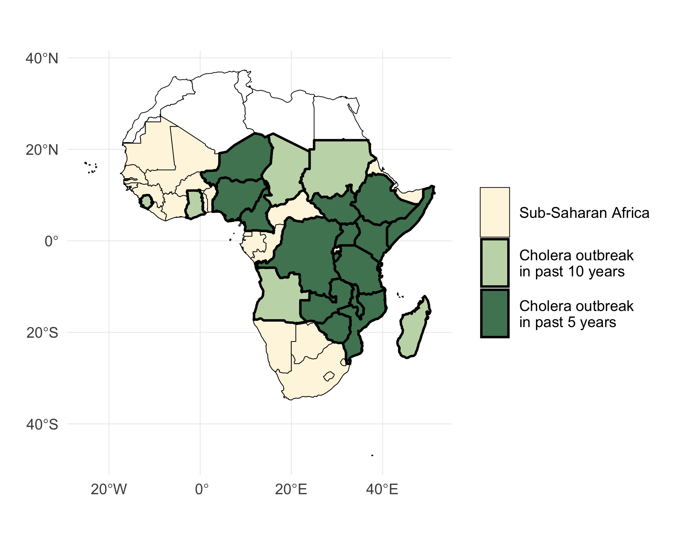
Figure 3.1: A map of Sub-Saharan Africa with countries that have experienced a cholera outbreak in the past 5 and 10 years highlighted in green. The 40 countries included in the MOSAIC modeling framework are indicated in blue.
3.1 Transmission dynamics
The model has a metapopulation structure with familiar compartments for Susceptible, Exposed, Infected, and Recovered individuals with SEIRS dynamics. The model also contains compartments for one- and two-dose vaccination (\(V_1\) and \(V_2\)) and Water & environment based transmission (W) which we refer to as SVEIWRS.
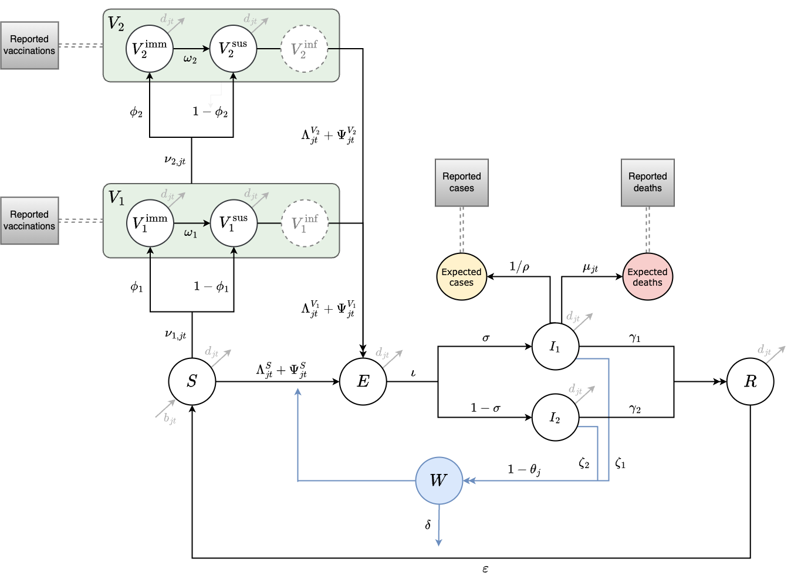
Figure 3.2: This diagram of the SVEIWRS (Susceptible-Vaccinated-Exposed-Infected-Water/environmental-Recovered-Susceptible) model shows model compartments as circles with rate parameters displayed. The primary data sources the model is fit to are shown as square nodes (Vaccination data, and reported cases and deaths).
The SVEIWRS metapopulation model, shown in Figure 3.2, is governed by the following difference equations. Vaccination is delivered proportionally across a configurable set of eligible source compartments \(\mathcal{V}^{\text{src}} \subseteq \{S, E, I_1, I_2, R\}\) (default: all five), with effective doses transferring the recipient to \(V_1\) and ineffective doses remaining in the source compartment. We write \(N^{\text{src}}_{jt} = \sum_{X \in \mathcal{V}^{\text{src}}} X_{jt}\) for the total population eligible for first-dose vaccination, which serves as the denominator of the per-compartment dose-allocation fraction:
\[\begin{equation} \begin{aligned} \mathbf{\text{Susceptible population:}}\\[1mm] S_{j,t+1} = \ & S_{jt} + b_{jt}\,N_{jt} + \varepsilon\,R_{jt} + \omega_1\,V_{1,jt} + \omega_2\,V_{2,jt} - \frac{\phi_1\,\nu_{1,jt}\,S_{jt}}{N^{\text{src}}_{jt}} - \left( \Lambda_{j,t+1} + \Psi_{j,t+1} \right) - d_{jt}\,S_{jt}\\[3mm] \mathbf{\text{One-dose vaccination:}}\\[1mm] V_{1,j,t+1} = \ & V_{1,jt} + \phi_1\,\nu_{1,jt} - \phi_2\,\nu_{2,jt} - \omega_1\,V_{1,jt} - d_{jt}\,V_{1,jt}\\[3mm] \mathbf{\text{Two-dose vaccination:}}\\[1mm] V_{2,j,t+1} = \ & V_{2,jt} + \phi_2\,\nu_{2,jt} - \omega_2\,V_{2,jt} - d_{jt}\,V_{2,jt}\\[3mm] \mathbf{\text{Infection dynamics:}}\\[1mm] E_{j,t+1} = \ & E_{jt} + \left( \Lambda_{j,t+1} + \Psi_{j,t+1}\right) - \frac{\phi_1\,\nu_{1,jt}\,E_{jt}}{N^{\text{src}}_{jt}} - \iota\,E_{jt} - d_{jt}\,E_{jt}\\[3mm] I_{1,j,t+1} = \ & I_{1,jt} + \big(1 - p^{\text{fatal}}_{jt}\big)\,\sigma\,\iota\,E_{jt} - \frac{\phi_1\,\nu_{1,jt}\,I_{1,jt}}{N^{\text{src}}_{jt}} - \gamma_1\,I_{1,jt} - d_{jt}\,I_{1,jt}\\[3mm] I_{2,j,t+1} = \ & I_{2,jt} + \left(1-\sigma\right)\,\iota\,E_{jt} - \frac{\phi_1\,\nu_{1,jt}\,I_{2,jt}}{N^{\text{src}}_{jt}} - \gamma_2\,I_{2,jt} - d_{jt}\,I_{2,jt}\\[3mm] R_{j,t+1} = \ & R_{jt} + \left( \gamma_1\,I_{1,jt} + \gamma_2\,I_{2,jt} \right) - \frac{\phi_1\,\nu_{1,jt}\,R_{jt}}{N^{\text{src}}_{jt}} - \varepsilon\,R_{jt} - d_{jt}\,R_{jt}\\[5mm] \mathbf{\text{Environment:}}\\[1mm] W_{j,t+1} = \ & W_{jt} + \left(1-\theta_j\right)\left( \zeta_1\,I_{1,jt} + \zeta_2\,I_{2,jt} \right) - \delta_{jt}\,W_{jt}\\[3mm] \end{aligned} \tag{3.1} \end{equation}\]
The vaccination terms above follow the simplified compartment structure introduced in laser-cholera 0.12 (issue #41): the per-dose vaccine effectiveness \(\phi_1, \phi_2\) acts at the moment of dose delivery rather than as an ongoing dilution of the vaccinated compartment. Of the \(\nu_{1,jt}\) first doses delivered, the \(\phi_1\nu_{1,jt}\) effective doses transfer their recipients from the source compartment to \(V_1\); the \((1-\phi_1)\nu_{1,jt}\) ineffective doses leave the recipient in the source compartment, which is why no \((1-\phi_1)\) term appears in the \(V_1\) equation. Second doses are restricted to existing \(V_1\) recipients: effective second doses transfer to \(V_2\) at rate \(\phi_2\nu_{2,jt}\), and ineffective second doses leave the recipient in \(V_1\) (so the \(V_1\) equation loses only the effective fraction \(\phi_2\nu_{2,jt}\)). Waning brings \(V_1\) and \(V_2\) recipients back to \(S\) at rates \(\omega_1\) and \(\omega_2\) respectively. While in \(V_1\) or \(V_2\), individuals are not subject to the force of infection, so the human and environmental force of infection terms act only on \(S\) (see Equations (3.2) and (3.3) below).
For detailed descriptions of all parameters appearing in Equation (3.1), see the Table of model parameters. Transmission dynamics in the model are governed primarily by two distinct force-of-infection terms: the human-to-human force of infection, \(\Lambda_{jt}\), and the environmental force of infection, \(\Psi_{jt}\).
The human-to-human force of infection at time \(t+1\) in location \(j\) acts on the local susceptible population \(S_{jt}\), accounting for departure (\(\tau_j\)) and incoming infectious contacts from other locations via the diffusion matrix \(\pi_{ij}\):
\[\begin{equation} \Lambda_{j,t+1} = \frac{ \beta_{jt}^{\text{hum}} \, (1-\tau_{j})S_{jt} \, \left[ (1-\tau_{j}) (I_{1,jt} + I_{2,jt}) + \sum_{\forall i \neq j} \pi_{ij}\tau_i(I_{1,it} + I_{2,it}) \right]^{\alpha_1}}{N_{jt}^{\alpha_2}}. \tag{3.2} \end{equation}\]
The environmental force of infection \(\Psi_{j,t+1}\) at location \(j\) and time \(t+1\) also acts on the local susceptibles, dose-responding to the per-capita environmental load \(W_{jt}/N_{jt}\) through the half-saturation constant \(\kappa\):
\[\begin{equation} \Psi_{j,t+1} = \frac{\beta_{jt}^{\text{env}}\, (1-\tau_{j})S_{jt}\,(1-\theta_j)\,W_{jt}/N_{jt}}{\kappa + W_{jt}/N_{jt}}. \tag{3.3} \end{equation}\]
Here, \(\beta_{jt}^{\text{hum}}\) and \(\beta_{jt}^{\text{env}}\) are the human-to-human and environment-to-human transmission rates; \(\tau_i\) is the probability of departing origin location \(i\); \(\pi_{ij}\) is the relative probability of travel from origin \(i\) to destination \(j\) (see section on spatial dynamics); \(\theta_j\) is the proportion of the population at location \(j\) with at least basic access to Water, Sanitation, and Hygiene (WASH); and \(\kappa\) is the half-saturation constant of the environmental dose-response, the per-capita load \(W_{jt}/N_{jt}\) (V. cholerae cells in the reservoir per resident) at which the environmental hazard reaches half its maximum (see Infectious dose (\(\kappa\))). Dividing the reservoir by the population (MOSAIC-pkg v0.89.0 onward) keeps the dose-response density dependent: without it a single symptomatic shedder saturates \(W_{jt}/(\kappa + W_{jt})\) near unity at the literature shedding rates, and \(\kappa\), \(\zeta_1\) and \(\beta_{j0}^{\text{env}}\) cannot be identified. At the default \(\kappa = 10^6\) the environmental hazard half-saturates at roughly 0.3% symptomatic prevalence, so it is approximately linear at low prevalence and saturates during large outbreaks. (The engine’s replay mode, which exists only to verify the R engine against laser-cholera draw for draw, keeps that engine’s raw-\(W_{jt}\) form.) Vaccinated individuals are excluded from both force-of-infection terms in the current SVEIWRS implementation; this is a deliberate simplification that absorbs vaccine effectiveness into the dose-delivery step and treats \(V_1\) and \(V_2\) as fully protected for the duration of immunity.
Note that all model processes are stochastic. Transition rates are converted to probabilities with the commonly used method based on the exponential waiting time distribution \(p(t) = 1-e^{-rt}\) (see Ross 2007). Integer quantities are thus moved between model compartments at each time step according to a binomial process similar to the recovery of infected individuals \(\gamma I_{jt}\):
\[\begin{equation} \frac{\partial R}{\partial t} \sim \text{Binom}(I_{jt}, 1-e^{-\gamma}). \end{equation}\]
For a detailed list of all stochastic transitions in the model, see the Table of stochastic transitions below.
3.2 Latency
An important feature of the SVEIWRS model is the inclusion of an exposed compartment \(\left(E\right)\) , which captures the latent period between exposure and the onset of infectiousness. In our model, individuals who become infected first enter the \(E\) compartment, where they remain for a period governed by the incubation rate \(\iota\) (the reciprocal of the mean incubation period), before progressing to the infectious compartments \(I_1\) (severe symptomatic infection) or \(I_2\) (mild and/or asymptomatic infection).
A systematic review by Azman et al (2013) estimated the median incubation period for cholera to be approximately \(1.4 \ \text{days} \ (1.3–1.6 \ 95\% \text{CI})\). This relatively short latency is one of the key characteristic governing cholera dynamics and is critical for accurately capturing the rapid spatial spread observed during outbreaks. We place a lognormal prior on the daily rate \(\iota\), centred on the Azman et al. median and widened well beyond its confidence interval to cover between-setting variation:
\[ \iota \sim \text{Lognormal}(-0.337,\ 0.4) \ \ \text{day}^{-1} \quad (\text{median} \approx 0.71 \ \text{day}^{-1}\text{, i.e. an incubation period of} \approx 1.4 \ \text{days; 95\% CI} \approx 0.64\text{--}3.1 \ \text{days}). \]
Each day an exposed individual progresses to infection with probability \(1 - e^{-\iota}\).
3.3 Seasonality
Cholera transmission is seasonal and is typically associated with the rainy season, so both transmission rate terms \(\beta_{jt}^{\text{*}}\) are temporally forced. For human-to-human transmission we used a sinusoidal mechanism as in Altizer et al 2006. Specifically, the function is a truncated sine-cosine form of the Fourier series with two harmonic features which has the flexibility to capture seasonal transmission dynamics driven by extended rainy seasons and/or biannual trends:
\[\begin{equation} \beta_{jt}^{\text{hum}} = \beta_{j0}^{\text{hum}} \left(1 + a_1 \cos\left(\frac{2\pi t}{p}\right) + b_1 \sin\left(\frac{2\pi t}{p}\right) + a_2 \cos\left(\frac{4\pi t}{p}\right) + b_2 \sin\left(\frac{4\pi t}{p}\right)\right). \tag{3.4} \end{equation}\]
Where, \(\beta_{j0}^{\text{hum}}\) is the mean human-to-human transmission rate at location \(j\) over all time steps. Seasonal dynamics are determined by the parameters \(a_1\), \(b_1\) and \(a_2\), \(b_2\) which gives the amplitude of the first and second waves respectively. The periodic cycle \(p\) is 365, so the function controls the temporal variation in \(\beta_{jt}^{\text{hum}}\) over each day of the year. Note that \(t\) in Equation (3.4) is the calendar day of the year (\(t = 1\) on 1 January), not the simulation day: the coefficients are fitted against calendar day of year (below), and the engine evaluates the envelope on each simulated day at that day’s calendar day of the year, offsetting the simulation clock by the day of the year of the start date (code-name season_t0). The coefficients therefore keep their seasonal meaning whatever date a simulation starts on.
Because the seasonal term multiplies \(\beta_{j0}^{\text{hum}}\), the envelope \(1 + f(t)\), where \(f(t)\) is the sum of the four harmonic terms in Equation (3.4), must stay positive; multiplicative seasonal forcing requires an amplitude below one (Keeling & Rohani 2008, section 5.2). A Fourier fit to normalised case counts is not constrained this way and can dip below \(-1\), which would switch human-to-human transmission off for weeks at a time. When a case-fitted envelope has \(\min_t\,[1 + f(t)] < 0.1\), we multiply all four coefficients (and their standard errors) by the single factor \(0.9 / \left[-\min_t f(t)\right]\), which lowers the amplitude so that the minimum of the envelope is exactly \(0.1\) while keeping the phase and the relative shape of the season. The floor of \(0.1\) (code-name envelope_floor) is a numerical positivity margin that leaves room for prior draws around the fitted means, not an estimated seasonal trough; the factor applied to each country is recorded as envelope_scale in the coefficient table.
The priors on \(a_1\), \(b_1\), \(a_2\) and \(b_2\) are Normal distributions centred on the fitted coefficients with standard deviations of \(\sqrt{2}\) times their standard errors, so the envelope is positive at the prior means but not in every draw: when the four coefficients are drawn independently, \(1 + f(t)\) falls below zero somewhere in the year in about a third of draws (averaged over the 40 countries), most often in countries whose fitted trough sits at the floor. The engine clamps a negative human force of infection to zero, so such a draw has no human-to-human transmission in the part of the low season where the envelope is negative, while environmental transmission continues. We did not shrink the prior standard deviations to prevent this, because doing so would pin each seasonal amplitude to the floor-scaled fit.
We estimated the parameters in the Fourier series (\(a_1\), \(b_1\), \(a_2\), \(b_2\)) using the Levenberg–Marquardt algorithm in the minpack.lm R library. Given the lack of reported cholera case data for many countries in SSA and the association between cholera transmission and the rainy season, we leveraged seasonal precipitation data to help fit the Fourier wave function to all countries. We first gathered weekly precipitation values for 30 uniformly distributed points within each country from the Open-Meteo Historical Weather Data API. Then we fit the Fourier series to the weekly precipitation data and used these parameters as the starting values when fitting the model to the more sparse cholera case data. Both fits use the weeks from September 2010 to August 2025.
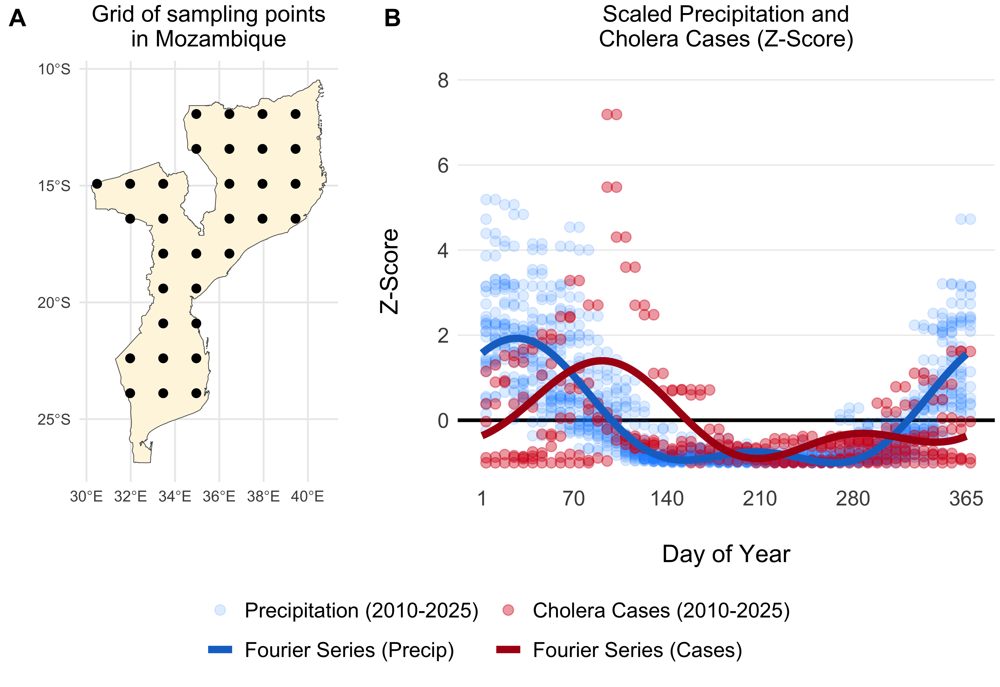
Figure 3.3: Example of a grid of 30 uniformly distributed points within Mozambique (A). The scatterplot shows weekly summed precipitation values at those 30 grid points and cholera cases plotted on the same scale of the Z-Score which shows the variance around the mean in terms of the standard deviation. Fitted Fourier series functions are shown as blue (fit precipitation data) and red (fit to cholera case data) lines.
For countries with no reported case data, we inferred seasonal dynamics using the fitted wave function of a neighboring country with available case data. The selected neighbor was chosen from the same cluster of countries (grouped hierarchically into four clusters based on precipitation seasonality using Ward’s method; see Figure 3.4) that had the highest correlation in seasonal precipitation with the country lacking case data. In the rare event that no country with reported case data was found within the same seasonal cluster, we expanded the search to the 10 nearest neighbors and continued expanding by adding the next nearest neighbor until a match was found.

Figure 3.4: A) Map showing the clustering of African countries based on their seasonal precipitation patterns (September 2010 to August 2025). Countries are colored according to their cluster assignments, identified using hierarchical clustering. B) Fourier series fitted to weekly precipitation for each country. Each line plot shows the seasonal pattern for countries within a given cluster. Clusters are used to infer the seasonal transmission dynamics for countries where there are no reported cholera cases.
Using the model fitting methods described above, and the cluster-based approach for inferring the seasonal Fourier series pattern in countries without reported cholera cases, we modeled the seasonal dynamics for all 40 countries in the MOSAIC framework. These dynamics are visualized in Figure 3.5, with the corresponding Fourier model coefficients presented in Table 3.1.
![Seasonal transmission patterns for all countries modeled in MOSAIC as modeled by the truncated Fourier series in Equation \@ref(eq:beta1). Blue lines give the Fourier series model fits for precipitation and the red lines give model fits to reported cholera cases (both September 2010 to August 2025). For countries where reported case data were not available, the Fourier model was inferred by the nearest country with the most similar seasonal precipitation patterns as determined by the hierarchical clustering; these countries are labelled with the country they were inferred from, and their case fit is dashed. The X-axis represents the day of the year, while the Y-axis shows the Z-score of weekly precipitation and cholera cases.](figures/seasonal_transmission_all.png)
Figure 3.5: Seasonal transmission patterns for all countries modeled in MOSAIC as modeled by the truncated Fourier series in Equation (3.4). Blue lines give the Fourier series model fits for precipitation and the red lines give model fits to reported cholera cases (both September 2010 to August 2025). For countries where reported case data were not available, the Fourier model was inferred by the nearest country with the most similar seasonal precipitation patterns as determined by the hierarchical clustering; these countries are labelled with the country they were inferred from, and their case fit is dashed. The X-axis represents the day of the year, while the Y-axis shows the Z-score of weekly precipitation and cholera cases.
| Country | \(a_1\) | \(a_2\) | \(b_1\) | \(b_2\) |
|---|---|---|---|---|
| Angola | -0.23 (-0.37 to -0.08) | -0.22 (-0.37 to -0.07) | 1 (0.85 to 1.15) | -0.3 (-0.45 to -0.15) |
| Benin | 0.08 (-0.06 to 0.22) | -0.46 (-0.6 to -0.32) | -1.02 (-1.15 to -0.88) | -0.23 (-0.37 to -0.09) |
| Burkina Faso | -0.88 (-1.13 to -0.64) | 0.45 (0.21 to 0.69) | -0.44 (-0.69 to -0.2) | 0.5 (0.26 to 0.74) |
| Burundi | -0.45 (-0.54 to -0.36) | -0.16 (-0.25 to -0.07) | -0.21 (-0.29 to -0.12) | 0.02 (-0.07 to 0.1) |
| Cameroon | -0.48 (-0.58 to -0.39) | -0.36 (-0.45 to -0.26) | 0.03 (-0.07 to 0.12) | -0.02 (-0.11 to 0.07) |
| Central African Republic | -0.66 (-0.84 to -0.49) | 0.18 (0 to 0.35) | -0.52 (-0.69 to -0.34) | 0.76 (0.58 to 0.93) |
| Chad | -0.39 (-0.55 to -0.24) | -0.42 (-0.58 to -0.27) | -0.92 (-1.07 to -0.77) | 0.53 (0.37 to 0.68) |
| Congo | -0.73 (-0.88 to -0.57) | 0.28 (0.12 to 0.44) | -0.51 (-0.67 to -0.35) | 0.7 (0.55 to 0.86) |
| Côte d’Ivoire | -0.54 (-0.84 to -0.24) | 0.72 (0.42 to 1.03) | -0.15 (-0.45 to 0.16) | 0.44 (0.14 to 0.75) |
| DRC | 0.04 (0.01 to 0.08) | -0.09 (-0.13 to -0.06) | -0.16 (-0.2 to -0.12) | 0.07 (0.03 to 0.1) |
| Eswatini | -0.36 (-0.66 to -0.06) | -0.47 (-0.82 to -0.13) | -0.12 (-0.55 to 0.32) | 0.35 (0.16 to 0.54) |
| Ethiopia | -0.41 (-0.48 to -0.35) | -0.35 (-0.42 to -0.29) | -0.13 (-0.19 to -0.07) | 0.27 (0.21 to 0.34) |
| Ghana | -0.01 (-0.15 to 0.13) | -0.43 (-0.57 to -0.28) | -0.95 (-1.1 to -0.81) | 0.22 (0.08 to 0.37) |
| Guinea | -0.56 (-0.72 to -0.4) | -0.17 (-0.33 to -0.01) | -0.66 (-0.82 to -0.5) | 0.73 (0.57 to 0.89) |
| Kenya | 0.11 (0 to 0.22) | 0.07 (-0.04 to 0.19) | 0.5 (0.39 to 0.61) | -0.2 (-0.31 to -0.09) |
| Liberia | 0.14 (0.04 to 0.23) | -0.31 (-0.4 to -0.21) | 0.28 (0.19 to 0.38) | -0.18 (-0.27 to -0.08) |
| Malawi | 0.75 (0.61 to 0.9) | 0.25 (0.1 to 0.39) | 0.58 (0.43 to 0.73) | 0.64 (0.49 to 0.78) |
| Mozambique | 0.15 (0.03 to 0.27) | -0.53 (-0.64 to -0.41) | 0.87 (0.76 to 0.98) | -0.07 (-0.19 to 0.04) |
| Namibia | 0.24 (0.15 to 0.33) | 0.25 (0.14 to 0.37) | 0.56 (0.41 to 0.71) | 0.41 (0.29 to 0.52) |
| Niger | -0.49 (-0.6 to -0.38) | -0.39 (-0.5 to -0.28) | -0.79 (-0.9 to -0.68) | 0.54 (0.43 to 0.65) |
| Nigeria | -0.7 (-0.79 to -0.6) | -0.19 (-0.28 to -0.1) | -0.63 (-0.72 to -0.54) | 0.41 (0.32 to 0.5) |
| Rwanda | 0.32 (0.02 to 0.63) | -0.39 (-0.79 to 0.02) | 1.04 (0.53 to 1.55) | 0.38 (-0.01 to 0.78) |
| Sierra Leone | -0.52 (-0.67 to -0.38) | -0.21 (-0.35 to -0.07) | -0.67 (-0.81 to -0.53) | 0.74 (0.6 to 0.89) |
| Somalia | -0.37 (-0.46 to -0.27) | -0.17 (-0.27 to -0.08) | 0.76 (0.67 to 0.85) | -0.24 (-0.34 to -0.15) |
| South Africa | -0.4 (-0.82 to 0.02) | -0.39 (-0.81 to 0.03) | -0.69 (-1.1 to -0.27) | 0.7 (0.28 to 1.12) |
| South Sudan | 0.16 (0.06 to 0.26) | 0.42 (0.32 to 0.51) | 0.46 (0.37 to 0.56) | -0.08 (-0.18 to 0.02) |
| Tanzania | 0.62 (0.54 to 0.69) | -0.09 (-0.16 to -0.01) | -0.46 (-0.53 to -0.39) | -0.17 (-0.24 to -0.1) |
| Togo | 1.03 (0.82 to 1.23) | 0.14 (-0.06 to 0.34) | -0.6 (-0.8 to -0.4) | -0.36 (-0.56 to -0.16) |
| Uganda | 0.32 (0.15 to 0.5) | -0.17 (-0.34 to 0) | 0.7 (0.54 to 0.87) | 0.6 (0.43 to 0.77) |
| Zambia | 0.92 (0.74 to 1.1) | 0.52 (0.34 to 0.7) | 0.37 (0.19 to 0.55) | 0.36 (0.18 to 0.54) |
| Zimbabwe | 0.75 (0.61 to 0.9) | 0.02 (-0.13 to 0.16) | -0.1 (-0.24 to 0.04) | 0.03 (-0.11 to 0.17) |
3.4 Environmental transmission
Environmental transmission is a critical factor in cholera spread and consists of several key components: the rate at which infected individuals shed V. cholerae into the environment, the pathogen’s survival rate in environmental conditions, and the overall suitability of the environment for sustaining the bacteria over time.
To capture the impacts of climate-drivers on cholera transmission, we have included the parameter \(\psi_{jt}\), which represents the current state of environmental suitability with respect to: i) the survival time of V. cholerae in the environment and, ii) the rate of environment-to-human transmission which contributes to the overall force of infection.
\[\begin{equation} \beta_{jt}^{\text{env}} = \beta_{j0}^{\text{env}} \Bigg(1 + \frac{\psi_{jt}-\bar\psi_j}{\bar\psi_j} \Bigg) \quad \text{and} \quad \bar\psi_j = \frac{1}{T} \sum_{t=1}^{T} \psi_{jt} \tag{3.5} \end{equation}\]
This formulation effectively scales the base environmental transmission rate \(\beta_{j0}^{\text{env}}\) so that the realised rate \(\beta_{jt}^{\text{env}}\) varies over time according to the climatically driven model of suitability. Note that, unlike the cosine wave function of \(\beta_{jt}^{\text{hum}}\), this temporal term can increase or decrease over time following multi-annual cycles.
3.4.1 Suitability-dependent decay rate
Suitability also influences how long V. cholerae survives in the environment. The decay rate \(\delta_{jt}\) is modeled as the inverse of survival time, which varies with suitability. This is defined as:
\[ \delta_{jt} = \frac{1}{\text{days}_{\text{short}} + f\big(\psi_{jt}\big) \cdot \big(\text{days}_{\text{long}} - \text{days}_{\text{short}}\big)}. \tag{3.6} \]
Where \(\text{days}_{\text{short}}\) is the survival time at low suitability (\(\psi_{jt}\!\to\!0\)) and \(\text{days}_{\text{long}}\) is the survival time at high suitability (\(\psi_{jt}\!\to\!1\)). Suitability is mapped to the V. cholerae decay rate through a transformation function \(f(\psi_{jt})\) that scales suitability values using a cumulative Beta distribution and two shape parameters \(s_1\) and \(s_2\): \(f\big(\psi_{jt}\big) = \text{pbeta}(\psi_{jt} \mid s_1, \, s_2)\).
The transformation \(f\big(\psi_{jt}\big) \in [0, 1]\) enables a range of functional forms, including linear, convex, concave, sigmoidal, or arcsine responses to suitability. This flexibility ensures that survival dynamics can reflect a variety of empirically plausible relationships with environmental conditions which can be seen in Figure 3.6.
Rather than sampling \(\text{days}_{\text{long}}\) directly — which would occasionally produce draws with \(\text{days}_{\text{long}} < \text{days}_{\text{short}}\) contrary to biology — we sample a non-negative spread \(\text{days}_{\text{spread}}\) and set \(\text{days}_{\text{long}} = \text{days}_{\text{short}} + \text{days}_{\text{spread}}\), which guarantees that the longest survival time exceeds the shortest by construction. The priors on the four decay parameters are truncated normals, chosen so that the modal survival time is approximately 16 days at low suitability and approximately 196 days at high suitability (16 + 180), shown as the horizontal bounds in Figure 3.6:
\[ \begin{aligned} \text{days}_{\text{short}} \ \sim\ & \text{Truncnorm}(16,\ 7,\ 0.01,\ 60),\\ \text{days}_{\text{spread}} \ \sim\ & \text{Truncnorm}(180,\ 95,\ 1,\ 365),\\ \text{days}_{\text{long}} \ =\ & \text{days}_{\text{short}} + \text{days}_{\text{spread}},\\ s_1,\, s_2 \ \sim\ & \text{Truncnorm}(3,\ 5,\ 0.1,\ 10). \end{aligned} \tag{3.7} \]
The four-argument truncated normals are notated \(\text{Truncnorm}(\mu, \sigma, a, b)\) with mean \(\mu\), standard deviation \(\sigma\), and support \([a, b]\). Using truncated normals (rather than Uniform priors on \(s_1, s_2\) as in earlier MOSAIC versions) prevents posterior drift toward boundary values during the staged calibration described in the Model Calibration page.
![Relationship between environmental suitability ($\psi_{jt}$) and the survival and decay rate of *V. cholerae* in the environment ($\delta_{jt}$). The five curves correspond to alternative shape choices for the cumulative-Beta transformation $f(\psi_{jt}) = \text{pbeta}(\psi_{jt}\mid s_1, s_2)$: Linear $(s_1{=}1, s_2{=}1)$, Concave $(s_1{=}1, s_2{=}5)$, Convex $(s_1{=}5, s_2{=}1)$, Sigmoidal $(s_1{=}5, s_2{=}5)$, and Arcsine $(s_1{=}0.5, s_2{=}0.5)$. The primary y-axis shows survival time in days; the secondary y-axis shows the corresponding decay rate $\delta_{jt} = 1/\text{days}(\psi_{jt})$. The horizontal dashed lines are placed at the modal values of the two MOSAIC priors: $\text{days}_{\text{short}} \approx 16$ days at low suitability (the mode of $\text{Truncnorm}(16, 7, 0.01, 60)$) and $\text{days}_{\text{long}} = \text{days}_{\text{short}} + \text{days}_{\text{spread}} \approx 16 + 180 = 196$ days at high suitability.](figures/vibrio_decay_rate.png)
Figure 3.6: Relationship between environmental suitability (\(\psi_{jt}\)) and the survival and decay rate of V. cholerae in the environment (\(\delta_{jt}\)). The five curves correspond to alternative shape choices for the cumulative-Beta transformation \(f(\psi_{jt}) = \text{pbeta}(\psi_{jt}\mid s_1, s_2)\): Linear \((s_1{=}1, s_2{=}1)\), Concave \((s_1{=}1, s_2{=}5)\), Convex \((s_1{=}5, s_2{=}1)\), Sigmoidal \((s_1{=}5, s_2{=}5)\), and Arcsine \((s_1{=}0.5, s_2{=}0.5)\). The primary y-axis shows survival time in days; the secondary y-axis shows the corresponding decay rate \(\delta_{jt} = 1/\text{days}(\psi_{jt})\). The horizontal dashed lines are placed at the modal values of the two MOSAIC priors: \(\text{days}_{\text{short}} \approx 16\) days at low suitability (the mode of \(\text{Truncnorm}(16, 7, 0.01, 60)\)) and \(\text{days}_{\text{long}} = \text{days}_{\text{short}} + \text{days}_{\text{spread}} \approx 16 + 180 = 196\) days at high suitability.
3.4.2 Modeling environmental suitability
3.4.2.1 Environmental data
The mechanism for environment-to-human transmission (Equation (3.5)) and rate of decay of V. cholerae in the environment (Equation (3.6)) is driven by the parameter \(\psi_{jt}\), which we refer to as environmental suitability. The parameter \(\psi_{jt}\) is modeled as a time series for each location using a Long Short-Term Memory (LSTM) Recurrent Neural Network (RNN) model and a suite of 22 covariates: 17 historical and forecasted climate variables drawn from the MRI-AGCM3-2-S climate model, 4 large-scale climate drivers (the Indian Ocean Dipole Mode Index (DMI) and the El Niño Southern Oscillation (ENSO) from three Pacific Ocean regions — Niño3, Niño3.4, and Niño4), and 1 location-specific variable giving the mean elevation for each country. See example time series of climate variables from one country (Mozambique) in Figure 3.7 and DMI and ENSO variables in Figure 3.8. A list of all covariates and their sources can be seen in Table 3.2.
Note that while the 19 climate variables offer forecasts up to 2030 and beyond, the forecasts of the DMI and ENSO variables are limited to 5 months into the future. So, environmental suitability model predictions are currently limited to a 5 month time horizon but future iterations may allow for longer forecasts. Additional data sources will be integrated into subsequent versions of the suitability model. For instance, flood and cyclone data will likely be incorporated later, though not in the initial version of the model.
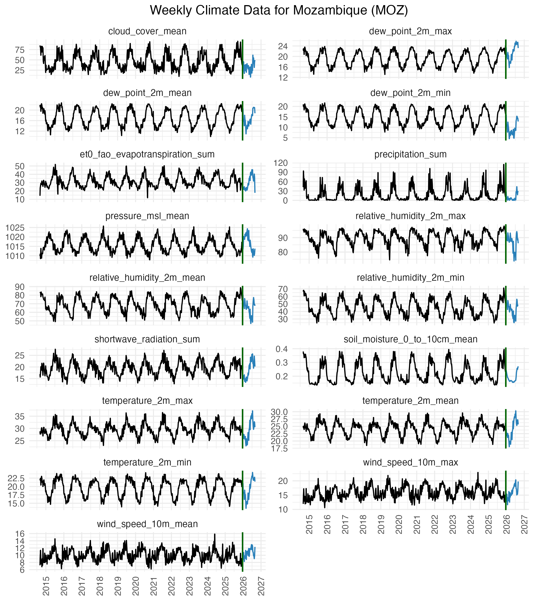
Figure 3.7: Climate data acquired from the OpenMeteo data API. Data were collected from 30 uniformly distributed points across each country and then aggregated to give weekly values of 17 climate variable from 1970 to 2030.
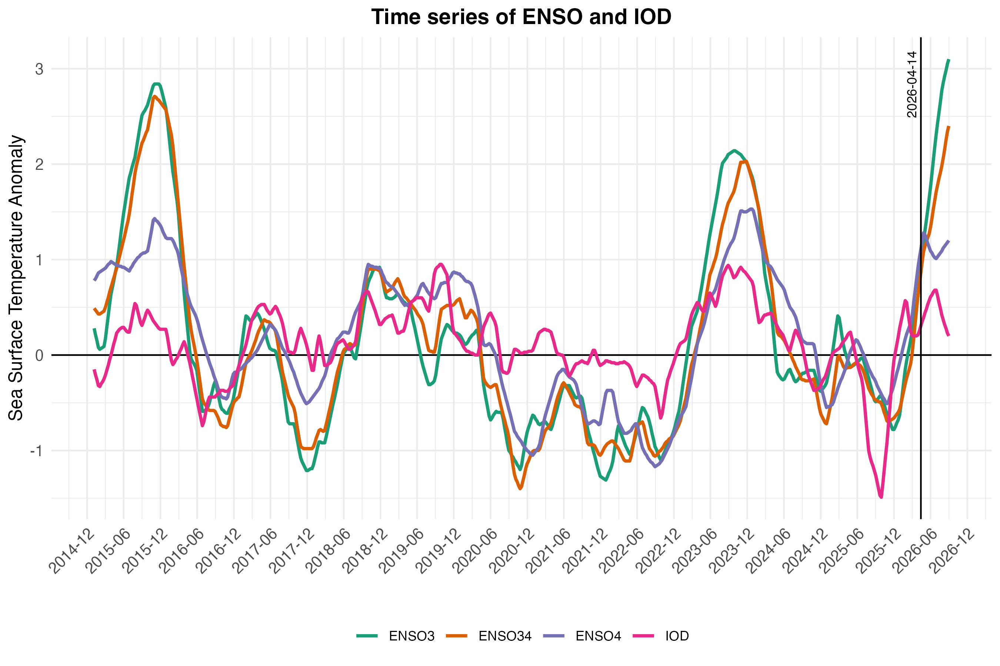
Figure 3.8: Historical and forecasted values of the Indian Ocean Dipole Mode Index (DMI) and the El Niño Southern Oscillation (ENSO) from 2015 to 2025. The ENSO values come from three different regions: Niño3 (central to eastern Pacific), Niño3.4 (central Pacific), and Niño4 (western-central Pacific). Data are from National Oceanic and Atmospheric Administration (NOAA) and Bureau of Meteorology (BOM).
| Covariate | Description | Source |
|---|---|---|
| temperature_2m_mean | Average temperature at 2 meters | OpenMeteo Historical Weather and Climate Change APIs |
| temperature_2m_max | Maximum temperature at 2 meters | OpenMeteo Historical Weather and Climate Change APIs |
| temperature_2m_min | Minimum temperature at 2 meters | OpenMeteo Historical Weather and Climate Change APIs |
| wind_speed_10m_mean | Average wind speed at 10 meters | OpenMeteo Historical Weather and Climate Change APIs |
| wind_speed_10m_max | Maximum wind speed at 10 meters | OpenMeteo Historical Weather and Climate Change APIs |
| cloud_cover_mean | Mean cloud cover | OpenMeteo Historical Weather and Climate Change APIs |
| shortwave_radiation_sum | Total shortwave radiation | OpenMeteo Historical Weather and Climate Change APIs |
| relative_humidity_2m_mean | Mean relative humidity at 2 meters | OpenMeteo Historical Weather and Climate Change APIs |
| relative_humidity_2m_max | Maximum relative humidity at 2 meters | OpenMeteo Historical Weather and Climate Change APIs |
| relative_humidity_2m_min | Minimum relative humidity at 2 meters | OpenMeteo Historical Weather and Climate Change APIs |
| dew_point_2m_mean | Mean dew point at 2 meters | OpenMeteo Historical Weather and Climate Change APIs |
| dew_point_2m_min | Minimum dew point at 2 meters | OpenMeteo Historical Weather and Climate Change APIs |
| dew_point_2m_max | Maximum dew point at 2 meters | OpenMeteo Historical Weather and Climate Change APIs |
| precipitation_sum | Total precipitation | OpenMeteo Historical Weather and Climate Change APIs |
| pressure_msl_mean | Mean sea level pressure | OpenMeteo Historical Weather and Climate Change APIs |
| soil_moisture_0_to_10cm_mean | Mean soil moisture at 0 to 10 cm | OpenMeteo Historical Weather and Climate Change APIs |
| et0_fao_evapotranspiration_sum | Total evapotranspiration (FAO method) | OpenMeteo Historical Weather and Climate Change APIs |
| DMI | Dipole Mode Index (DMI) | NOAA and BOM |
| ENSO3 | El Niño Southern Oscillation (ENSO) - Region 3 | NOAA and BOM |
| ENSO34 | ENSO - Region 3.4 | NOAA and BOM |
| ENSO4 | ENSO - Region 4 | NOAA and BOM |
| elevation | Mean elevation | Amazon Web Services Terrain Tiles |
3.4.2.2 Deep learning neural network model
As mentioned above, we model environmental suitability \(\psi_{jt}\) using a Long Short-Term Memory (LSTM) Recurrent Neural Network (RNN) model. The LSTM model was developed using keras and tensorflow in R to predict binary outcomes. Thus the modeled quantity \(\psi_{jt}\) is a proportion implying unsuitable conditions at 0 and perfectly suitable conditions at 1.
The model was fitted to reported case counts that were converted to a binary variable using a threshold of 200 reported cases per week. Given delays in reporting and likely lead times for environmental suitability ahead of transmission and case reporting, we also set the preceding one week to be suitable and in cases where there were two consecutive weeks of >200 cases per week, we assumed that the preceding two weeks were also suitable. See Figure 3.9 for an example of how reported case counts are converted to a binary variable representing presumed environmental suitability for V. cholerae.

Figure 3.9: Reported cases converted to binary variable for modeling environmental suitability.
The model is a Long Short-Term Memory (LSTM) neural network designed for binary classification, where environmental suitability, \(\psi_{jt}\), is modeled as a function of the hidden state \(h_t\) and hidden bias term \(b_h\). Specifically, \(\psi_{jt}\) is defined by a sigmoid activation function applied to the linear combination of the hidden state \(h_t\) and the bias \(b_h\) which if given by the 3 layers of the LSTM model:
\[\begin{equation} \psi_{jt} \sim \text{Sigmoid}(w_h \cdot h_t + b_h) \tag{3.8} \end{equation}\]
\[\begin{equation} h_t = \text{LSTM}\big(\text{temperature}_{jt}, \ \text{precipitation}_{jt}, \ \text{ENSO}_{t}, \dots \big) \end{equation}\]
In this formulation, \(h_t\) represents the hidden state generated by the LSTM network based on input variables such as temperature, precipitation, and ENSO conditions, while \(b_h\) is a bias term added to the output of the hidden state transformation.
The deep learning LSTM model consists of three stacked LSTM-RNN layers. The first LSTM layer has 500 units and the second and third LSTM layers have 250 and 100 units respectively. The architecture the LSTM model is configured to pass node values to subsequent LSTM layers allowing deep learning of more the complex interactions among the climate variable over time. We enforced model sparsity for each LSTM layer using L2 regularization (penalty = 0.001) and used a dropout rate of 0.5 for each LSTM layer to further prevent overfitting on the limited amount of data. The final output layer was a dense layer with a single unit and a sigmoid activation function to produce a probability value for binary classification, i.e. a prediction of environmental suitability \(\psi_{jt}\) on a scale of 0 to 1.
To fit the LSTM model to data, we modified the learning rate by applying an exponential decay schedule that started at 0.001 and decayed by a factor of 0.9 every 10,000 steps to enable smoother convergence. The model was compiled using the Adam optimizer with this learning rate schedule, along with binary cross-entropy as the loss function and accuracy as the evaluation metric. The model was trained for a maximum of 200 epochs with a batch size of 1024. We allowed model fitting to stop early with a patience parameter of 10 which halts training if no improvement is observed in validation accuracy for 10 consecutive epochs. To train the model we set aside 20% of the observed data for validation and also used 20% of the training data for model fitting. The training history, including loss and accuracy, was monitored over the course of training and gave a final test accuracy of 0.73 and a final test loss of 0.56 (see Figure 3.10).
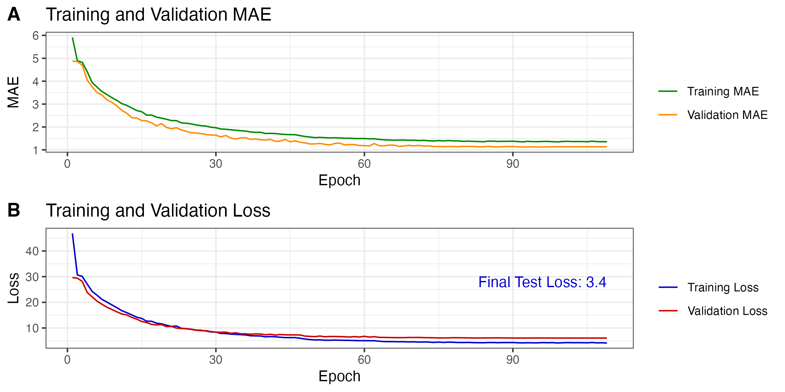
Figure 3.10: Model performance on training and validation data.
After model training was completed, we predicted the values of environmental suitability \(\psi_{jt}\) across all time steps for each location. Predictions start in January 1970 and go up to 5 months past the present date (currently February 2025). Given the amount of noise in the model predictions, we added a simple LOESS spline with logit transformation to smooth model predictions over time and give a more stable value of \(\psi_{jt}\) when incorporating it into other model features (e.g. Equations (3.5) and (3.6)). The resulting model predictions are shown for an example country such as Mozambique in Figure 3.11 which compares model predictions to the original case counts and the binary classification. Predicitons for all model locations are shown in a simplified view in Figure 3.12.
Note that the architecture described above is the original v0.1 suitability model. The current default in MOSAIC-pkg (est_suitability(), architecture lstm_v2_hierarchical_film) is a hierarchical LSTM with region- and country-level modulation, trained with expanding-window rolling-origin cross-validation; it is fitted with several random seeds, and the seed-level predictions are pooled by their median on the logit scale (not averaged). When suitability is estimated retrospectively (a fitting cutoff earlier than the end of the surveillance record, e.g. for forecast cross-validation), the default pre-computed response is scaled by anchors computed over the whole data panel unless the panel was compiled with a matching anchor cutoff, so out-of-sample skill measured from such a fit is optimistic; the frozen lstm_v1_legacy path is never leak-free for a retrospective cutoff. The production refresh, which fits up to the end of surveillance, is not affected.
Also, please note that this initial version of the model is fitted to a rather small amount of data. Model hyper parameters were specifically chosen to reduce overfitting. Therefore, we recommend to not over-interpret the time series predictions of the model at this early stage since they are likely to change and improve as more historical incidence data is included in future versions.
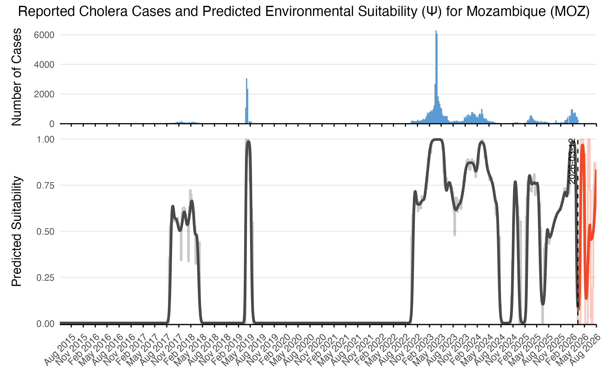
Figure 3.11: The LSTM model predictions over time and reported cases for an example country such as Mozambique. Reported cases are shown in the top panel and the shaded areas show the binary classification used to characterize environmental suitability. Raw model predictions are shown in the transparent brown line with the solid black line showing the LOESS smoothing. Forecasted values beyond the current time point are shown in orange and are limited to 5 month time horizon.

Figure 3.12: The smoothed LSTM model predictions (lines) and binary suitability classification (shaded areas) over time for all countries in the MOSAIC framework. Orange lines show forecasts beyond the current date. With ENSO and DMI covariates included in the model, forecasts are limited to 5 months.
3.4.2.3 Calibration of suitability to surveillance (\(\psi^{\ast}_{jt}\))
The raw LSTM output \(\psi_{jt}\) captures the climate-driven potential for V. cholerae survival and transmission, but the relationship between this potential and the observed surveillance signal varies by location. In some countries epidemics peak shortly after suitability peaks, while in others there is a lag of several weeks; in some countries the climate-driven seasonality is sharper than the cholera-case signal, while in others it is flatter. Re-training the LSTM to fit case data directly would overfit the sparse surveillance record, so we instead apply a per-location logit affine calibration with an optional time offset and causal exponential moving average:
\[\begin{equation} \psi^{\ast}_{jt} = z_{\psi^{\ast},j}\, \sigma\!\big(a_{\psi^{\ast},j}\, \text{logit}\big(\psi_{j,\,t - k_{\psi^{\ast},j}}\big) + b_{\psi^{\ast},j}\big) + (1 - z_{\psi^{\ast},j})\, \psi^{\ast}_{j,t-1}, \tag{3.9} \end{equation}\]
where \(\sigma(\cdot)\) is the logistic function and \(\text{logit}(\cdot)\) its inverse. Equivalently, in odds-space the affine step is \(\text{odds}^{\ast}_t = e^{b_{\psi^{\ast},j}} \cdot (\text{odds}_t)^{a_{\psi^{\ast},j}}\), so \(a_{\psi^{\ast},j} > 1\) sharpens peaks and \(a_{\psi^{\ast},j} < 1\) flattens them, while \(b_{\psi^{\ast},j}\) shifts the baseline odds up or down. The four calibration parameters have the following priors, fit independently per country:
\[ \begin{aligned} a_{\psi^{\ast},j} \ \sim\ & \text{Truncnorm}(1,\ 1,\ 0,\ \infty),\\ b_{\psi^{\ast},j} \ \sim\ & \mathcal{N}(1,\ 2.5),\\ z_{\psi^{\ast},j} \ \sim\ & \text{Beta}(2,\ 1),\\ k_{\psi^{\ast},j} \ \sim\ & \text{Truncnorm}(0,\ 25,\ -90,\ 90). \end{aligned} \tag{3.10} \]
The shape prior is centred on the identity transformation \(a_{\psi^{\ast},j} = 1\); the offset prior is centred at \(+1\) (baseline odds multiplied by \(e \approx 2.7\)), which matches the low level of the per-capita suitability response adopted in priors_default v15.11 and moves the environmental decay rate of Equation (3.6), which reads \(\psi^{\ast}_{jt}\) on its absolute level, off the \(\text{days}_{\text{short}}\) floor, while its standard deviation of 2.5 allows the odds to shift by a further factor of approximately \(e^{2.5} \approx 12\) in either direction; the smoothing prior \(z_{\psi^{\ast},j} \sim \text{Beta}(2, 1)\) has its mode at \(z = 1\) (no smoothing) and discourages aggressive over-smoothing during the staged calibration; and the time offset \(k_{\psi^{\ast},j}\) permits both a forward lag of up to 90 days (e.g. epidemics that trail suitability) and a backward advance of up to 90 days (e.g. epidemics that precede suitability peaks). The calibrated quantity \(\psi^{\ast}_{jt}\) enters the model wherever the raw LSTM output \(\psi_{jt}\) would otherwise be used (Equations (3.5) and (3.6)). A diagnostic plot comparing \(\psi_{jt}\) and \(\psi^{\ast}_{jt}\) for each location is produced by plot_psi_star_diagnostic() in the calibration pipeline.
3.4.3 Infectious dose (\(\kappa\))
The half-saturation constant \(\kappa\) in Equation (3.3) is the dose at which the environmental hazard reaches half its maximum. In the engine the dose is the per-capita load \(W_{jt}/N_{jt}\) (cells in the reservoir per resident, MOSAIC-pkg v0.89.0 onward), not a water concentration, so the volunteer infectious-dose (ID\(_{50}\)) studies below anchor the scale of \(\kappa\) rather than defining it directly; the residual conversion between cells per resident and cells per mL of ingested water is absorbed into the shedding rates \(\zeta_1, \zeta_2\) (see Shedding of V. cholerae). Historical cholera transmission models have fixed \(\kappa = 10^6\) cells, a value traceable to the unbuffered water-only volunteer studies of Hornick et al. 1971 and adopted by convention in subsequent modelling work (e.g. Hartley et al. 2006). Modern re-analyses of buffered-exposure volunteer studies — in which sodium bicarbonate neutralises gastric acid, mimicking endemic exposure through food or contaminated water — support a lower central estimate near \(10^5\) CFU with substantial between-study heterogeneity.
To reflect this evidence base we compiled a meta-analysis of 13 published infectious-dose estimates spanning four types of source: direct human-volunteer challenge studies, Beta-Poisson QMRA fits, expert-review summaries, and conventional modelling values. The volunteer challenge studies (Hornick et al. 1971, Cash et al. 1974, Levine et al. 1981, Levine et al. 1988, Tacket et al. 1999) provide the strongest primary evidence; QMRA syntheses (Haas, Rose & Gerba 1999) and expert reviews (Kaper et al. 1995, Nelson et al. 2009) provide supporting summaries; and conventional modelling values (Codeço 2001, Hartley et al. 2006) capture the values adopted in the cholera-transmission literature. Each source is weighted by its evidentiary quality and relevance to the endemic, buffered-exposure context: direct volunteer challenge studies receive a weight of 1.0, while expert reviews and QMRA syntheses receive weights between 0 and 0.5 (the modelling-convention values and the unbuffered water-only arm of Hornick et al. 1971 receive zero weight, so eight of the 13 estimates contribute to the fit). A weighted lognormal is then fit by maximum-likelihood on the log10 scale:
\[ \kappa \sim \text{Lognormal}(11.77,\ 1.82). \tag{3.11} \]
The resulting prior has a median of approximately \(1.3 \times 10^5\) CFU and a 95% credible interval of approximately \(3.6 \times 10^3\) to \(4.6 \times 10^6\) CFU (Figure 3.13). This is consistent with the lower modern-era central estimate while preserving the order-of-magnitude uncertainty that the volunteer-study literature genuinely reflects. Note that \(\kappa\) is pinned at \(10^6\) rather than sampled by default in calibration (sample_kappa = FALSE, the value in the default configuration) since the per-capita dose-response was introduced in MOSAIC-pkg v0.89.0; at that value the environmental hazard half-saturates at roughly 0.3% symptomatic prevalence. The prior of Equation (3.11) is retained as the literature record and for sensitivity runs that sample \(\kappa\).
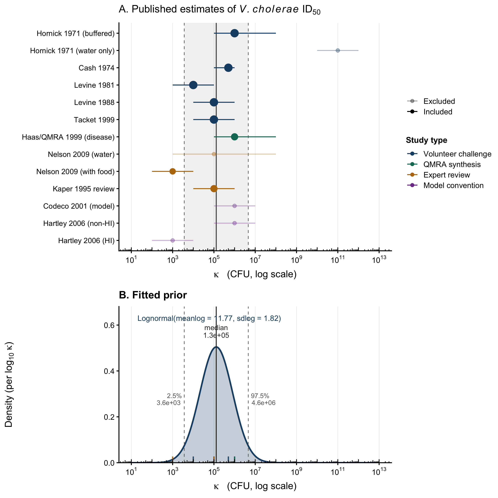
Figure 3.13: Prior distribution for the environmental half-saturation constant \(\kappa\), anchored on the V. cholerae dose at which the per-contact probability of infection is 50%. Points and bars show the 13 literature anchors and their reported bounds; the lognormal fit (solid line) is weighted by evidentiary quality, with direct human-volunteer challenge studies receiving the highest weight.
3.4.4 Shedding of V. cholerae
The rate at which infected individuals shed Vibrio cholerae into the environment is a critical factor influencing cholera transmission dynamics. Shedding rates vary widely depending on the severity of infection, the host immune response, and environmental conditions. To reflect this heterogeneity, the model distinguishes between two types of infected individuals:
- Symptomatic individuals (\(I_1\)), who tend to shed substantially more bacteria for longer due to more severe gastrointestinal symptoms;
- Asymptomatic individuals (\(I_2\)), who shed less per capita and for a shorter period of time, but may contribute significantly to environmental contamination due to their larger numbers.
According to the modeling study done by Fung et al. (2014), estimates of V. cholerae shedding across the population can range from 0.01 to 10 cells per mL per person per day. However, this estimate does not fully capture the range of possible shedding that can occur depending on the type of infection. In contrast, Nelson et al. (2009) report that individuals may shed between \(10^3\) \(\text{cells}~\text{g}^{-1}~\text{stool}\) in asymptomatic cases and up to \(10^{12}\) \(\text{cells}~\text{g}^{-1}~\text{stool}\) in severe symptomatic infections, implying that symptomatic individuals may shed several orders of magnitude more bacteria into the environment per day than asymptomatic individuals.
The shedding-rate parameters \(\zeta_1\) and \(\zeta_2\) enter the environmental reservoir update as cells deposited per infected person per day (see Equation (3.1)). Earlier MOSAIC versions parameterised shedding as a concentration (\(\text{cells}~\text{mL}^{-1}~\text{person}^{-1}~\text{day}^{-1}\)), but in the current engine the reservoir \(W\) tracks absolute V. cholerae cells and the dose-response is applied to the per-capita load \(W/N\), so \(\kappa\) is expressed in cells per resident. Under the assumption that watery stool has approximately the density of water, the two specifications differ only by whether the daily stool-volume integral is absorbed into \(\zeta_k\) or left implicit.
The migration to absolute-cell units in v1.0 raised the modal \(\zeta_1\) by roughly six orders of magnitude relative to the v0.1 concentration-scale Uniform prior. With absolute \(W\) in the dose-response, the literature shedding rates saturated \(W/(\kappa + W)\) near unity from a single symptomatic shedder over the whole joint prior of \(\kappa\) and \(\zeta_1\), so neither parameter (nor \(\beta_{j0}^{\text{env}}\)) could be identified. The per-capita dose \(W/N\) of Equation (3.3) restores density dependence, but it does not make \(W/N\) a water concentration: cells per resident and cells per mL differ by a conversion that stays absorbed into \(\zeta_k\), which is why \(\kappa\) is pinned by default. Joint identifiability of \(\zeta_1\), \(\beta_{j0}^{\text{env}}\) and \(\kappa\) should still be inspected in the marginal-posterior diagnostics before strong conclusions are drawn from the environmental component of the force of infection.
To set priors that span the genuine biological range, we performed a literature meta-analysis. For \(\zeta_1\) we assembled per-person-per-day anchors from 14 primary sources reporting V. cholerae concentrations in cholera stool (e.g. Nelson et al. 2009, Harris et al. 2012, Kaper et al. 1995, Merrell et al. 2002) and converted each anchor to a daily rate using time-averaged stool volumes for severe (8 L/day), moderate (4 L/day), and mild (0.5 L/day) infections. A severity-weighted pool — using a default mix of 20% severe, 40% moderate, and 40% mild, consistent with Harris et al. 2012 — is fit by weighted maximum-likelihood on the log scale. For \(\zeta_2\) the evidence base is thin (essentially Nelson et al. 2009 and the Kaper et al. 1995 expert review); the prior therefore applies a hard floor of \(\sigma_{\log} \ge 2\) to honestly reflect that only one primary source contributes.
Rather than treating \(\zeta_1\) and \(\zeta_2\) as independent draws — which can produce samples with \(\zeta_1 < \zeta_2\) contrary to biology — we sample \(\zeta_1\) together with a shedding ratio \(\zeta_{\text{ratio}} = \zeta_1 / \zeta_2\) and derive \(\zeta_2\) algebraically. The ratio prior is the direct channel: a lognormal fitted to published symptomatic-to-asymptomatic ratios such as the household transmission odds ratio of Smith et al. 2026 (approximately 1.6), the paired stool concentrations of Nelson et al. 2009 (approximately \(10^5\)), and modelling anchors from Chao et al. 2011 and Finger et al. 2018. A derived channel (the closed-form ratio of the independent \(\zeta_1\) and \(\zeta_2\) lognormals) and its precision-weighted combination with the direct channel are computed for comparison but not used, because the combined median (approximately \(2 \times 10^5\)) overstates the ratio relative to the household-transmission and modelling evidence. The untruncated direct channel places about 16% of its mass below 1, inherited from the Smith et al. interval, which is a transmission odds ratio rather than a per-day shedding ratio; since symptomatic stool carries several orders of magnitude more vibrios than asymptomatic carriage (Nelson et al. 2009, Kaper et al. 1995), the prior is truncated below at 1 so that \(\zeta_2 \le \zeta_1\) for every draw (MOSAIC-pkg v0.100.0). The resulting priors are:
\[ \begin{aligned} \zeta_1 \ \sim \ &\text{Lognormal}(25.65,\ 2.46) \quad \text{(symptomatic shedding)},\\ \zeta_{\text{ratio}} \ \sim \ &\text{Lognormal}(4.31,\ 4.39)\ \text{truncated to}\ [1, \infty) \quad \text{(symptomatic-to-asymptomatic ratio)},\\ \zeta_2 \ = \ & \zeta_1 \,/\, \zeta_{\text{ratio}} \quad \text{(asymptomatic shedding, derived)}. \end{aligned} \tag{3.12} \]
The medians of these priors correspond to approximately \(1.4 \times 10^{11}\) V. cholerae cells per symptomatic person per day and a ratio of approximately 185 between symptomatic and asymptomatic shedding (95% interval approximately 1.4 to \(5.7 \times 10^5\); the Lognormal parameters are those of the untruncated distribution, whose median is approximately 75), giving a derived median of approximately \(6.6 \times 10^8\) cells per asymptomatic person per day (Figures 3.14 and 3.15). These central values are several orders of magnitude larger than the older Frame-B Uniform priors used in MOSAIC v0.1, but they are biologically anchored to the volumetric scale of V. cholerae shedding observed in clinical studies. The 95% credible intervals span the full range of values reported across the studies in the table below.
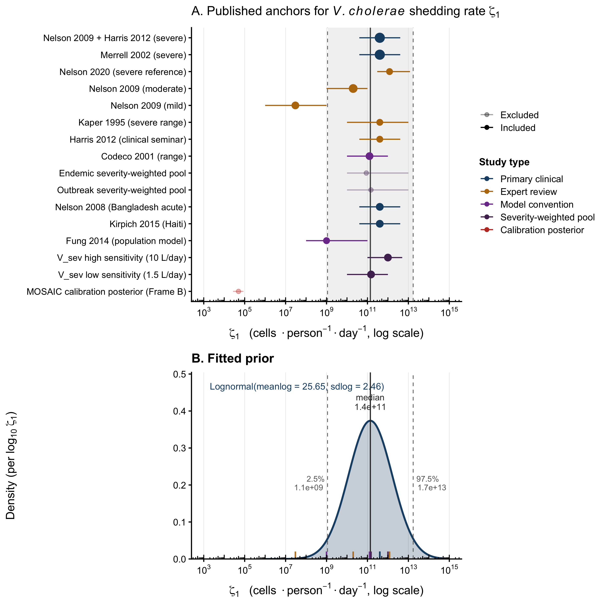
Figure 3.14: Prior distribution for the symptomatic shedding rate \(\zeta_1\) (cells per symptomatic person per day, log scale). The lognormal fit is weighted by severity class and anchored to per-person-per-day rates derived from V. cholerae stool concentrations and time-averaged stool volumes from 14 literature sources. Points and bars show the literature anchors and their reported bounds.
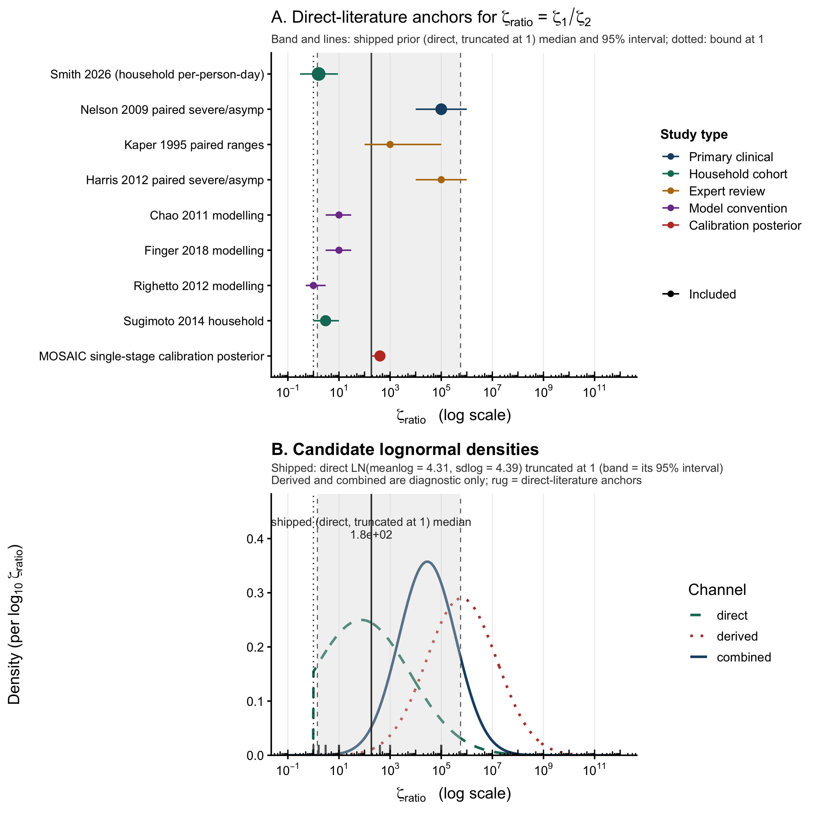
Figure 3.15: Prior distribution for the symptomatic-to-asymptomatic shedding ratio \(\zeta_{\text{ratio}} = \zeta_1 / \zeta_2\). The prior used in calibration is the direct literature channel (from household-transmission, paired-stool and modelling studies), truncated below at 1. The derived channel (the closed-form ratio of the \(\zeta_1\) and \(\zeta_2\) marginal lognormals) and the precision-weighted combined channel are shown for comparison only.
The table below summarizes key published estimates and assumptions regarding V. cholerae and related bacterial shedding rates:
| Value(s) | Units | Infection | Description | Source |
|---|---|---|---|---|
| \(10^3\) | \(\text{cells}~\text{g}^{-1}~\text{stool}\) | Asymptomatic | Approx. 1 day of shedding at ~10³ vibrios per gram of stool | Mosley et al. (1968) |
| \(10^6\)–\(10^9\) | \(\text{cells}~\text{g}^{-1}~\text{stool}\) | NA | Number of fecal coliform indicator bacteria in human feces | Feachem et al. (1983) |
| \(1\)–\(100\) | \(\text{cells}~\text{mL}^{-1}~\text{person}^{-1}~\text{day}^{-1}\) | All | Point estimate of 10; range 1–100 used in sensitivity analysis | Codeço (2001) |
| \(10\) | \(\text{cells}~\text{mL}^{-1}~\text{person}^{-1}~\text{day}^{-1}\) | All | Assumed shedding rate used in epidemic model incorporating hyperinfectivity | Hartley et al. (2006) |
| \(\leq 10^5\) | \(\text{cells}~\text{g}^{-1}~\text{stool}\) | Asymptomatic | No symptoms; low-level shedding of vibrios | Nelson et al. (2009) |
| \(\leq 10^8\) | \(\text{cells}~\text{g}^{-1}~\text{stool}\) | Mild | Diarrhoea with moderate vibrios in stool | Nelson et al. (2009) |
| \(10^7\)–\(10^9\) | \(\text{cells}~\text{g}^{-1}~\text{stool}\) | Severe | Vomiting and profuse diarrhoea with high shedding | Nelson et al. (2009) |
| \(10^{10}\)–\(10^{12}\) | \(\text{cells}~\text{L}^{-1}~\text{stool}\) | Severe | Concentration in rice water stool from symptomatic individuals | Nelson et al. (2009) |
| \(0.01\)–\(10\) | \(\text{cells}~\text{mL}^{-1}~\text{person}^{-1}~\text{day}^{-1}\) | All | Reported as general estimate across all infections | Fung (2014) |
| \(10\)–\(100\) | \(\text{cells}~\text{mL}^{-1}~\text{person}^{-1}~\text{day}^{-1}\) | All | Represents shedding rates in two distinct sub-populations | Njagarah & Nyabadza (2014) |
3.4.5 Recovery rates
The recovery rates in the MOSAIC model are defined as the inverse of the shedding duration for infected individuals. This reflects the period during which individuals contribute to the environmental load of Vibrio cholerae and to onward transmission, regardless of the severity of clinical symptoms. The model distinguishes between two compartments with substantially different shedding durations.
Symptomatic individuals (\(\gamma_1\)).
Individuals in the \(I_1\) compartment experience acute watery diarrhoea and shed large quantities of V. cholerae over an extended infectious period. Clinical reviews place the typical symptomatic shedding duration at approximately one to two weeks (Nelson et al. 2009, Harris et al. 2012, Kaper et al. 1995). To preserve this central estimate while admitting the genuine variability across cases, we fit a lognormal prior on the per-day recovery rate with median corresponding to a 10-day shedding duration:
\[ \gamma_1 \sim \text{Lognormal}(-2.303,\ 0.5) \ \ \text{day}^{-1} \quad (\text{median duration} \approx 10 \ \text{days, 95\% CI} \approx 4\text{--}26 \ \text{days}). \]
Asymptomatic individuals (\(\gamma_2\)).
Individuals in the \(I_2\) compartment do not present clinically and shed V. cholerae for a substantially shorter period. The verbatim observation of Nelson et al. 2009 is that “asymptomatic patients typically shed vibrios for only one day at approximately \(10^3\) vibrios per gram of stool”, and the corroborating reviews (Kaper et al. 1995, Mosley et al. 1968) place asymptomatic shedding in the range of approximately one to a few days. We therefore set the asymptomatic recovery rate to a lognormal prior with median corresponding to a 2-day shedding duration:
\[ \gamma_2 \sim \text{Lognormal}(-0.693,\ 0.4) \ \ \text{day}^{-1} \quad (\text{median duration} \approx 2 \ \text{days, 95\% CI} \approx 1\text{--}5 \ \text{days}). \]
The two priors encode the empirical pattern that symptomatic infections shed for substantially longer than asymptomatic infections, even though the latter outnumber the former: the cumulative per-infection environmental load is approximately \(\zeta_1/\gamma_1\) for symptomatic and \(\zeta_2/\gamma_2\) for asymptomatic, so the differences in \(\zeta\) and \(\gamma\) work in the same direction and reinforce the dominance of severe cases in the environmental signal. The combined effective removal rate \(\gamma_{\mathrm{eff}}\) used in the basic reproductive number (Equation (3.33)) is the reciprocal of the symptomatic-proportion-weighted arithmetic mean of the durations \(1/\gamma_1\) and \(1/\gamma_2\) (not a harmonic mean of the rates \(\gamma_1,\gamma_2\)) and therefore inherits the same skew toward the symptomatic duration.
For deterministic simulations or sensitivity analyses that prefer point estimates rather than draws from the lognormal priors, the medians serve as defaults:
\[ \gamma_1 \approx \frac{1}{10} = 0.1 \ \text{day}^{-1}, \qquad \gamma_2 \approx \frac{1}{2} = 0.5 \ \text{day}^{-1}. \]
These parameterisations reflect the empirical difference in shedding durations by symptom status reported in the cholera literature and are consistent with the environmental shedding structure of the model and with the per-day formulation of \(\zeta_1\) and \(\zeta_2\) in Section 3.4.4.
![Shedding duration (days, x-axis) for symptomatic (red) and asymptomatic (blue) *V. cholerae* infections under the canonical MOSAIC lognormal recovery-rate priors. The shaded rectangles span each prior's 95% credible interval on duration (symptomatic: approximately 4--26 days; asymptomatic: approximately 1--4 days), and the solid vertical lines mark the prior medians (symptomatic: 10 days; asymptomatic: 2 days). The recovery rates $\gamma_1$ and $\gamma_2$ used in the model are the inverses of the corresponding durations.](figures/recovery_rates.png)
Figure 3.16: Shedding duration (days, x-axis) for symptomatic (red) and asymptomatic (blue) V. cholerae infections under the canonical MOSAIC lognormal recovery-rate priors. The shaded rectangles span each prior’s 95% credible interval on duration (symptomatic: approximately 4–26 days; asymptomatic: approximately 1–4 days), and the solid vertical lines mark the prior medians (symptomatic: 10 days; asymptomatic: 2 days). The recovery rates \(\gamma_1\) and \(\gamma_2\) used in the model are the inverses of the corresponding durations.
3.4.6 WAter, Sanitation, and Hygiene (WASH)
Since V. cholerae is transmitted through fecal contamination of water and other consumables, the level of exposure to contaminated substrates significantly impacts transmission rates. Interventions involving Water, Sanitation, and Hygiene (WASH) have long been a first line of defense in reducing cholera transmission, and in this context, WASH variables can serve as proxy for the rate of contact with environmental risk factors. In the MOSAIC model, WASH variables are incorporated mechanistically, allowing for intervention scenarios that include changes to WASH. However, it is necessary to distill available WASH variables into a single parameter that represents the WASH-determined contact rate with contaminated substrates for each location \(j\), which we define as \(\theta_j\).
To parameterize \(\theta_j\), we calculated a weighted mean of the 8 WASH variables in Sikder et al 2023 and originally modeled by the Local Burden of Disease WaSH Collaborators 2020. The 8 WASH variables (listed in Table 3.3) provide population-weighted measures of the proportion of the population that either: i) have access to WASH resources (e.g., piped water, septic or sewer sanitation), or ii) are exposed to risk factors (e.g. surface water, open defecation). For risk associated WASH variables, we used the complement (\(1-\text{value}\)) to give the proportion of the population not exposed to each risk factor. We used the optim function in R and the L-BFGS-B algorithm to estimate the set of optimal weights (Table 3.3) that maximize the correlation between the weighted mean of the 8 WASH variables and reported cholera incidence per 1000 population across 40 SSA countries from 2000 to 2016. The optimal weighted mean had a correlation coefficient of \(r =\) -0.33 (-0.51 to -0.09 95% CI) which was higher than the basic mean and all correlations provided by the individual WASH variables (see Figure 3.17). The weighted mean then provides a single variable between 0 and 1 that represents the overall proportion of the population that has access to WASH and/or is not exposed to environmental risk factors. Thus, the WASH-mediated contact rate with sources of environmental transmission is represented as (\(1-\theta_j\)). WASH enters the model twice: as an attenuation on environmental exposure in the environment-to-human force of infection \(\Psi_{jt}\) (Equation (3.3)), and as an attenuation on environmental contamination in the shedding term of the reservoir update \(W_{j,t+1}\) (Equation (3.1)). These two effects act on opposite sides of the environmental transmission cycle but share the same WASH infrastructure (piped water, sanitation), and their product yields the \((1-\theta_j)^2\) factor in the environmental component of \(R_{0,j}\) derived in the Decomposition of \(R_{0,j}\) subsection below. Values of \(\theta_j\) for all countries are shown in Figure 3.18.
| WASH variable | Optimized weight |
|---|---|
| Piped Water | 0.356 |
| Septic or Sewer Sanitation | 0.014 |
| Other Improved Water | 0.000 |
| Other Improved Sanitation | 0.000 |
| Surface Water | 0.504 |
| Unimproved Sanitation | 0.000 |
| Unimproved Water | 0.000 |
| Open Defecation | 0.126 |
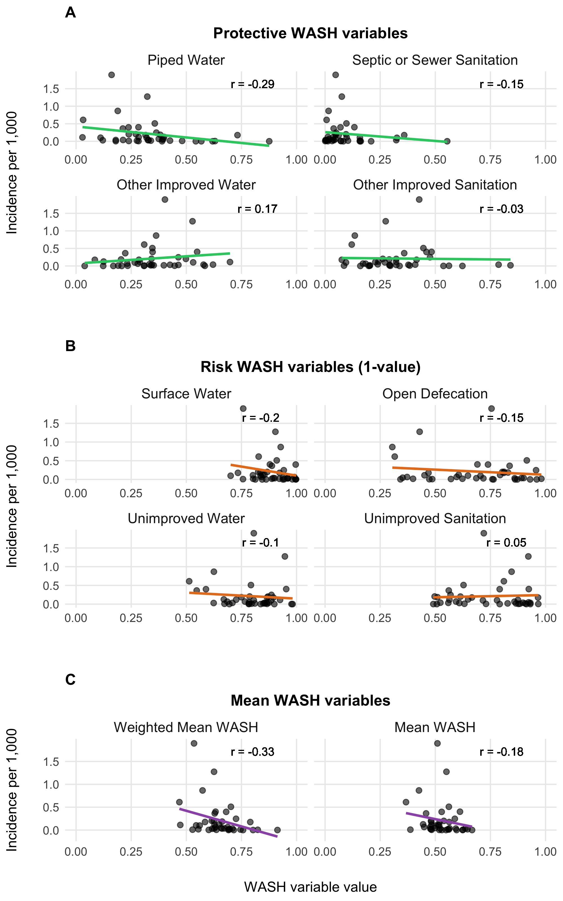
Figure 3.17: Relationship between WASH variables and cholera incidences.
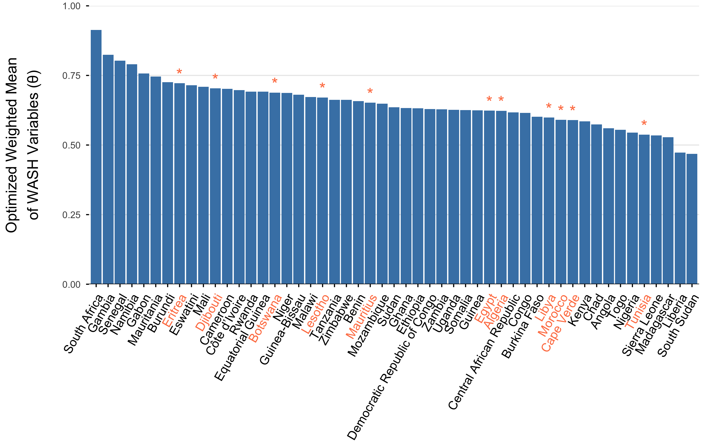
Figure 3.18: The optimized weighted mean of WASH variables for AFRO countries. Countries labeled in orange denote countries with an imputed weighted mean WASH variable. Imputed values are the weighted mean from the 3 most similar countries.
3.5 Immune dynamics
Aside from the current number of infections, population susceptibility is one of the key factors influencing the spread of cholera. Further, since immunity from both vaccination and natural infection provides long-lasting protection, it’s crucial to quantify not only the incidence of cholera but also the number of past vaccinations. Additionally, we need to estimate how many individuals with immunity remain in the population at any given time step in the model.
To achieve this, we estimate the vaccination rate over time (\(\nu_{jt}\)) based on historical vaccination campaigns and incorporate a model of vaccine effectiveness (\(\phi\)) and immune decay post-vaccination (\(\omega\)) to estimate the current number of individuals with vaccine-derived immunity. We also account for the immune decay rate from natural infection (\(\varepsilon\)), which is generally considered to last longer than immunity from vaccination.
3.5.1 Estimating Vaccination Rates
To estimate the past and current vaccination rates, we sourced data on reported OCV vaccinations from the WHO International Coordinating Group (ICG) Cholera vaccine dashboard. This resource lists all reactive OCV campaigns conducted from 2016 to the present, with approximately 103 million OCV doses shipped to Sub-Saharan African (SSA) countries as of October 9, 2024. However, these data only capture reactive vaccinations in emergency settings and do not include preventive campaigns organized by GAVI and in-country partners.
As a result, our current estimates of the OCV vaccination rate likely underestimate total OCV coverage. We are working to expand our data sources to better reflect the full number of OCV doses distributed in SSA and will update the results here as soon as these are available.
To translate the reported number of OCV doses into the model parameter \(\nu_{jt}\), we take the number of doses shipped and the reported start date of the vaccination campaign, distributing the doses over subsequent days according to a maximum daily vaccination rate. Therefore, the vaccination rate \(\nu_t\) is not an estimated quantity, it is defined by the reported number of OCV doses administered with an assumption about the daily rate of distribution for an OCV campaign:
\[ \nu_{jt} = f\big(\text{reported OCV doses distributed}_{jt} \ | \ \text{daily distribution rate}\big). \]
The dose series carries shipped doses only, with no round or regimen information, so in the default configuration all doses are routed to first doses: \(\nu_{1,jt} = \nu_{jt}\) and \(\nu_{2,jt} = 0\), and \(V_2\) is not entered after the simulation start. For simulation windows from 2023 onward this is close to right, because the ICG suspended the two-dose regimen for outbreak response in October 2022 during the global OCV shortage (WHO, 19 October 2022), so reactive campaigns have been single-dose since. For earlier windows this is a known limitation: a two-dose campaign is counted as two rounds of first doses, which roughly doubles the number of distinct people immunised, and shipped-but-unused doses are counted as delivered. Splitting \(\nu_{jt}\) into \(\nu_{1,jt}\) and \(\nu_{2,jt}\) requires round-level data in the processed vaccination inputs; pre-start campaigns do enter the two-dose compartment through the initial conditions, which pair rounds from the GTFCC campaign log (see Vaccinated initial conditions). Within each day, doses are delivered deterministically (rather than via a Poisson draw, as in earlier MOSAIC versions): the reported number of doses for that day is rounded to the nearest integer and processed without stochastic variation. First doses are then allocated proportionally across the configurable source set \(\mathcal{V}^{\text{src}} \subseteq \{S, E, I_1, I_2, R\}\) (default: all five), so that a fraction \(X_{jt} / N^{\text{src}}_{jt}\) of \(\nu_{1,jt}\) is delivered to each eligible compartment \(X\). Second doses are restricted to existing \(V_1\) recipients and capped at the current \(V_1\) population to prevent over-administration. Two patch-level counters \(\text{doses}^{(1)}_{j,t}\) and \(\text{doses}^{(2)}_{j,t}\) record the daily totals for comparison with reported OCV-campaign data; these are tracking-only and do not feed back into the model dynamics.
A few features of the implementation deserve explicit mention:
- Order of operations within a tick. Second-dose delivery is processed before first-dose delivery so that a recipient who is eligible for a first dose on the same day cannot be advanced to \(V_2\) in a single tick.
- Vaccinating active infectives. Because the default \(\mathcal{V}^{\text{src}}\) includes \(I_1\) and \(I_2\), a small fraction of doses is delivered to currently-infectious individuals. This is a deliberate simplification that keeps the dose-allocation denominator equal to the eligible population without separately bookkeeping who is shedding; the effect at typical \(I/N\) prevalences is negligible. Restrict \(\mathcal{V}^{\text{src}}\) to \(\{S, E, R\}\) in the LASER config if this simplification is undesired for a particular scenario.
- V protection is one-sided. The vaccinated compartments \(V_1, V_2\) are excluded from the force-of-infection terms — i.e. an individual in \(V\) cannot be reinfected until they wane back to \(S\). There is no “vaccinated-but-not-protected” sub-compartment in the v1.0 implementation; the \((1-\phi_k)\) ineffective fraction remains in the source compartment and re-enters the FOI through normal \(S\)-side dynamics.
See Figure 3.19 for an example of OCV distribution using a maximum daily vaccination rate of 100,000. The resulting time series for each country is shown in Figure 3.20, with current totals based on the WHO ICG data displayed in Figure 3.21.
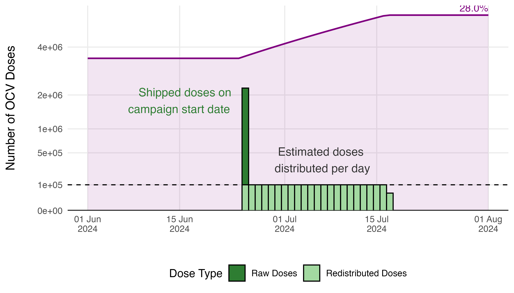
Figure 3.19: Example of the estimated vaccination rate during an OCV campaign.
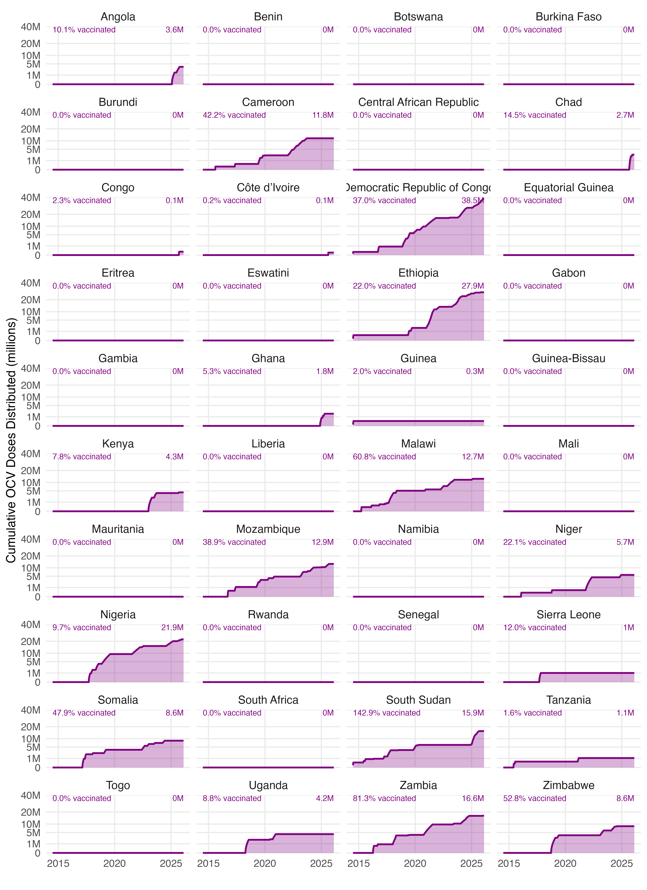
Figure 3.20: The estimated vaccination coverage across all countries with reported vaccination data on the WHO ICG dashboard.
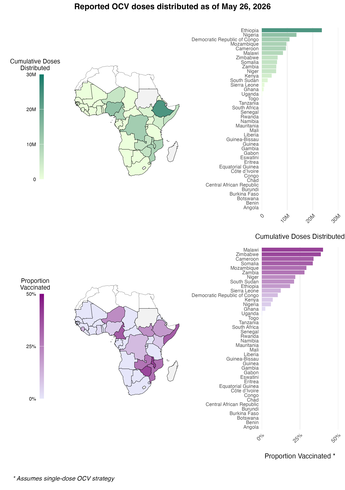
Figure 3.21: The total cumulative number of OCV doses distributed through the WHO ICG from 2016 to present day.
3.5.2 Immunity from vaccination
The impacts of Oral Cholera Vaccine (OCV) campaigns are incorporated into the model through two vaccinated compartments, \(V_1\) (one-dose recipients) and \(V_2\) (two-dose recipients), as introduced in the system of difference equations. Vaccine effectiveness \(\phi_1, \phi_2\) acts at the moment of dose delivery: of the \(\nu_{1,jt}\) first doses delivered on day \(t\), the \(\phi_1 \nu_{1,jt}\) effective fraction enter \(V_1\) while the \((1-\phi_1)\nu_{1,jt}\) ineffective fraction leave the recipient in the source compartment. The same logic applies to second doses with effectiveness \(\phi_2\). Waning brings vaccinated individuals back to \(S\) at rates \(\omega_1, \omega_2\) per day.
To set priors for the effectiveness and waning rates, we draw on the systematic review and meta-regression of Xu et al. 2024 (medRxiv preprint; published 2025 in Lancet Global Health as Xu et al. 2025), which pools cohort studies in Bangladesh, South Sudan, and the Democratic Republic of Congo — including the underlying studies used in earlier MOSAIC versions (Qadri et al. 2016 and 2018, Azman et al. 2016, Malembaka et al. 2024) — to produce time-varying effectiveness estimates with confidence intervals at five follow-up points for the one-dose schedule (6, 12, 18, 24, 30 months) and four for the two-dose schedule (12, 24, 36, 48 months). We fit an exponential-decay model
\[ \text{VE}_k(t) = \phi_k \exp(-\omega_k\, t) \]
separately to the mean, lower, and upper effectiveness curves for each dose regimen \(k \in \{1,2\}\) using Levenberg–Marquardt nonlinear least squares (the minpack.lm R library), then fit a Beta prior (for \(\phi\)) or a Gamma prior (for \(\omega\)) to each parameter, with the point estimate as its mode and its spread set from the 95% CI, slightly widened (by about 5% at each end). To enforce the biological monotonicity that two doses cannot reduce protection at the time of delivery, the two-dose fit is constrained so that \(\phi_2 \ge \phi_1\); without this constraint the independent backward extrapolations from the later-starting two-dose follow-up window (12–48 months) yields \(\phi_2 < \phi_1\), an artefact of the asymmetric follow-up windows rather than a feature of the underlying meta-regression. The resulting priors are:
\[ \begin{aligned} \phi_1 \ \sim\ & \text{Beta}(84.37,\ 23.48) \quad \text{(one-dose effectiveness, mode} \approx 0.79\text{)},\\ \phi_2 \ \sim\ & \text{Beta}(196.47,\ 53.70) \quad \text{(two-dose effectiveness, mode} \approx 0.79\text{, constrained to } \ge \phi_1\text{)},\\ \omega_1 \ \sim\ & \text{Gamma}(23.33,\ 31{,}693.83) \quad \text{(one-dose waning, mode} \approx 0.00070\ \text{day}^{-1}\text{)},\\ \omega_2 \ \sim\ & \text{Gamma}(2.69,\ 4{,}720.84) \quad \text{(two-dose waning, mode} \approx 0.00036\ \text{day}^{-1}\text{)}. \end{aligned} \tag{3.13} \]
After applying the constraint, the initial effectiveness is identical at the mode (both schedules reach approximately 0.79 immediately after the last dose), but the two-dose schedule decays substantially more slowly: the modal one-dose half-life of effectiveness is \(\log(2) / \omega_1 \approx 984\) days \(\approx 2.7\) years, while the modal two-dose half-life is \(\log(2) / \omega_2 \approx 1939\) days \(\approx 5.3\) years. The Gamma posterior for \(\omega_2\) is also more positively skewed (Figure 3.22F), reflecting the smaller number of two-dose follow-up time points in the meta-regression and the wider 95% CI bounds at later follow-up.
The \(\phi_2 \ge \phi_1\) monotonicity constraint is enforced during the data fit — so the modes of the two Beta priors satisfy it exactly — but the priors themselves remain independent during BFRS sampling, and individual draws can therefore produce \(\phi_2 < \phi_1\). Because both Beta priors are concentrated near 0.79 (Beta(84.37, 23.48) and Beta(196.47, 53.70)), this happens in about half of the draws, but the differences are small; and in the default configuration, which delivers no second doses after the simulation start (\(\nu_{2,jt} = 0\)), \(\phi_2\) has no effect on the simulation.
 meta-regression. Panels A and D show the fitted exponential decay $\text{VE}_k(t) = \phi_k \exp(-\omega_k t)$ (solid line) and 95% prediction envelope (dashed lines), with the Xu et al. mean estimates (filled circles) and 95% CI bars overlaid; the mode estimates from the fits are reported in the upper-right of each panel. The two-dose fit is constrained so that $\phi_2 \ge \phi_1$. Panels B and E show the Beta distributions fitted to the initial effectiveness $\phi_1, \phi_2$; panels C and F show the Gamma distributions fitted to the daily waning rates $\omega_1, \omega_2$. In each density panel, the solid vertical line marks the mode and the dashed coloured lines mark the 95% CI bounds carried over from the data fit. The priors of Equation \@ref(eq:effectiveness) are fitted to the same modes with these intervals slightly widened; they are close to the distributions shown for $\omega_1, \omega_2$ and markedly wider for $\phi_1, \phi_2$.](figures/vaccine_all_combined.png)
Figure 3.22: Vaccine-effectiveness priors for the one-dose (top row, blue) and two-dose (bottom row, green) OCV regimens, derived from the Xu et al. 2024 meta-regression. Panels A and D show the fitted exponential decay \(\text{VE}_k(t) = \phi_k \exp(-\omega_k t)\) (solid line) and 95% prediction envelope (dashed lines), with the Xu et al. mean estimates (filled circles) and 95% CI bars overlaid; the mode estimates from the fits are reported in the upper-right of each panel. The two-dose fit is constrained so that \(\phi_2 \ge \phi_1\). Panels B and E show the Beta distributions fitted to the initial effectiveness \(\phi_1, \phi_2\); panels C and F show the Gamma distributions fitted to the daily waning rates \(\omega_1, \omega_2\). In each density panel, the solid vertical line marks the mode and the dashed coloured lines mark the 95% CI bounds carried over from the data fit. The priors of Equation (3.13) are fitted to the same modes with these intervals slightly widened; they are close to the distributions shown for \(\omega_1, \omega_2\) and markedly wider for \(\phi_1, \phi_2\).
3.5.3 Immunity from natural infection
The duration of immunity after a natural infection is likely to be longer lasting than that from vaccination with OCV (especially given the current one dose strategy). As in most SIR-type models, the rate at which individuals leave the Recovered compartment is governed by the immune decay parameter \(\varepsilon\). We estimated the durability of immunity from natural infection based on two cohort studies and fit the following exponential decay model to estimate the rate of immunity decay over time:
\[ \text{Proportion immune}\ t \ \text{days after infection} = 0.99 \times (1 - \varepsilon) ^ {t-t_{\text{infection}}} \] Where we make the necessary and simplifying assumption that within 0–90 days after natural infection with V. cholerae, individuals are 95–99% immune. We fit this model to reported data from Ali et al (2011) and Clemens et al (1991) (see Table 3.4).
| Day | Effectiveness | Upper CI | Lower CI | Source |
|---|---|---|---|---|
| 90 | 0.95 | 0.95 | 0.95 | Assumption |
| 1080 | 0.65 | 0.81 | 0.37 | Ali et al (2011) |
| 1260 | 0.61 | 0.81 | 0.21 | Clemens et al (1991) |
We estimated the mean immune decay to be \(\bar\varepsilon \approx 3.9 \times 10^{-4}\) day\(^{-1}\), equivalent to a mean immune duration of approximately 7 years as shown in Figure 3.23A. This is slightly longer than previous modeling work estimating the duration of immunity to be approximately 5 years (King et al. 2008). Uncertainty around \(\varepsilon\) in the model is represented by a lognormal prior parameterised on the natural scale by the mean and standard deviation (matching the convention used in priors_default.json), as shown in Figure 3.23B:
\[ \varepsilon \sim \text{Lognormal}\big(\text{mean} = 3.9 \times 10^{-4},\ \text{sd} = 2.0 \times 10^{-4}\big) \ \ \text{day}^{-1}. \]
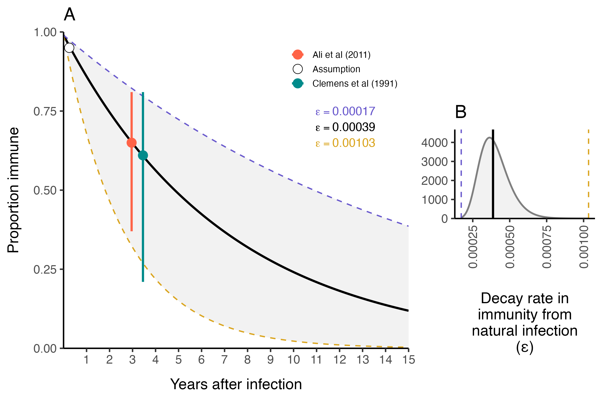
Figure 3.23: The duration of immunity after natural infection with V. cholerae.
3.6 Spatial dynamics
The parameters in the model diagram in Figure 3.2 that have a \(jt\) subscript denote the spatial structure of the model. Each country is modeled as an independent metapopulation that is connected to all others via the spatial force of infection \(\Lambda_{jt}\) which moves contagion among metapopulations according to the connectivity provided by parameters \(\tau_i\) (the probability departure) and \(\pi_{ij}\) (the probability of diffusion to destination \(j\)). Both parameters belong to the departure-diffusion model below, but they are informed by different data. We fit the diffusion kernel \(\pi_{ij}\) to a fused origin-destination matrix for all of the 40 countries included in the MOSAIC framework (Figure 3.24). The fused matrix is the sum of two daily person-flow matrices: average daily air passenger volume, and an overland matrix built by ensemble-averaging four bilateral sources – migrant stock, estimated migration flows, social connectedness, and land contiguity – and then raking each origin’s row total to its overland departure estimate. We take the departure probability \(\tau_i\) from those overland cross-border travel estimates rather than from the air-only fit, because air traffic captures only a minority of cross-border movement in the region.
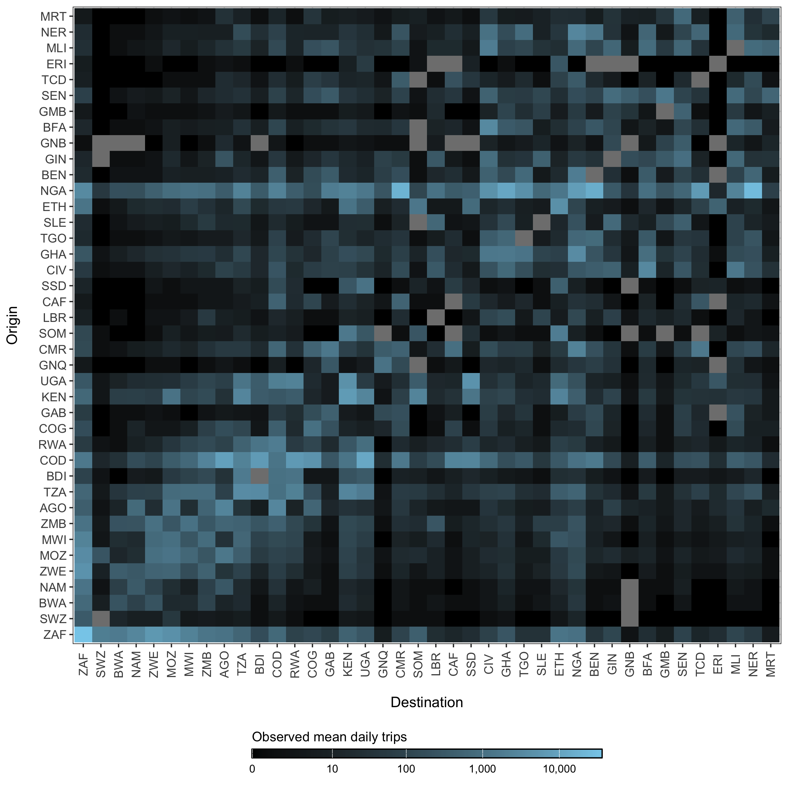
Figure 3.24: The average number of travelers per day among all countries in the fused origin-destination matrix, which combines air passenger volume with overland movement.
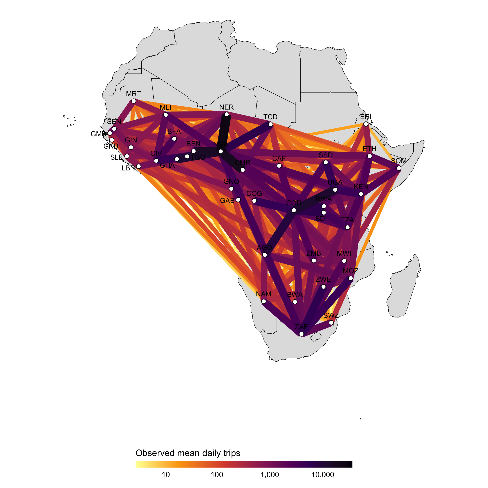
Figure 3.25: A network map showing the average number of travelers per day in the fused origin-destination matrix.
3.6.1 Human mobility model
The departure-diffusion model estimates diagonal and off-diagonal elements in the mobility matrix (\(M\)) separately and combines them using conditional probability rules. The model first estimates the probability of travel outside the origin location \(i\)—the departure process—and then the distribution of travel from the origin location \(i\) by normalizing connectivity values across all \(j\) destinations—the diffusion process. The values of \(\pi_{ij}\) sum to unity along each row, but the diagonal is not included, indicating that this is a relative quantity. That is to say, \(\pi_{ij}\) gives the probability of going from \(i\) to \(j\) given that travel outside origin \(i\) occurs. Therefore, we can use basic conditional probability rules to define the travel routes in the diagonal elements (trips made within the origin \(i\)) as \[ \Pr( \neg \text{depart}_i ) = 1 - \tau_i \] and the off-diagonal elements (trips made outside origin \(i\)) as \[ \Pr( \text{depart}_i, \text{diffuse}_{i \rightarrow j}) = \Pr( \text{diffuse}_{i \rightarrow j} \mid \text{depart}_i ) \Pr(\text{depart}_i ) = \pi_{ij} \tau_i. \] The expected mean number of trips for route \(i \rightarrow j\) is then:
\[\begin{equation} M_{ij} = \begin{cases} \theta N_i (1-\tau_i) \ & \text{if} \ i = j \\ \theta N_i \tau_i \pi_{ij} \ & \text{if} \ i \ne j. \end{cases} \tag{3.14} \end{equation}\]
Where, \(\theta\) is a proportionality constant representing the overall number of trips per person in an origin population of size \(N_i\), \(\tau_i\) is the probability of leaving origin \(i\), and \(\pi_{ij}\) is the probability of travel to destination \(j\) given that travel outside origin \(i\) occurs.
3.6.2 Estimating the departure process
The daily probability of travel outside the origin, \(\tau_i\), is given a per-country prior built from overland cross-border travel evidence (est_overland_tau_prior()) rather than fitted to air traffic. The evidence is a set of weekly outbound departure probabilities assembled from border-throughput counts, IOM Displacement Tracking Matrix flow monitoring and national overland travel statistics, which span roughly \(10^{-3}\) to \(5 \times 10^{-3}\) per week. Each weekly value is divided by 7 to give a daily probability and scaled by the share of the country’s outbound migrant stock whose destination lies inside the 40 MOSAIC locations, so that travel to countries outside the model is not re-routed onto in-set neighbours by the row normalisation of \(\pi_{ij}\). The prior is
\[
\tau_i \sim \text{Lognormal}\!\left(\log \tau^{0}_i,\ \text{sd}_{\tau}\right),
\]
where \(\tau^{0}_i\) is the resulting daily value (the prior median, and the value in the default configuration) and \(\text{sd}_{\tau}\) gives a 95% interval spanning a factor of 10 (\(\text{sd}_{\tau} = 0.587\)) for the 26 countries with direct evidence and a factor of 30 (\(\text{sd}_{\tau} = 0.868\)) for the 14 countries without it, whose median is the median of the evidenced values. The wide band reflects that every underlying count is a floor (recorded crossings only). An earlier version fitted \(\tau_i\) to air passenger volumes with a hierarchical Beta-Binomial model; air traffic captures only a small fraction of cross-border movement in the region, and that fit gave departure probabilities an order of magnitude lower.
3.6.3 Estimating the diffusion process
We use a normalized formulation of the power law gravity model to defined the diffusion process, the probability of travelling to destination \(j\) given travel outside origin \(i\) (\(\pi_{ij}\)) which is defined as:
\[\begin{equation} \pi_{ij} = \frac{ N_j^{\omega^{\text{mob}}} d_{ij}^{-\gamma^{\text{mob}}} }{ \sum\limits_{\forall j \ne i} N_j^{\omega^{\text{mob}}} d_{ij}^{-\gamma^{\text{mob}}} } \tag{3.15} \end{equation}\]
Where, \(\omega^{\text{mob}}\) scales the attractive force of each \(j\) destination based on its population size \(N_j\). The kernel function \(d_{ij}^{-\gamma^{\text{mob}}}\) serves as a penalty on the proportion of travel from \(i\) to \(j\) based on distance. (The superscript distinguishes these gravity-model exponents, code-names mobility_omega and mobility_gamma, from the vaccine waning rates \(\omega_1, \omega_2\) and the recovery rates \(\gamma_1, \gamma_2\).) We fit \(\omega^{\text{mob}}\) and \(\gamma^{\text{mob}}\) to the fused origin-destination matrix described above, which gives \(\hat\omega^{\text{mob}} = 0.627\) and \(\hat\gamma^{\text{mob}} = 1.900\) (the values in the default configuration). In calibration both are sampled from Gamma priors with rate 2 whose modes equal the fitted values:
\[
\begin{aligned}
\omega^{\text{mob}} &\sim \text{Gamma}(2.25, 2)\\
\gamma^{\text{mob}} &\sim \text{Gamma}(4.80, 2)
\end{aligned}
\]
We fit \(\pi_{ij}\) to the fused origin-destination matrix described above, which adds air traffic data from OAG to the raked overland matrix, using the mobility R package (Giles 2020). The departure probability \(\tau_i\) is taken from the overland cross-border travel estimates described above. Estimates for mobility model parameters are shown in Figures 3.26 and 3.27.
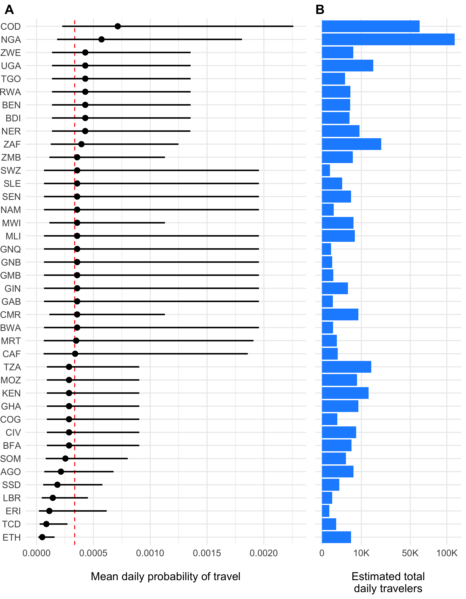
Figure 3.26: The estimated daily probability of travel outside of each origin location \(\tau_i\) and 95% prior intervals is shown in panel A with the population mean indicated as a red dashed line. Panel B shows the estimated total number of travelers leaving origin \(i\) each day.
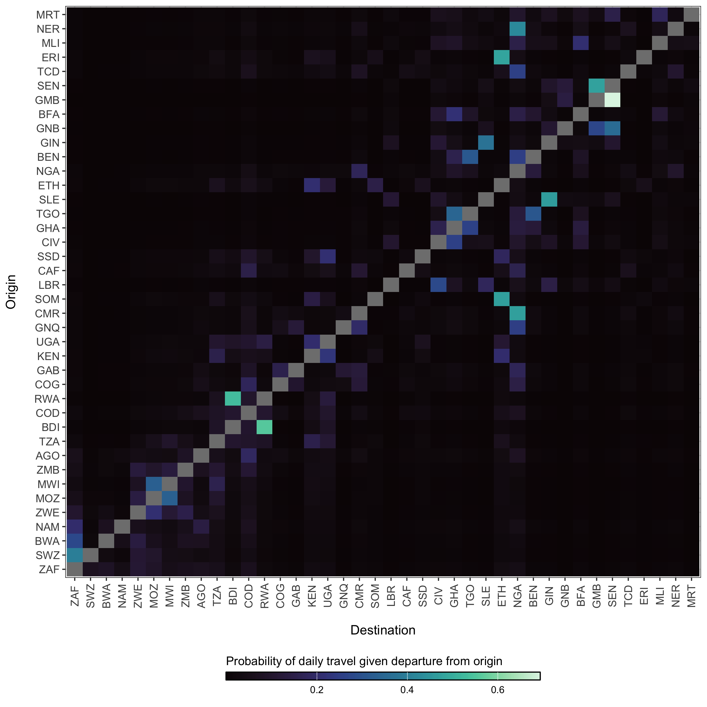
Figure 3.27: The diffusion process \(\pi_{ij}\) which gives the estimated probability of travel from origin \(i\) to destination \(j\) given that travel outside of origin \(i\) has occurred.
3.6.4 The spatial hazard
Although cholera is endemic in the MOSAIC framework, onward spread across sub-populations can occur whenever infectious individuals travel. We quantify this cross-border seeding risk with a spatial importation hazard adapted from Bjørnstad & Grenfell (2008).
Let \(\mathcal{H}_{jt}\in[0,1]\) denote the daily probability that at least one new infection is introduced into destination location \(j\) on day \(t\). In our implementation the estimated travel probability and gravity-model weights are folded directly into the prevalence terms, and both local and non-local infectious contributions are included: \[\begin{equation} \mathcal{H}_{jt} = \frac{\displaystyle \beta_{jt}\,S^{*}_{jt} \left[1-\exp\left(-x_{jt}\,\bar y_{jt}\right)\right]} {\displaystyle 1+\beta_{jt}\,S^{*}_{jt}} \tag{3.16} \end{equation}\]
The locally susceptible pool is \[\begin{equation} S^{*}_{jt} = \left(1-\tau_{j}\right) S_{jt}, \tag{3.17} \end{equation}\] where \(\tau_{j}\) is the daily probability that a resident of \(j\) travels outside the home location. The per-capita susceptible probability at the destination is therefore \(x_{jt} = S^{*}_{jt}/N_{jt}\), with \(N_{jt}\) the total population in location \(j\) on day \(t\).
The gravity-weighted mean infection prevalence across the metapopulation is \[\begin{equation} \bar y_{jt} = \frac{\left(1-\tau_{j}\right)\left(I_{1,jt}+I_{2,jt}\right) +\sum_{i\neq j}\tau_{i}\,\pi_{ij}\left(I_{1,it}+I_{2,it}\right)} {\displaystyle \sum_{k} N_{kt}}, \tag{3.18} \end{equation}\] where \(I_{1,it}\) and \(I_{2,it}\) denote symptomatic and asymptomatic infections in origin \(i\). These are weighted by the mobility matrix \(\pi_{ij}\) and the travel probability \(\tau_{i}\), and the denominator normalizes by the total metapopulation size \(\sum_{k}N_{kt}\).
In the numerator of Equation (3.16) the factor \(1-\exp(-x_{jt}\,\bar y_{jt})\) converts a per-capita arrival rate into a daily hazard, while the denominator \(1+\beta_{jt}\,S^{*}_{jt}\) keeps \(\mathcal{H}_{jt}\) strictly between 0 and 1. This formulation therefore yields the daily probability there is at least one human-derived infection in location \(j\) on day \(t\), conditional on the local susceptible pool and infection prevalence across all other locations. Note that this does not include infection hazard from the local environmental reservoir, however our aim is to include this in future versions.
3.6.5 Coupling among locations
To characterize how strongly infection dynamics in one country reflect those in another we follow the spatial–correlation metric of Keeling & Rohani (2002). For each pair of locations \(i\) and \(j\) observed over days \(t = \{1,\dots ,T\}\) we define the prevalence for each location over time as
\[\begin{equation}
y_{it} = \frac{I_{1,it}+I_{2,it}}{N_i}
\qquad \text{and} \qquad
y_{jt} = \frac{I_{1,jt}+I_{2,jt}}{N_j},
\tag{3.19}
\end{equation}\]
and the corresponding mean prevalence as
\[\begin{equation}
\bar y_i = \frac{1}{T}\sum_{t=1}^{T} y_{it}
\qquad \text{and} \qquad
\bar y_j = \frac{1}{T}\sum_{t=1}^{T} y_{jt}.
\tag{3.20}
\end{equation}\]
Using these quantities, we write the spatial–correlation coefficient as a set of explicit sums: \[\begin{equation} \mathcal{C}_{ij} = \frac{ \sum_{t=1}^{T}\bigl(y_{it}-\bar y_i\bigr)\bigl(y_{jt}-\bar y_j\bigr) } { \sqrt{\sum_{t=1}^{T}\bigl(y_{it}-\bar y_i\bigr)^{2}} \;\sqrt{\sum_{t=1}^{T}\bigl(y_{jt}-\bar y_j\bigr)^{2}} }. \tag{3.21} \end{equation}\] The coefficient \(\mathcal{C}_{ij}\in[-1,1]\) therefore measures the degree to which fluctuations in infection prevalence are synchronized between metapopulations—providing a complementary view of spatial heterogeneity alongside the importation hazard \(\mathcal{H}_{jt}\).
3.7 The observation process
3.7.1 Rate of symptomatic infection
The presentation of infection with V. cholerae can be extremely variable. The severity of infection depends many factors such as the amount of the infectious dose, the age of the host, the level of immunity of the host either through vaccination or previous infection, and naivety to the particular strain of V. cholerae. Additional circumstantial factors such as nutritional status and overall pathogen burden may also impact infection severity. At the population level, the observed proportion of infections that are symptomatic is also dependent on the endemicity of cholera in the region. Highly endemic areas (e.g. parts of Bangladesh; Hegde et al 2024) may have a very low proportion of symptomatic infections due to many previous exposures. Inversely, populations that are largely naive to V. cholerae will exhibit a relatively higher proportion of symptomatic infections (e.g. Haiti; Finger et al 2024).
Accounting for all of these nuances in the first version of the model is not possible, but past studies do contain useful information that can help set sensible bounds on the proportion of infections that are symptomatic (\(\sigma\)). We have therefore compiled a short list of sero-surveys and cohort studies that assess the likelihood of symptomatic infection in different locations, summarised in Table 3.5.
To provide a reasonably informed prior for the proportion of infections that are symptomatic, we calculated the combined mean and confidence intervals of all studies in Table 3.5 and fit a Beta distribution that corresponds to these quantiles using least-squares and a Nelder-Mead algorithm. The resulting prior distribution for the symptomatic proportion \(\sigma\) is:
\[\begin{equation} \sigma \sim \text{Beta}(3.75, 7.12) \end{equation}\]
which has a mean of approximately 0.35 (95% interval approximately 0.11–0.64). This prior replaces \(\text{Beta}(4.30, 13.51)\) (mean 0.24), used before MOSAIC-pkg v0.100.1, which was fitted to a version of the table in which the Harris et al. (2008) row was mistranscribed as 0.184: that household cohort reports 127 of 202 culture-confirmed infections as symptomatic (0.629, exact binomial 95% CI 0.558–0.695).
| Mean | Low CI | High CI | Location | Source | Note |
|---|---|---|---|---|---|
| 0.570 | NA | NA | NA | Nelson et al (2009) | Review |
| 0.250 | NA | NA | NA | Lueng & Matrajt (2021) | Review |
| NA | 0.200 | 0.600 | Endemic regions | Harris et al (2012) | Review |
| 0.238 | 0.227 | 0.250 | Haiti | Finger et al (2024) | Sero-survey and clinical data |
| 0.213 | 0.194 | 0.231 | Haiti | Jackson et al (2013) | Cross-sectional sero-survey |
| 0.204 | NA | NA | Pakistan | Bart et al (1970) | Sero-survey during epidemic; El Tor Ogawa strain |
| 0.371 | NA | NA | Pakistan | Bart et al (1970) | Sero-survey during epidemic; Inaba strain |
| 0.629 | 0.558 | 0.695 | Bangladesh | Harris et al (2008) | Household cohort; culture-confirmed infections (high-dose exposure, rectal-swab detection under-ascertains asymptomatic infection) |
| 0.001 | 0.000 | 0.001 | Bangladesh | Hegde et al (2024) | Sero-survey and clinical data |
The prior distribution for \(\sigma\) is plotted in Figure 3.28A with the reported values of the proportion symptomatic from previous studies shown in 3.28B.
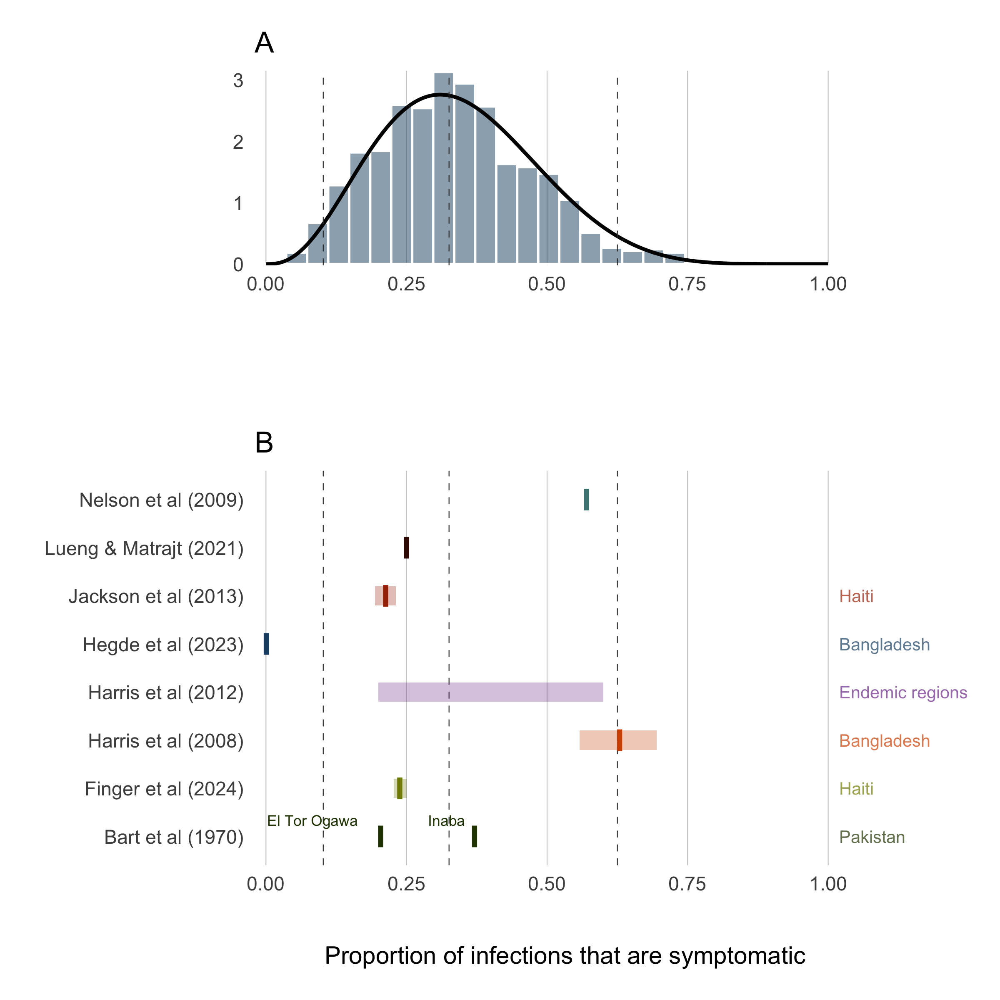
Figure 3.28: Proportion of infections that are symptomatic.
3.7.2 Suspected cases, reported cases, and deaths
The clinical presentation of cholera-like illness is similar across diarrhoeal pathogens, so reported case counts are a noisy function of the true symptomatic incidence in the model – the daily inflow \(\sigma\,\iota\,E_{jt}\) of newly symptomatic infections (all symptomatic onsets, including the fatal onsets that never enter \(I_1\); see the Case fatality rate subsection). We resolve this with a two-stage observation model. In the care-seeking stage, each incident symptomatic infection is independently presented to the surveillance system as a suspected case with probability \(\rho\), a Binomial thinning of the daily incidence. In the confirmation stage, a suspected case is classified as true cholera with probability \(\chi\), the positive predictive value (PPV) of the suspected-case definition. Combining the two stages and accounting for a reporting lag of \(l_{\text{cases}}\) days from symptom onset, the modelled count of reported cases at destination \(j\) on day \(t+1\) is
\[\begin{equation} \text{reported cases}_{j,t+1} \;=\; \text{round}\!\left[\, \frac{\text{Binom}\!\left(\sigma\,\iota\,E_{j,\,t - l_{\text{cases}}},\ \rho\right)}{\chi_{jt}^{\text{eff}}} \,\right], \tag{3.22} \end{equation}\]
where \(\rho\) is the per-infection probability of the Binomial care-seeking stage applied to the incident symptomatic infections \(\sigma\,\iota\,E_{j,\,t - l_{\text{cases}}}\), and \(\chi_{jt}^{\text{eff}}\) enters the denominator as a deterministic back-correction for the PPV. Note that \(\rho\) is the only true probability here; \(1/\chi_{jt}^{\text{eff}}\) is a multiplicative gross-up (true cholera plus false positives among suspected cases) and so stays outside the Binomial. This is the unique relationship consistent with the joint probability of being both truly cholera-positive and presenting as a suspected case:
\[ P(\text{true}\cap\text{suspected}) = P(\text{true}\mid\text{suspected})\,P(\text{suspected}) = P(\text{suspected}\mid\text{true})\,P(\text{true}). \]
This incidence-based reporting was introduced in laser-cholera issue #67 (shipped in laser-cholera v0.14.0, consumed by MOSAIC-pkg from version 0.41.0); earlier versions applied \(\rho\) to the symptomatic prevalence \(I_{1,jt}\), which multiply-counted each individual across the days they remained symptomatic and inflated reported cases by approximately the mean symptomatic infectious period \(\gamma_1^{-1}\).
The effective PPV \(\chi_{jt}^{\text{eff}}\) switches between an endemic and an epidemic value depending on whether local prevalence is below or above a per-location threshold \(\eta_j\):
\[\begin{equation} \chi_{jt}^{\text{eff}} = \begin{cases} \chi^{\text{end}}, & \text{if} \ \ I_{1,\,j,t - l_{\text{cases}}} \big/ N_{j,\,t - l_{\text{cases}}} < \eta_j,\\[3pt] \chi^{\text{epi}}, & \text{otherwise}. \end{cases} \tag{3.23} \end{equation}\]
The prior on the care-seeking rate \(\rho\) is derived from a random-effects meta-analytic pool of the two case-definition strata reported by Wiens et al. 2025 – general diarrhea (29.9%, 95% CI [25.3, 35.1] from 122 observations) and severe diarrhea + cholera (58.6%, 95% CI [39.9, 75.2] from 22 observations). Pooling both strata captures the severity spectrum of symptomatic cholera (mild-to-moderate + severe), avoiding the upward bias of the severe-only stratum (dominated by outbreak-response settings) and the downward bias of the general stratum (which includes many self-resolving mild episodes). The 95% confidence interval of the pooled mean is fit to a Beta distribution:
\[ \rho \sim \text{Beta}(5.38,\ 7.10), \tag{3.24} \]
corresponding to a mean of approximately 0.42 (i.e. roughly 42% of true symptomatic infections enter the surveillance pipeline as a suspected case). The endemic and epidemic PPVs are derived from the meta-analysis of Wiens et al. 2023, which reports suspected-case PPVs of 0.52 (95% interval 0.24–0.80) across all settings and 0.78 (0.40–0.99) during outbreaks. We fit Beta distributions to these medians and 95% intervals by least squares:
\[ \begin{aligned} \chi^{\text{end}} \ \sim\ & \text{Beta}(5.56,\ 5.10) \quad \text{(endemic PPV, mean} \approx 0.52\text{)},\\ \chi^{\text{epi}} \ \sim\ & \text{Beta}(4.97,\ 1.58) \quad \text{(epidemic PPV, mean} \approx 0.76\text{)}. \end{aligned} \tag{3.25} \]
The lower endemic PPV reflects the higher background rate of acute watery diarrhoea from other pathogens that is misclassified as cholera in non-outbreak settings, while the epidemic PPV is informed by laboratory-confirmed outbreak studies. The case reporting lag is a small truncated-normal prior:
\[ l_{\text{cases}} \sim \text{Truncnorm}(1,\ 1.5,\ 0,\ 7) \ \ \text{(days)}. \tag{3.26} \]
The epidemic threshold \(\eta_j\) is a per-country daily symptomatic prevalence above which the location is considered to be in an epidemic regime. It is set from each country’s observed historical median outbreak prevalence with a truncated-normal prior whose mean and standard deviation are location-specific, and is bounded above by 0.01 (a hard cap of 1% daily symptomatic prevalence).
A parallel observation process applies to cholera-attributable deaths. In the current engine (MOSAIC-pkg v0.96.0 onward) the outcome of a symptomatic infection is decided at symptom onset: each new symptomatic onset is fatal with probability \(p^{\text{fatal}}_{jt}\) (Eq. (3.29) in the Case fatality rate subsection), and fatal onsets never enter \(I_1\). Each true cholera death is then captured by surveillance with probability \(\rho_{\text{deaths}}\) and reported on the case lag \(l_{\text{cases}}\), so a death is reported on the same day as its case, as the surveillance data record it. With the same indexing as Eq. (3.22):
\[\begin{equation} \begin{aligned} \text{true deaths}_{jt} \ &\sim\ \text{Binom}\!\left(\sigma\,\iota\,E_{jt},\ p^{\text{fatal}}_{jt}\right),\\[3pt] \text{reported deaths}_{j,t+1} \ &\sim\ \text{Binom}\!\left(\text{true deaths}_{j,\,t - l_{\text{cases}}},\ \rho_{\text{deaths}}\right), \end{aligned} \tag{3.27} \end{equation}\]
where the first line thins the same symptomatic onsets \(\sigma\,\iota\,E_{jt}\) that feed the reported cases. The separate death-event-to-report lag \(l_{\text{deaths}}\) of earlier versions is retired, because deaths no longer occur some days after onset. The death-detection probability has a literature prior,
\[ \rho_{\text{deaths}} \ \sim\ \text{Beta}(36.95,\ 51.02) \quad \text{(mean} \approx 0.42,\ \text{sd} \approx 0.05\text{)}, \tag{3.28} \]
fit by quantile-matching a random-effects meta-analysis (DerSimonian-Laird, logit scale) of three SSA studies that directly measure cholera-death surveillance capture: Routh et al. 2017 (Tanzania, 0.48), Shikanga et al. 2009 (Kenya, 0.34), and Bwire et al. 2013 (Uganda, 0.50). The pooled mean is 0.42 with a 95% prediction interval of [0.16, 0.73] (\(\tau^2 = 0.046\), \(I^2 = 32\%\)); see Figure 3.29. The prior is the informative variant Beta(36.95, 51.02), fit to the 95% CI of the pooled mean (ESS \(\approx\) 88, sd \(\approx\) 0.05); the wider variant Beta(6.30, 8.52), fit to the 95% prediction interval, documents between-study heterogeneity. Note that \(\rho_{\text{deaths}}\) is pinned at 0.42 rather than sampled in calibration. It cancels exactly from the expected number of reported deaths: the per-onset fatality probability of Eq. (3.29) divides by \(\rho_{\text{deaths}}\) and the reporting draw of Eq. (3.27) multiplies by it, so \(\mathbb{E}[\text{reported deaths}] = \mu_{jt}\,(\rho/\chi^{\text{epi}})\,\sigma\,\iota\,E_{jt}\) whatever value is drawn. The cancellation holds in distribution, not only in expectation: a Binomial thinning of a Binomial draw is itself Binomial, so given the onsets the reported deaths are \(\text{Binom}\big(\sigma\,\iota\,E_{jt},\ \mu_{jt}\,\rho/\chi^{\text{epi}}\big)\). The prior therefore fixes the interpretation of the true-death stage – what fraction of true cholera deaths the surveillance product is taken to represent, and hence the scale of the modelled true deaths – rather than being informed by the deaths data. It is not entirely inert: it sets how many fatal onsets are withheld from \(I_1\) (a transmission effect of at most a few percent, see the \(R_0\) remark below) and where the bound \(p^{\text{fatal}}_{jt} < 1\) falls. The conceptual framework separating facility CFR from community deaths comes from Finger et al. 2024 (Lancet Infect Dis).
![Prior for the cholera death-detection probability $\rho_{\text{deaths}}$. (A) Informative variant Beta(36.95, 51.02) (plum, solid) fit by quantile-matching the 95% CI of the pooled mean from a random-effects meta-analysis of three SSA direct-capture studies (ESS $\approx$ 88, sd $\approx$ 0.05); its mean, 0.42, is the value $\rho_{\text{deaths}}$ is pinned at. Wider variant Beta(6.30, 8.52) (blue, dashed) fit to the 95% prediction interval, shown to document between-study heterogeneity. Neither is sampled in calibration, because $\rho_{\text{deaths}}$ cancels from the expected reported deaths: the per-onset fatality probability divides by it and the reporting draw multiplies by it. (B) Per-study estimates and the pooled random-effects estimate (logit-scale DerSimonian-Laird, k = 3, $\tau^2$ = 0.046, $I^2$ = 32%).](figures/rho_deaths_prior.png)
Figure 3.29: Prior for the cholera death-detection probability \(\rho_{\text{deaths}}\). (A) Informative variant Beta(36.95, 51.02) (plum, solid) fit by quantile-matching the 95% CI of the pooled mean from a random-effects meta-analysis of three SSA direct-capture studies (ESS \(\approx\) 88, sd \(\approx\) 0.05); its mean, 0.42, is the value \(\rho_{\text{deaths}}\) is pinned at. Wider variant Beta(6.30, 8.52) (blue, dashed) fit to the 95% prediction interval, shown to document between-study heterogeneity. Neither is sampled in calibration, because \(\rho_{\text{deaths}}\) cancels from the expected reported deaths: the per-onset fatality probability divides by it and the reporting draw multiplies by it. (B) Per-study estimates and the pooled random-effects estimate (logit-scale DerSimonian-Laird, k = 3, \(\tau^2\) = 0.046, \(I^2\) = 32%).
![Prior distributions for the suspected/reported-case observation model. The care-seeking rate $\rho$ controls how many true symptomatic infections present as suspected cases ($\rho \sim \text{Beta}(5.38, 7.10)$, mean $\approx 0.42$). The endemic and epidemic positive predictive values $\chi^{\text{end}}$ and $\chi^{\text{epi}}$ control how many suspected cases are confirmed as true cholera; the endemic PPV (mean $\approx 0.52$) is substantially lower than the epidemic PPV (mean $\approx 0.76$) because of higher background diarrhoeal misclassification in non-outbreak settings.](figures/suspected_cases.png)
Figure 3.30: Prior distributions for the suspected/reported-case observation model. The care-seeking rate \(\rho\) controls how many true symptomatic infections present as suspected cases (\(\rho \sim \text{Beta}(5.38, 7.10)\), mean \(\approx 0.42\)). The endemic and epidemic positive predictive values \(\chi^{\text{end}}\) and \(\chi^{\text{epi}}\) control how many suspected cases are confirmed as true cholera; the endemic PPV (mean \(\approx 0.52\)) is substantially lower than the epidemic PPV (mean \(\approx 0.76\)) because of higher background diarrhoeal misclassification in non-outbreak settings.
3.7.3 Case fatality rate
We parameterise cholera mortality directly by the time-varying reported case fatality ratio \(\mu_{jt}\): the expected number of reported deaths per reported suspected case in location \(j\) on day \(t\), which is the quantity that surveillance measures. It replaces the per-day mortality hazard on the symptomatic stock, with its baseline, time-trend and epidemic-escalation factors (\(\mu_{j,0}\), \(\mu_{j,1}\), \(\mu_{j,\text{epi}}\)) and the target CFR from which the baseline was derived, used by MOSAIC-pkg versions before 0.96.0; those parameters are retired. The engine converts \(\mu_{jt}\) on each day into the probability that a symptomatic onset is fatal:
\[\begin{equation} p^{\text{fatal}}_{jt} \;=\; \mu_{jt}\,\frac{\rho}{\rho_{\text{deaths}}\,\chi^{\text{epi}}}. \tag{3.29} \end{equation}\]
Where, \(\rho\) is the care-seeking probability, \(\chi^{\text{epi}}\) the epidemic-period PPV and \(\rho_{\text{deaths}}\) the death-detection probability defined in the previous subsection. A configuration for which \(p^{\text{fatal}}_{jt} \ge 1\) at any location and day is refused rather than clamped. Because reported cases (Eq. (3.22)) and reported deaths (Eq. (3.27)) are drawn from the same onsets \(\sigma\,\iota\,E_{jt}\), taking expectations gives
\[ \frac{\mathbb{E}[\text{reported deaths}]}{\mathbb{E}[\text{reported cases}]} \;=\; \frac{\rho_{\text{deaths}}\,p^{\text{fatal}}_{jt}}{\rho\,/\,\chi^{\text{eff}}_{jt}} \;=\; \mu_{jt}\,\frac{\chi^{\text{eff}}_{jt}}{\chi^{\text{epi}}}, \]
up to the rounding in Eq. (3.22). Thus, in the epidemic regime (\(\chi^{\text{eff}}_{jt} = \chi^{\text{epi}}\)) the modelled reported CFR equals \(\mu_{jt}\) exactly, and in the endemic regime it is \(\mu_{jt}\,\chi^{\text{end}}/\chi^{\text{epi}}\) (approximately \(0.69\,\mu_{jt}\) at the prior means). Neither \(\sigma\), \(\gamma_1\) nor \(\rho_{\text{deaths}}\) enters this ratio, so no derivation through the recovery dwell or the symptomatic stock is needed. At the default configuration \(p^{\text{fatal}}_{jt}\) has a median of 2.8% of symptomatic onsets (range 0.2–10%). Fatal onsets leave the population at onset and never enter \(I_1\), so they neither shed into \(W\) nor contribute to the force of infection. (The engine’s replay mode, which exists only to verify the R engine draw for draw against laser-cholera 0.16.1, retains that engine’s daily-hazard form; the production rng mode is the form described here.)
Prior for \(\mu_{jt}\). The prior centre of \(\mu_{jt}\) comes from a hierarchical binomial GAM (est_CFR_hierarchical()) fit by fREML with mgcv::bam() to every country-year of the WHO annual cholera record from 1970 onward, for every country in the file (not only the 40 MOSAIC locations, so that the additional countries inform the global curve). For country \(j\) in calendar year \(\text{yr}\), with \(D_{j,\text{yr}}\) reported deaths among \(C_{j,\text{yr}}\) reported cases,
\[\begin{equation} D_{j,\text{yr}} \sim \text{Binom}\!\left(C_{j,\text{yr}},\ p_{j,\text{yr}}\right), \qquad \text{logit}\,p_{j,\text{yr}} \;=\; f(\text{yr}) + u_j + g_j(\text{yr}) + e_{j,\text{yr}}, \tag{3.30} \end{equation}\]
where \(f\) is a global smooth trend, \(u_j \sim \mathcal{N}(0,\ \text{sd}_{\text{country}}^2)\) is a country random intercept, \(g_j\) is a country-specific penalised trend (a factor smooth, shrunk toward the global curve), and \(e_{j,\text{yr}} \sim \mathcal{N}(0,\ \text{sd}_{\text{year}}^2)\) is a country-year random effect that absorbs the large year-to-year scatter of annual CFR. A calendar year still in progress when its WHO dashboard snapshot was taken is excluded, because its deaths lag its cases. The point estimate for a country-year excludes \(e_{j,\text{yr}}\), so it is the mean of that year’s reported CFR on the logit scale (the median, not the mean, on the probability scale), and each estimate carries the standard error \(\text{se}_{j,\text{yr}}\) of \(f + u_j + g_j\). Years after the data are carried forward: the global trend is held flat after the last year in the data, and each country’s trend after that country’s own last WHO-annual year. In the current fit \(\text{sd}_{\text{year}} \approx 0.70\) on the logit scale; \(\text{sd}_{\text{country}}\) is weakly identified (the factor smooth carries its own per-country intercept) but no MOSAIC location depends on it, since all 40 appear in the WHO annual data.
The annual centres are expanded to the daily \[location $\times$ day\] matrix \(\mu^{0}_{jt}\) that the engine reads as config$mu_jt by make_mu_jt(): the logit-scale centres are interpolated linearly between 1 July anchors of consecutive years and held flat before the 1 July anchor of the first estimated year and after that of the last (the estimated years include three carried-forward years past the last WHO-annual year). A simulation run from a configuration draws its deaths at \(\mu_{jt} = \mu^{0}_{jt}\).
Integrating \(\mu_{jt}\) out of the deaths likelihood. In calibration \(\mu_{jt}\) is not sampled. Given one simulated path, the expected reported deaths on each day are \(\mu_{jt}\) times a known exposure, \((\rho/\chi^{\text{epi}})\,\sigma\,\iota\,E_{jt}\) evaluated at the path’s simulated symptomatic onsets on the onset day, so the level of the reported CFR can be solved for per path (calc_log_likelihood_deaths_integrated()). The reported CFR is modelled as the prior centre shifted on the logit scale by a location offset and one level per calendar year:
\[\begin{equation} \text{logit}\,\mu_{jt} \;=\; \text{logit}\,\mu^{0}_{jt} \;+\; \xi_j \;+\; \sum_{\text{yr}} B_{\text{yr}}(t)\, e_{j,\text{yr}}, \tag{3.31} \end{equation}\]
\[ \xi_j \sim \mathcal{N}\!\left(0,\ \text{sd}_{\text{product}}^2 + \overline{\text{se}^2_{j}}\right), \qquad e_{j,\text{yr}} \sim \begin{cases} \mathcal{N}\!\left(0,\ \text{sd}_{\text{year}}^2\right), & \text{yr} \le \text{yr}^{\ast}_j,\\[3pt] \mathcal{N}\!\left(\bar{e}_j,\ \text{sd}_{\text{year}}^2\right), & \text{yr} > \text{yr}^{\ast}_j. \end{cases} \]
Where, \(\xi_j\) is the location offset, whose prior variance adds \(\text{sd}_{\text{product}} = 0.3\) (the residual error of the GAM centre against the observed reported CFR in the calibration window) to \(\overline{\text{se}^2_{j}}\), the mean squared GAM standard error \(\text{se}_{j,\text{yr}}^2\) over the calendar years of the scored window that carry deaths observations; \(e_{j,\text{yr}}\) is the deviation for calendar year \(\text{yr}\) – the country-year effect of Eq. (3.30), now estimated from the weekly surveillance given the simulated path – with the GAM’s country-year SD \(\text{sd}_{\text{year}}\); and \(B_{\text{yr}}(t)\) equals 1 inside calendar year \(\text{yr}\) and blends linearly into the next year over the 60 days centred on each 1 January (weight 0.5 on each year on 1 January), so the reported CFR has no step at a year boundary. Each deviation is a level for its year: a year observed only in part is fitted to the months observed and applied unchanged to the rest of that year. \(\text{yr}^{\ast}_j\) is the latest year observed past its New Year blend (the year of the last scored day minus 30 days), and every later year is a forecast year whose deviation is centred on the forecast shift \(\bar{e}_j\) described below (zero during calibration).
Deaths are scored at the weekly reporting cadence with a quasi-Poisson likelihood. For location \(j\) and reporting week \(w\) (the week boundary is detected per location; a week cut by the edge of the scored window is scored on its own days), let \(D_{jw}\) be the observed deaths and
\[ m_{jw} \;=\; \sum_{t \in w} \mu_{jt}\,\frac{\rho}{\chi^{\text{epi}}}\,\sigma\,\iota\,E_{jt} \;+\; m^{\text{bg}}_j \]
the expected reported deaths, with the CFR and onsets both taken at the onset day of the deaths reported in week \(w\). The deaths log-likelihood of location \(j\) given \((\xi_j, e_{j,\cdot})\) is
\[\begin{equation} \ell_j \;=\; \frac{1}{\varphi_j}\sum_{w} \bar{w}_{jw}\left[D_{jw}\log m_{jw} - m_{jw} - \log D_{jw}!\right]. \tag{3.32} \end{equation}\]
Where, \(\bar{w}_{jw}\) is the mean scoring weight of the week’s days (the per-observation confidence weights are rescaled so that they redistribute, but do not change, the location’s total weight); \(m^{\text{bg}}_j = \max\!\left(10^{-4},\ 0.02\,\bar{D}_j\right)\) is a small additive background, 2% of the location’s mean scored weekly deaths (the cases channel’s relative floor, control$likelihood$eps_rel_cases), so that a week with observed deaths but no simulated onsets costs a bounded amount; and \(\varphi_j \ge 1\) is a per-location dispersion, the quasi-Poisson dispersion of observed weekly deaths about a year-specific multiple of observed weekly cases (a log-link fit with the cases as offset and one effect per year), floored at 1 and set to 1 when a location has fewer than 10 deaths or fewer weeks than its number of years plus three. The Poisson score for the CFR level is total-preserving up to the prior shrinkage, the background and the logit link’s \((1-\mu_{jt})\) factor, so given a path the fitted reported CFR approximately reproduces the observed deaths totals; a negative-binomial score would weight low-count weeks far above the peak weeks and bias the level. For each location the offsets are fitted by Newton’s method, and the deaths contribution to the calibration log-likelihood is the Laplace approximation to the marginal likelihood at the mode \((\hat\xi_j, \hat{e}_{j,\cdot})\), which has \(K_j\) components (the offset and one deviation per calendar year of the simulation window),
\[ \log \mathcal{L}^{\text{deaths}}_j \;\approx\; \ell_j(\hat\xi_j, \hat{e}_{j,\cdot}) + \log P(\hat\xi_j, \hat{e}_{j,\cdot}) + \tfrac{K_j}{2}\log 2\pi - \tfrac{1}{2}\log\det\!\left(-\mathbf{H}_j\right), \]
where \(\mathbf{H}_j\) is the Hessian of the log posterior at the mode. This term replaces the per-day negative-binomial deaths term used before MOSAIC-pkg v0.96.0 and enters the total log-likelihood of the calibration chapter weighted by \(w_{\text{deaths}}\) and \(w_j\); when the reported CFR is integrated out, the level-dependent deaths shape terms (peak magnitude, cumulative progression and WIS) are dropped, because they would score engine deaths drawn at the prior \(\mu^{0}_{jt}\).
Posterior deaths and forecasts. Because fatal onsets are the only route by which deaths feed back on transmission, the deaths of each posterior ensemble member can be redrawn after its simulation. For each stochastic run of each member and each location we fit \((\xi_j, e_{j,\cdot})\) to the observed deaths given that member’s onsets, draw them from the Laplace posterior, rebuild the daily \(\mu_{jt}\) with the same year basis, and draw true and reported deaths with Eqs. (3.29) and (3.27). A draw that would need \(p^{\text{fatal}}_{jt} \ge 1\) is redrawn (up to 20 times, then the mode is used); a location whose posterior mode itself is infeasible – a path with far too few onsets for the observed deaths – keeps the engine’s deaths at the prior \(\mu^{0}_{jt}\) and is counted and reported, rather than the member being dropped. The redraw ignores the small transmission effect of the difference between the prior and posterior \(p^{\text{fatal}}_{jt}\). The resulting reported CFR by location and year (the weighted median and 95% interval, over members and their stochastic runs, of each run’s mean daily \(\mu_{jt}\) in that year, beside the prior’s mean daily \(\mu^{0}_{jt}\)) is written to cfr_posterior.csv; it is conditional on each member’s modelled cases, so a year whose cases a member over-predicts receives a lower CFR. The medoid configuration’s \(\mu_{jt}\) is shifted per calendar year on the logit scale, with the same blend, so that each year’s mean daily reported CFR matches the posterior median from the medoid’s own stochastic ensemble (the run-level cfr_posterior.csv is used only if that ensemble fails).
Forecast years carry the ensemble’s latest calibrated CFR rather than reverting to the prior level. After calibration, one stochastic run of each posterior member gives its posterior-mode deviation for \(\text{yr}^{\ast}_j\), and the forecast shift \(\bar{e}_j\) is the weighted mean of these over members. Averaging keeps the CFR change the members share while discarding each member’s own case error in \(\text{yr}^{\ast}_j\), which its deviation also absorbs. The same \(\bar{e}_j\) centres every forecast year’s deviation in the ensemble, the medoid, cfr_posterior.csv and any post hoc re-run from the saved deaths integration.
A configuration carrying any of the retired mortality fields mu_j_baseline, mu_j_epidemic_factor, CFR_target or mu_j is converted when it has a CFR_target, which becomes a constant \(\mu_{jt}\) (with a warning, and ignoring any mu_jt matrix the legacy configuration carries), and is otherwise refused. The retired delta_reporting_deaths and mu_j_slope fields do not mark a configuration as legacy; they are accepted and ignored.
The table and figures below summarise the observed WHO AFRO reported CFR from 2014 onward. They are descriptive: the per-country Beta shapes are not used as model priors.
| Country | Cases (2014-present) | Deaths (2014-present) | CFR | CFR Lower | CFR Upper | Beta Shape1 | Beta Shape2 |
|---|---|---|---|---|---|---|---|
| AFRO Region | 1444871 | 28215 | 0.020 | 0.019 | 0.020 | 28129.179 | 1412325.180 |
| Angola | 38984 | 969 | 0.025 | 0.023 | 0.026 | 953.638 | 37395.542 |
| Benin | 3617 | 56 | 0.015 | 0.012 | 0.020 | 52.836 | 3333.368 |
| Burkina Faso | 7 | 0 | 0.020 | 0.019 | 0.020 | 28129.179 | 1412325.180 |
| Burundi | 9186 | 57 | 0.006 | 0.005 | 0.008 | 53.820 | 8552.414 |
| Cameroon | 29981 | 926 | 0.031 | 0.029 | 0.033 | 910.950 | 28569.445 |
| Chad | 4338 | 257 | 0.059 | 0.052 | 0.067 | 249.279 | 3951.948 |
| Comoros | 11171 | 153 | 0.014 | 0.012 | 0.016 | 147.348 | 10580.402 |
| Congo | 970 | 77 | 0.079 | 0.063 | 0.098 | 73.029 | 842.449 |
| Cote d’Ivoire | 949 | 38 | 0.040 | 0.028 | 0.055 | 35.465 | 840.642 |
| Democratic Republic of Congo | 392319 | 7889 | 0.020 | 0.020 | 0.021 | 7843.949 | 382213.550 |
| Eswatini | 2 | 0 | 0.020 | 0.019 | 0.020 | 28129.179 | 1412325.180 |
| Ethiopia | 82536 | 1015 | 0.012 | 0.012 | 0.013 | 999.365 | 80230.442 |
| Ghana | 36994 | 302 | 0.008 | 0.007 | 0.009 | 293.808 | 35644.339 |
| Guinea | 1 | 0 | 0.020 | 0.019 | 0.020 | 28129.179 | 1412325.180 |
| Guinea-Bissau | 11 | 2 | 0.020 | 0.019 | 0.020 | 28129.179 | 1412325.180 |
| Kenya | 48656 | 709 | 0.015 | 0.014 | 0.016 | 696.033 | 47040.922 |
| Liberia | 580 | 0 | 0.000 | 0.000 | 0.006 | 0.500 | 580.500 |
| Malawi | 63060 | 1858 | 0.029 | 0.028 | 0.031 | 1836.401 | 60476.465 |
| Mali | 12 | 4 | 0.020 | 0.019 | 0.020 | 28129.179 | 1412325.180 |
| Mozambique | 91969 | 392 | 0.004 | 0.004 | 0.005 | 382.590 | 89277.356 |
| Namibia | 578 | 14 | 0.024 | 0.013 | 0.040 | 12.704 | 496.068 |
| Niger | 12705 | 357 | 0.028 | 0.025 | 0.031 | 347.935 | 12019.841 |
| Nigeria | 289605 | 7790 | 0.027 | 0.026 | 0.027 | 7745.079 | 280174.350 |
| Rwanda | 765 | 0 | 0.000 | 0.000 | 0.005 | 0.500 | 765.500 |
| Somalia | 134839 | 1849 | 0.014 | 0.013 | 0.014 | 1827.633 | 131421.924 |
| South Africa | 1403 | 47 | 0.033 | 0.025 | 0.044 | 44.123 | 1261.285 |
| South Sudan | 127398 | 2274 | 0.018 | 0.017 | 0.019 | 2250.175 | 123789.226 |
| Sudan | 362 | 11 | 0.030 | 0.015 | 0.054 | 9.906 | 303.917 |
| Tanzania | 50270 | 727 | 0.014 | 0.013 | 0.016 | 713.862 | 48618.232 |
| Togo | 851 | 40 | 0.047 | 0.034 | 0.063 | 37.372 | 749.656 |
| Uganda | 9461 | 181 | 0.019 | 0.016 | 0.022 | 174.775 | 8939.112 |
| Zambia | 31790 | 912 | 0.029 | 0.027 | 0.031 | 897.087 | 30358.670 |
| Zimbabwe | 46155 | 812 | 0.018 | 0.016 | 0.019 | 798.052 | 44540.049 |
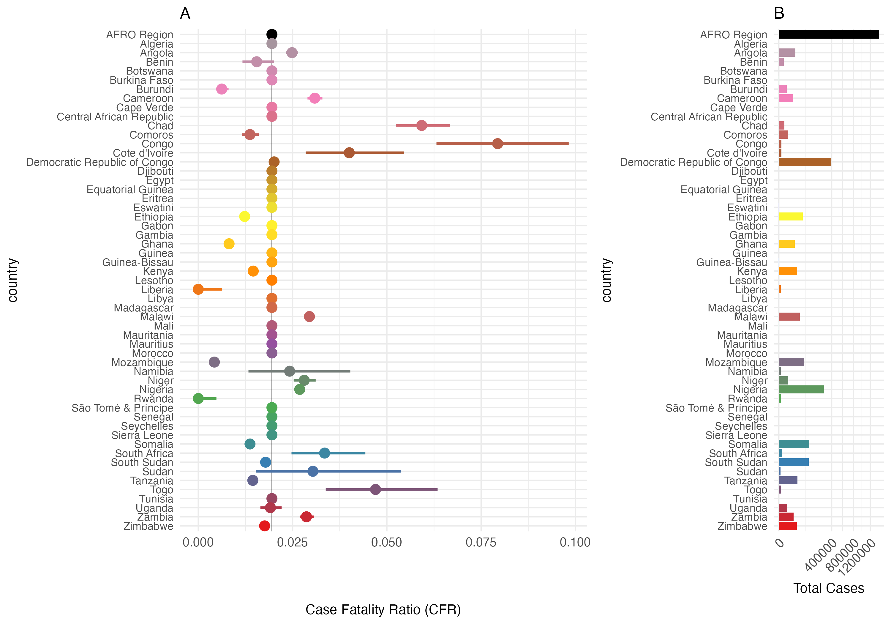
Figure 3.31: Case Fatality Rate (CFR) and Total Cases by Country in the AFRO Region from 2014 through the last complete calendar year (a year still in progress when its WHO dashboard snapshot was taken is excluded, because its deaths lag its cases). Panel A: Case Fatality Ratio (CFR) with 95% confidence intervals. Panel B: total number of cholera cases. The AFRO Region is highlighted in black; countries with fewer than 3/0.02 = 150 total reported cases are assigned the mean CFR for AFRO.
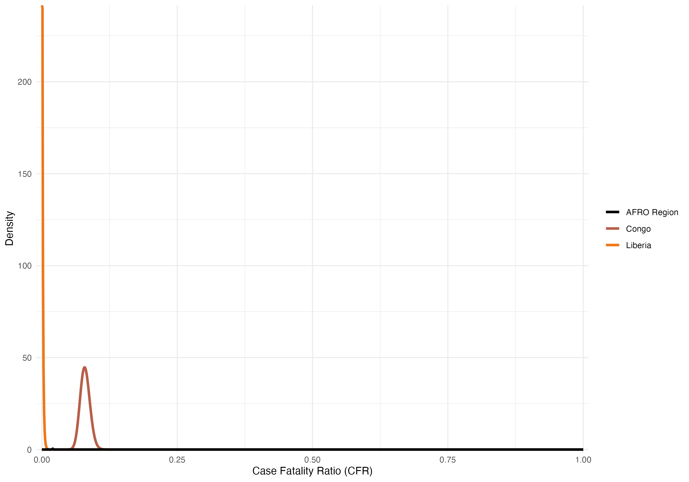
Figure 3.32: Beta distributions of the overall Case Fatality Rate (CFR) from 2014 onward for the AFRO region (black) and for the countries with the highest and lowest CFR. With about 1.4 million reported cases, the AFRO distribution is a spike at about 2% that is too narrow to show at this scale.
3.8 Demographics
The model includes basic demographic change by using reported birth and death rates for each of the \(j\) countries, \(b_j\) and \(d_j\) respectively. These rates are static and defined by the United Nations Department of Economic and Social Affairs Population Division World Population Prospects 2024. Values for \(b_j\) and \(d_j\) are derived from crude rates and converted to birth rate per day and death rate per day (shown in Table 3.7).
| Country | Population | Birth rate | Death rate |
|---|---|---|---|
| Algeria | 45831343 | 0.0000542 | 1.28e-05 |
| Angola | 36186956 | 0.0001046 | 1.93e-05 |
| Benin | 13934166 | 0.0000940 | 2.44e-05 |
| Botswana | 2459937 | 0.0000683 | 1.58e-05 |
| Burkina Faso | 22765636 | 0.0000877 | 2.21e-05 |
| Burundi | 13503998 | 0.0000935 | 1.87e-05 |
| Cameroon | 27997833 | 0.0000937 | 1.99e-05 |
| Cape Verde | 521047 | 0.0000339 | 1.39e-05 |
| Central African Republic | 5064592 | 0.0001292 | 2.63e-05 |
| Chad | 18767684 | 0.0001196 | 3.11e-05 |
| Comoros | 842267 | 0.0000793 | 1.99e-05 |
| Congo | 6108142 | 0.0000849 | 1.74e-05 |
| Côte d’Ivoire | 30783520 | 0.0000887 | 2.12e-05 |
| Democratic Republic of Congo | 104063312 | 0.0001150 | 2.37e-05 |
| Equatorial Guinea | 1825480 | 0.0000821 | 2.18e-05 |
| Eritrea | 3438999 | 0.0000789 | 1.67e-05 |
| Eswatini | 1224706 | 0.0000663 | 2.12e-05 |
| Ethiopia | 127028360 | 0.0000886 | 1.65e-05 |
| Gabon | 2457715 | 0.0000766 | 1.74e-05 |
| Gambia | 2666786 | 0.0000843 | 1.74e-05 |
| Ghana | 33467371 | 0.0000728 | 1.95e-05 |
| Guinea | 14229395 | 0.0000939 | 2.53e-05 |
| Guinea-Bissau | 2129290 | 0.0000832 | 1.95e-05 |
| Kenya | 54793511 | 0.0000750 | 2.00e-05 |
| Lesotho | 2298496 | 0.0000664 | 2.93e-05 |
| Liberia | 5432670 | 0.0000858 | 2.24e-05 |
| Madagascar | 30813475 | 0.0000890 | 2.09e-05 |
| Malawi | 20832833 | 0.0000871 | 1.49e-05 |
| Mali | 23415909 | 0.0001113 | 2.40e-05 |
| Mauritania | 4948362 | 0.0000957 | 1.54e-05 |
| Mauritius | 1274659 | 0.0000254 | 2.39e-05 |
| Mozambique | 33140626 | 0.0001042 | 1.95e-05 |
| Namibia | 2928037 | 0.0000718 | 1.71e-05 |
| Niger | 25727295 | 0.0001167 | 2.47e-05 |
| Nigeria | 225494749 | 0.0000912 | 3.25e-05 |
| Rwanda | 13802596 | 0.0000785 | 1.64e-05 |
| São Tomé & Príncipe | 228558 | 0.0000780 | 1.54e-05 |
| Senegal | 17867073 | 0.0000816 | 1.55e-05 |
| Seychelles | 126694 | 0.0000377 | 2.27e-05 |
| Sierra Leone | 8368119 | 0.0000848 | 2.30e-05 |
| Somalia | 18031404 | 0.0001198 | 2.74e-05 |
| South Africa | 62796883 | 0.0000518 | 2.55e-05 |
| South Sudan | 11146895 | 0.0000807 | 2.71e-05 |
| Tanzania | 65657004 | 0.0000979 | 1.61e-05 |
| Togo | 9196283 | 0.0000863 | 2.13e-05 |
| Uganda | 47981110 | 0.0000978 | 1.35e-05 |
| Zambia | 20430382 | 0.0000919 | 1.45e-05 |
| Zimbabwe | 16203259 | 0.0000840 | 2.10e-05 |
3.9 The basic reproductive number \(R_{0,j}\)
To evaluate the intrinsic transmission potential of Vibrio cholerae in each country \(j\), we compute a location‐specific basic reproductive number. Vaccination, susceptible depletion, and cross-border travel are set to zero; only baseline contact rates and local WASH coverage remain.
What the pipeline computes. This basic reproductive number \(R_{0,j}\) and the mechanistic effective reproductive number \(R_{jt}^{\mathrm{mech}}\) that follows are presented here as reference theory. MOSAIC computes and reports only the Cori effective reproductive number \(R_{jt}^{\mathrm{cori}}\) (see the Cori section below), post hoc from a calibration’s output with
add_reproductive_numbers(). \(R_{0,j}\) and \(R_{jt}^{\mathrm{mech}}\) are documented for completeness and are not produced as model outputs.
3.9.1 Effective removal rate
The mean infectious period combines symptomatic (\(\gamma_1^{-1}\)) and asymptomatic (\(\gamma_2^{-1}\)) durations, weighted by the symptomatic proportion \(\sigma\):
\[\begin{equation} \gamma_{\mathrm{eff}} = \left[\frac{\sigma}{\gamma_1} +\frac{1-\sigma}{\gamma_2}\right]^{-1}. \tag{3.33} \end{equation}\]
3.9.2 Worst-case environmental persistence
Following the “upper-bound” convention for \(R_0\), the pathogen-decay rate is fixed at its slowest plausible value, taken as the modal upper bound of the v1.0 decay prior \(\text{days}_{\text{long}} = \text{days}_{\text{short}} + \text{days}_{\text{spread}}\):
\[ \widehat{\delta}_j = \frac{1}{\text{days}_{\text{long}}} \approx \frac{1}{196}\;\text{day}^{-1}, \]
corresponding to a survival time of approximately 196 days in water (16-day mode of \(\text{days}_{\text{short}}\) plus 180-day mode of \(\text{days}_{\text{spread}}\); see Equation (3.7)).
Because \(R_{0,j}^{\text{env}}\propto 1/\widehat{\delta}_j\), fixing \(\widehat{\delta}_j\) at its slowest plausible value (longest persistence) maximizes the environmental contribution. \(R_{0,j}^{\text{env}}(\widehat{\delta}_j)\) is therefore a deliberate sensitivity ceiling, not the realized environmental reproduction number: the decay rate that actually governs dynamics is the time-varying, suitability-driven \(\delta_{jt}\) of Eq. (3.6), which is typically faster (\(\delta_{jt}\ge\widehat{\delta}_j\)) and shortens reservoir persistence below the 196-day worst case. \(R_{0,j}^{\text{env}}(\widehat{\delta}_j)\) should be presented as an upper envelope on intrinsic environmental potential, not as an operative rate.
3.9.3 Decomposition of \(R_{0,j}\)
Human-to-human contribution
\[ R_{0,j}^{\text{hum}} = \beta_{j0}^{\text{hum}} \left[\frac{\sigma}{\gamma_1} +\frac{1-\sigma}{\gamma_2}\right]. \]
Environment-to-human contribution
\[ R_{0,j}^{\text{env}} = \frac{\beta_{j0}^{\text{env}}\,(1-\theta_j)^{2}} {\kappa\,\widehat{\delta}_j} \left[\zeta_1\frac{\sigma}{\gamma_1} +\zeta_2\frac{1-\sigma}{\gamma_2}\right]. \]
The \(1/\kappa\) factor here is the linearization of the saturating per-capita dose-response \((W/N)/(\kappa+W/N)\) (Eq. (3.3)) evaluated at the disease-free equilibrium, where the reservoir is empty (\(W\!\to\!0\)) and the population is fully susceptible (\(S_j\!\approx\!N_j\)): the derivative of the dose-response is \(\partial\,[(W/N_j)/(\kappa+W/N_j)]/\partial W = 1/(\kappa N_j)\), and multiplying by the \(S_j \approx N_j\) susceptibles it acts on gives \(1/\kappa\). (Under the raw-\(W\) dose-response used before MOSAIC-pkg v0.89.0 the same linearization gave \(N_j/\kappa\).) The same cancellation applies to the mechanistic numbers below, where the susceptible fraction \(f_{jt}\) carries the \(S_{jt}/N_{jt}\) factor. Consequently \(R_{0,j}^{\text{env}}\) measures the invasion potential of V. cholerae into a pathogen-free reservoir — the secondary infections a single introduction would seed before the reservoir has accumulated. It is not the operative environmental transmission during an established outbreak: once \(W/N_j\) is large compared with \(\kappa\) the dose-response saturates near unity, the marginal effect of additional shedding collapses, and the effective environmental transmission is far below the \(1/\kappa\)-scaled invasion value. \(R_{0,j}^{\text{env}}\) should therefore be read as an introduction-phase quantity, not as the realised environmental reproduction number mid-epidemic.
Total basic reproductive number
\[ R_{0,j} = R_{0,j}^{\text{hum}} + R_{0,j}^{\text{env}}. \]
This additive decomposition is exact, not an approximation: because both transmission routes — the human force of infection \(\Lambda\) and the environmental force of infection \(\Psi\) — deposit newly infected individuals into the single Exposed compartment \(E\), the next-generation transmission matrix \(F\) is rank one. The spectral radius of a rank-one matrix equals its trace, so \(R_{0,j}\) is simply the sum of the two route-specific contributions, with no square-root or dominant-eigenvalue coupling between them. This exactness is contingent on the current compartment topology (a single infection-entry compartment); if the infection-entry structure changes — e.g. separate exposed compartments per route — the next-generation matrix is no longer rank one and the decomposition must be re-derived as a dominant eigenvalue.
This \(R_{0,j}\) also drops two small losses. Background mortality \(d_j\) removes individuals from \(E\), \(I_1\) and \(I_2\), and including it would scale each route by factors of order \(\iota/(\iota+d_j)\) and \(\gamma_k/(\gamma_k+d_j)\). Cholera mortality does not act as an exit rate from \(I_1\): a fatal symptomatic onset is removed at onset and never enters \(I_1\) (Eq. (3.29)), so it would multiply the symptomatic terms \(\sigma/\gamma_1\) and \(\zeta_1\sigma/\gamma_1\) by \((1-p^{\text{fatal}}_{jt})\), a reduction of about 3% at the median default \(p^{\text{fatal}}_{jt}\) (at most about 10%). The removal terms therefore use \(\iota\) and \(\gamma_{1},\gamma_{2}\) alone, and both omitted factors are close to 1 for cholera.
3.9.4 Interpretation
-
\(R_{0,j}^{\text{hum}}\) dominates in settings with high baseline contact (\(\beta_{j0}^{\text{hum}}\)) and short infectious periods.
- \(R_{0,j}^{\text{env}}\) grows when WASH access is poor (\(\theta_j\!\to\!0\)) and pathogen survival is long (\(\widehat{\delta}_j \approx 1/196\)). Because the WASH factor appears squared, improving basic services reduces both contamination and ingestion, driving \(R_{0,j}^{\text{env}}\) down rapidly.
\(R_{0,j}\) is a strictly within-patch quantity: the stated convention zeroes cross-border travel, so each \(R_{0,j}\) describes invasion in patch \(j\) treated in isolation. The per-patch \(R_{0,j}\) values therefore cannot be summed or averaged into a single metapopulation \(R_0\) — that operation has no epidemiological meaning here. A true network-level \(R_0\) would be the spectral radius of the full multi-patch next-generation matrix, in which patches are coupled through the mobility terms \(\tau_i\pi_{ij}\) (Eq. (3.2)) and through any shared environmental exposure; that coupled eigenvalue is not computed in this spec. The \(R_{0,j}\) reported here are patch-isolated reference scales, and metapopulation-level invasion should be assessed from the coupled system directly rather than aggregated from them.
These patch-specific numbers serve as a reference scale for the effective reproductive numbers reported later. They provide an upper ceiling only conditionally — when the susceptible fraction satisfies \(f_{jt}\le 1\) and the time-varying rates stay at or below baseline (\(\beta_{jt}\le\beta_{j0}\), \(\delta_{jt}\ge\widehat{\delta}_j\)); seasonal/suitability forcing can push \(\beta_{jt}>\beta_{j0}\) (and \(\delta_{jt}<\widehat{\delta}_j\)) at peak season, in which case the mechanistic \(R_{jt}^{\mathrm{mech}}\) can exceed \(R_{0,j}\) (see the mechanistic-number section below).
3.10 The mechanistic effective reproductive number \(R_{jt}^{\mathrm{mech}}\)
The model spec defines two distinct effective-reproductive-number estimands that answer different questions and will not be numerically equal in general (of these, only the Cori estimator is computed by the calibration pipeline — see the note in the basic reproductive number section above):
- \(R_{jt}^{\mathrm{mech}}\) (this section) — the mechanistic (next-generation-matrix–scaled) number. It is the basic reproductive number \(R_{0,j}\) re-evaluated with the current susceptible fraction \(f_{jt}=(1-\tau_j)S_{jt}/N_{jt}\), the time-varying transmission rates \(\beta_{jt}^{\text{hum}},\beta_{jt}^{\text{env}}\), and the time-varying environmental decay \(\delta_{jt}\). It is a forward quantity derived from the model’s parameters and current state, and answers: given the model mechanism and the present state, how many secondary infections does a typical case produce?
- \(R_{jt}^{\mathrm{cori}}\) (next section) — the Cori instantaneous estimator (Cori et al. 2013), computed from the realised route incidence and route-specific generation-interval kernels, as \(R_{jt}^{\mathrm{hum}} + R_{jt}^{\mathrm{env}}\). It is a backward/observational quantity and answers: given the incidence trajectory and an assumed generation interval, what reproductive number is consistent with the observed growth?
The two are different estimands, not two estimators of the same number. The mechanistic form documented below comes in an intrinsic variant (resident–resident transmission only) and an extrinsic variant (adding cross-border importation); it is provided as reference theory and is not produced by run_MOSAIC(), which reports the Cori estimator of the next section.
3.10.1 Intrinsic mechanistic number \(R_{jt}^{\mathrm{mech,intr}}\)
The intrinsic mechanistic number measures the secondary cases produced within location \(j\) when only resident–resident transmission pathways are active.
Susceptible fraction \[ f_{jt} = (1-\tau_j)\, \frac{S_{jt}}{N_{jt}} . \]
Effective removal rate
\[
\gamma_{\mathrm{eff}}
= \left[\frac{\sigma}{\gamma_1}
+\frac{1-\sigma}{\gamma_2}\right]^{-1}.
\]
Environmental decay
\[
\delta_{jt}
= \frac{1}{\text{days}_{\text{short}}
+\text{pbeta}(\psi_{jt}\,|\,s_1,s_2)
\bigl(\text{days}_{\text{long}}-\text{days}_{\text{short}}\bigr)} .
\]
Analytic expression \[ R_{jt}^{\mathrm{mech,intr}} = f_{jt}\Bigl[ \beta_{jt}^{\text{hum}} \Bigl(\frac{\sigma}{\gamma_1} +\frac{1-\sigma}{\gamma_2}\Bigr) + \frac{\beta_{jt}^{\text{env}}\,(1-\theta_j)^{2}} {\kappa\,\delta_{jt}} \Bigl(\zeta_1\frac{\sigma}{\gamma_1} +\zeta_2\frac{1-\sigma}{\gamma_2}\Bigr) \Bigr]. \]
When \(R_{jt}^{\mathrm{mech,intr}}<1\) local transmission would fade out in the absence of new importations.
3.10.2 Extrinsic mechanistic number \(R_{jt}^{\mathrm{mech,extr}}\)
The extrinsic mechanistic number augments the human‐to‐human term with infections sparked by visiting infectious travellers. To avoid a symbol collision with the infection-incidence series \(I^{\ast}_{jt}\) of the Cori section (Eq. (3.34)), we denote the relative imported prevalence by \(\Phi_{jt}\).
Relative imported prevalence \[ \Phi_{jt} = \frac{\sum_{i\neq j}\tau_i\pi_{ij}\bigl(I_{1,it}+I_{2,it}\bigr)} {(1-\tau_j)\bigl(I_{1,jt}+I_{2,jt}\bigr)} . \]
Analytic expression \[ R_{jt}^{\mathrm{mech,extr}} = f_{jt}\Bigl[ \beta_{jt}^{\text{hum}} \bigl(1+\Phi_{jt}\bigr) \Bigl(\frac{\sigma}{\gamma_1} +\frac{1-\sigma}{\gamma_2}\Bigr) + \frac{\beta_{jt}^{\text{env}}\,(1-\theta_j)^{2}} {\kappa\,\delta_{jt}} \Bigl(\zeta_1\frac{\sigma}{\gamma_1} +\zeta_2\frac{1-\sigma}{\gamma_2}\Bigr) \Bigr]. \]
Key points
- \(R_{jt}^{\mathrm{mech,extr}} \ge R_{jt}^{\mathrm{mech,intr}}\); equality holds when imported prevalence is negligible \((\Phi_{jt}\approx0)\).
- The linear \((1+\Phi_{jt})\) add-in is an \(\alpha_1=1\) approximation. In the human force of infection (Eq. (3.2)) the resident and imported infectious pressures are summed inside a bracket raised to the exponent \(\alpha_1\), i.e. \([(1-\tau_j)(I_{1,jt}+I_{2,jt}) + \sum_{i\neq j}\pi_{ij}\tau_i(I_{1,it}+I_{2,it})]^{\alpha_1}\). Factoring out the resident term gives a multiplier of \((1+\Phi_{jt})^{\alpha_1}\), not \((1+\Phi_{jt})\). With \(\alpha_1\) pinned at \(0.27\) the concave exponent substantially damps the import contribution, so the linear form here overstates it. The exact mechanistic multiplier is \((1+\Phi_{jt})^{\alpha_1}\); the linear expression above is retained only as the \(\alpha_1=1\) limiting case. For spatial settings where importation matters, note that the Cori estimator \(R_{jt}^{\mathrm{cori}}\) (next section) does not resolve this either: it reads transmission from local incidence, so imported infectiousness is not in its denominator and infections caused by visitors are credited to local infectiousness, and the \(\alpha_1\) exponent makes its human-route value depend on prevalence (see the caveats there).
- When \(f_{jt}\le 1\) and \(\beta_{jt}^{\text{hum}}\le\beta_{j0}^{\text{hum}}\), \(\beta_{jt}^{\text{env}}\le\beta_{j0}^{\text{env}}\), the mechanistic numbers are bounded above by the local basic value \(R_{0,j}\). This bound is conditional: seasonal/suitability forcing can drive \(\beta_{jt}>\beta_{j0}\) at peak season (and \(\delta_{jt}<\widehat{\delta}_j\) raises the environmental term), so \(R_{jt}^{\mathrm{mech}}\) can exceed \(R_{0,j}\) during favourable periods. There is no unconditional ceiling at \(R_{0,j}\).
3.11 The Cori effective reproductive number \(R_{jt}^{\mathrm{cori}}\)
The Cori instantaneous effective reproductive number \(R_{jt}^{\mathrm{cori}}\) is the second of MOSAIC’s two reproductive-number estimands (contrast the mechanistic \(R_{jt}^{\mathrm{mech}}\) above). It is computed from the realised incidence time series rather than from the model parameters, and will not in general equal \(R_{jt}^{\mathrm{mech}}\). It quantifies epidemic growth as the average number of secondary infections generated by one infection at time \(t\). Because MOSAIC has two transmission routes with very different timing, it is computed per route and summed.
The input is the infection incidence: the number of new infections per timestep at location \(j\), i.e. the realised \(S\!\to\!E\) flow, recorded separately for each route (the engine channels incidence_human and incidence_env):
\[\begin{equation}
I_{jt}^{\ast} \;=\; I_{jt}^{\ast,\mathrm{hum}} + I_{jt}^{\ast,\mathrm{env}}
\;=\; \texttt{incidence\_human}_{jt} + \texttt{incidence\_env}_{jt}.
\tag{3.34}
\end{equation}\]
Critically, \(I_{jt}^{\ast}\) is a flow (new infections), not a compartment stock (\(I_1,I_2\) occupancy). A stock is already a \(\gamma\)-convolution of past incidence, so feeding occupancy into the renewal equation would double-apply the infectious-period structure and bias \(R_{jt}^{\mathrm{cori}}\) toward \(1\).
3.11.1 Route decomposition
Every infection, whichever route produced it, becomes infectious through both routes (there is a single \(E\) compartment), so both route denominators are driven by the total incidence \(I_{j}^{\ast}\), while each numerator is that route’s own incidence. Following Cori et al. 2013, \[\begin{equation} R_{jt}^{\mathrm{hum}} = \frac{I_{jt}^{\ast,\mathrm{hum}}}{\Lambda_{jt}^{\mathrm{hum}}},\qquad R_{jt}^{\mathrm{env}} = \frac{I_{jt}^{\ast,\mathrm{env}}}{\Lambda_{jt}^{\mathrm{env}}},\qquad R_{jt}^{\mathrm{cori}} = R_{jt}^{\mathrm{hum}} + R_{jt}^{\mathrm{env}}, \tag{3.35} \end{equation}\] where the route infectiousness is the generation-weighted past incidence \[\begin{equation} \Lambda_{jt}^{\mathrm{hum}} = \sum_{u<t} I_{ju}^{\ast}\, g^{\mathrm{hum}}(t-u), \qquad \Lambda_{jt}^{\mathrm{env}} = \sum_{u<t} I_{ju}^{\ast}\, g^{\mathrm{env}}_{ju}(t-u), \tag{3.36} \end{equation}\] and each generation-interval profile sums to one over a cohort’s lifetime, so each \(R\) is secondary infections per infection if conditions stayed as they are at \(t\) (Cori’s instantaneous reproduction number). The sum is exact: it equals the Cori estimate under a mixture kernel whose route weights are \(R^{\mathrm{hum}}_{jt}/R^{\mathrm{cori}}_{jt}\) and \(R^{\mathrm{env}}_{jt}/R^{\mathrm{cori}}_{jt}\), so the route shares may change over time (they move with \(\psi_{jt}\) and season), which a single mixed kernel with fixed weights cannot represent.
3.11.2 Route generation-interval kernels
Both kernels are derived from the engine’s own daily transitions, not approximated by moment matching. A cohort infected on day \(u\) progresses from \(E\) with daily probability \(p_\iota = 1-e^{-\iota}\), becomes symptomatic with probability \(\sigma\), and leaves \(I_1\) (\(I_2\)) with daily probability \(p_1 = 1-e^{-\gamma_1}\) (\(p_2 = 1-e^{-\gamma_2}\)). Write \(P^{s}_k\), \(P^{a}_k\) for the probability of being in \(I_1\), \(I_2\) on day \(u+k\).
Human route. Symptomatic and asymptomatic people enter the human force of infection (Eq. (3.2)) with equal weight, and people infectious on day \(m\) drive infections recorded on day \(m+1\), so \[\begin{equation} g^{\mathrm{hum}}(k+1) = \frac{P^{s}_k + P^{a}_k}{D_{\mathrm{hum}}}, \qquad D_{\mathrm{hum}} = \sum_k \bigl(P^{s}_k + P^{a}_k\bigr) = \frac{\sigma}{p_1} + \frac{1-\sigma}{p_2}. \tag{3.37} \end{equation}\] Its mean is the latent period plus the transmission-weighted mean infectious age, \[\begin{equation} \mathbb{E}[g^{\mathrm{hum}}] \approx \frac{1}{\iota} + \frac{\sigma/\gamma_1^{2} + (1-\sigma)/\gamma_2^{2}}{\sigma/\gamma_1 + (1-\sigma)/\gamma_2} \quad(\text{continuous-time limit}), \tag{3.38} \end{equation}\] which is longer than the latent period plus the mean infectious duration \(1/\gamma_{\mathrm{eff}}\) (Eq. (3.33)): an infectious class contributes transmission in proportion to its duration, so long infections carry more of it. The mean duration is the right quantity for total infectious person-time (as in \(R_{0,j}\)) but not for the timing of transmission.
Environmental route. Infectious people shed into the reservoir in proportion to \(\zeta_1 P^{s}_k + \zeta_2 P^{a}_k\) (the WASH factor \(1-\theta_j\) and the absolute shedding scale cancel on normalisation), cells survive with the \(\psi\)-dependent daily decay \(\delta_{jt}\) (Eq. (3.6)), and the reservoir on day \(n\) drives infections recorded on day \(n+1\). Because \(\delta_{jt}\) varies in time, the instantaneous estimate needs care: the reservoir present at \(t-1\) is built from the actual past decay path, while one infection’s lifetime reservoir contribution is valued at today’s decay rate, as Cori’s “if conditions stayed as they are at \(t\)” requires:
\[\begin{equation}
\Lambda_{jt}^{\mathrm{env}} = \widehat{W}_{j,t-1}\,\frac{\delta_{jt}}{S_w},
\qquad
\widehat{W}_{j,t} = \widehat{W}_{j,t-1}\,(1-\delta_{jt}) + \sum_{u<t} I^{\ast}_{ju}\bigl(w_1 P^{s}_{t-1-u} + w_2 P^{a}_{t-1-u}\bigr),
\qquad
S_w = \sum_{k\ge1}\bigl(w_1 P^{s}_k + w_2 P^{a}_k\bigr),
\qquad w_i = \frac{\zeta_i}{\zeta_1+\zeta_2},
\tag{3.39}
\end{equation}\]
where \(\widehat{W}\) is the reservoir (in normalised shedding units) implied by past incidence, \(S_w\) one infection’s expected total shedding, and \(S_w/\delta_{jt}\) its lifetime cell-days at today’s decay. Nothing after \(t\) enters, so truncating the series (e.g. at a forecast cut-off) does not change earlier values; at constant \(\delta\) Eq. (3.39) reduces to the convolution in Eq. (3.36). Decay rates above one (possible when decay_days_short \(<1\) day) are capped at one, as the engine clamps decay to the reservoir. Because the lifetime is valued at today’s decay, \(R^{\mathrm{env}}_{jt}\) moves with the day’s \(\delta_{jt}\): when suitability jumps and survival lengthens sharply, \(R^{\mathrm{env}}_{jt}\) jumps with it (it answers what one infection would cause if the new conditions held), and per-member peak statistics pick up these switches. At constant decay \(\delta\) the mean environmental interval is approximately
\[
\mathbb{E}[g^{\mathrm{env}}] \approx \frac{1}{\iota} + \frac{w_1\sigma/\gamma_1^{2} + w_2(1-\sigma)/\gamma_2^{2}}{w_1\sigma/\gamma_1 + w_2(1-\sigma)/\gamma_2} + \frac{1}{\delta},
\]
so the survival term \(1/\delta_{jt}\) (from decay_days_short \(\approx 16\) d at low suitability to decay_days_long \(\approx 200\) d at high suitability) dominates: environmental generation intervals are tens to hundreds of days, against roughly a week for the human route. A single human-timed kernel applied to waterborne transmission therefore compresses \(R\) strongly toward 1: the same growth rate implies a much larger \(R\) under a long generation interval. (The survival bound used here, decay_days_long \(=200\) d in the default configuration, is the value sampled around; the \(R_{0,j}\) section’s worst case of 196 d is the modal upper bound of the same prior.)
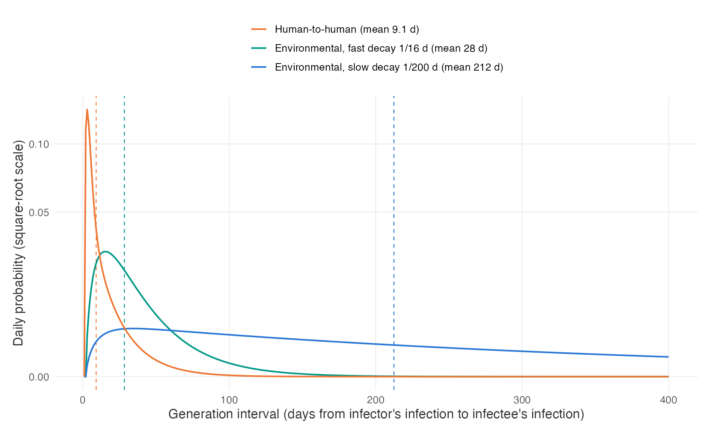
Figure 3.33: Route generation-interval kernels at the default timing parameters. Orange: human-to-human route. Teal and blue: environmental route at fast decay (low suitability, 1/decay_days_short) and slow decay (high suitability, 1/decay_days_long). Vertical lines mark each kernel mean. The square-root probability axis keeps the long environmental tail visible.
3.11.3 Initial conditions and interpretation
People already latent or infectious when the simulation starts cause infections that no recorded incidence explains. They are real sources of transmission, so their stocks (\(E\), \(I_1\), \(I_2\) on the first day) are propagated through the same kernels and included in \(\Lambda^{\mathrm{hum}}_{jt}\) and \(\Lambda^{\mathrm{env}}_{jt}\); the engine starts with an empty reservoir, so they reach it only by shedding (the reservoir on the first recorded day already holds one day of it), and the recursion in Eq. (3.39) carries these initial terms alongside the incidence terms. Values in roughly the first \(1/\delta\) days nevertheless describe a start from no history: the reservoir fills from empty while the dose-response is still near-linear, so \(R^{\mathrm{env}}_{jt}\) is high at first and falls as the reservoir builds up. They should be read after a burn-in (add_reproductive_numbers() masks one, by default the calibration’s burn_in_days or 30 days).
Three caveats apply to the reported values:
- \(R_{jt}^{\mathrm{cori}}\) is computed on simulated incidence, so it describes the model trajectory (and is comparable to a surveillance-derived Cori estimate computed the same way). It is not a first-principles invasion threshold.
- The renewal equation assumes transmission is linear in infectiousness. The human force of infection uses \(I^{\alpha_1}\) with \(\alpha_1\approx0.27\), so \(R^{\mathrm{hum}}_{jt} \propto S_{jt}\,I_{jt}^{\alpha_1-1}/N_{jt}^{\alpha_2}\): it rises as prevalence falls (about sevenfold for a tenfold drop in prevalence) and peaks in inter-epidemic troughs, so it must not be compared across prevalence levels. The environmental dose saturates when \(W/N\) approaches \(\kappa\), which genuinely lowers \(R^{\mathrm{env}}_{jt}\) during large outbreaks. Both route values are therefore trajectory descriptors, not per-contact constants.
- Infectiousness imported through mobility (\(\tau_i\pi_{ij}\)) is not in \(\Lambda_{jt}\) (and residents’ travel away is not removed from it); the estimate uses local incidence only, so in importation-driven patches \(R^{\mathrm{hum}}_{jt}\) credits visitors’ transmission to local infectiousness.
The pipeline reports \(R^{\mathrm{hum}}_{jt}\), \(R^{\mathrm{env}}_{jt}\) and their sum through calc_Reff() and add_reproductive_numbers() in MOSAIC-pkg (the latter also re-simulates the posterior members for a credible interval and a per-member peak statistic).
Legacy kernel.
get_generation_time_distribution()in MOSAIC-pkg still tabulates a fixed \(\mathrm{Gamma}(\text{shape}=0.5,\ \text{rate}=0.1)\) kernel (mean \(\approx 5\) days) for the model-input tables: \[\begin{equation} g(\cdot) \sim \text{Gamma}(\text{shape} = 0.5,\ \text{rate} = 0.1). \tag{3.40} \end{equation}\] It is not derived from the model’s parameters and is not used for \(R_{jt}^{\mathrm{cori}}\). Earlier MOSAIC versions computed \(R_{jt}^{\mathrm{cori}}\) with a single moment-matched Gamma kernel of mean \(1/\iota + 1/\gamma_{\mathrm{eff}}\) applied to total incidence; that kernel omitted the environmental survival delay and used the mean infectious duration rather than the transmission-weighted mean infectious age, which pulled \(R_{jt}^{\mathrm{cori}}\) toward \(1\) wherever waterborne transmission dominates.
3.12 Initial conditions
The default MOSAIC configuration begins on 1 January 2023 (the earliest date for which weekly cholera surveillance is uniformly available across the AFRO region), so each compartment must be initialised at \(t = 0\). The initial-condition priors are estimated at the simulation start, so the seeding epoch \(t_0\) is the start date itself (1 January 2023 for the default configuration). Versions of MOSAIC-pkg before v0.100.1 estimated them at the month within the first year in which the most countries reported active cases (1 February 2023), which left countries whose outbreaks were already under way on 1 January without initial infections. Rather than treating the initial counts as free fit parameters, we derive informative per-country priors on the proportions of the population in each compartment from independent data sources, then sample the priors as part of the BFRS workflow and normalise so that the six proportions sum to unity within each location. The Monte Carlo draws behind the \(E\), \(I\), \(R\) and \(S\) priors use a seed derived from each country’s code, so rebuilding the priors from the same inputs reproduces them exactly.
3.12.1 Vaccinated initial conditions (\(V_1, V_2\))
The proportions in \(V_1\) and \(V_2\) at \(t = 0\) are derived from each country’s OCV campaign history before \(t_0\) as recorded in the GTFCC OCV Dashboard. Campaigns are classified by vaccine product: single-dose Euvichol-S campaigns contribute only to \(V_1\), while for all other products (and campaigns with no recorded product) the first and second rounds of each campaign are paired. As in the engine’s vaccination step (Equation (3.1)), only effective doses enter a vaccinated compartment: the fraction \(\phi_1\) of first-round doses enters \(V_1\), and second-round doses, capped at the number of effective first-dose recipients, move the fraction \(\phi_2\) of their recipients from \(V_1\) to \(V_2\), with \(\phi_1\) and \(\phi_2\) at their prior means. Each round then contributes a residual immune fraction at \(t = 0\), its effective coverage multiplied by an exponential waning factor \(e^{-\omega_k \Delta t}\) where \(\omega_k\) is the per-dose waning rate (Equation (3.13)) and \(\Delta t\) is the time from the onset of protection, 14 days after the round, to \(t_0\). The number of dose recipients is capped at 70% of the population, consistent with reported maximum reachable coverage in mass-administration settings (Abubakar et al. 2018). The resulting means are then moment-matched to Beta priors with coefficient of variation 0.40 to honestly reflect campaign-record uncertainty:
\[ \text{prop}V_{1,j} \sim \text{Beta}(s_{1,j}^{V_1},\ s_{2,j}^{V_1}), \quad \text{prop}V_{2,j} \sim \text{Beta}(s_{1,j}^{V_2},\ s_{2,j}^{V_2}), \]
with shape parameters \((s_1, s_2)\) derived per country (e.g. for Mozambique the prior means are approximately 0.014 for \(V_1\) and 0.015 for \(V_2\)). Among countries with campaigns before \(t_0\), the prior mean of \(\text{prop}V_{1,j}\) ranges from about 0.1% to 15% of the population (Malawi) and that of \(\text{prop}V_{2,j}\) reaches about 7% (Zambia). A country with no campaign before \(t_0\) keeps the weakly informative template priors \(\text{Beta}(0.5, 49.5)\) for \(\text{prop}V_{1,j}\) and \(\text{Beta}(0.5, 99.5)\) for \(\text{prop}V_{2,j}\) (means 1% and 0.5%, modes at zero), as does either compartment that receives no effective doses (e.g. \(V_2\) in a country whose campaigns were all single-dose). This replaces the static Beta priors used in earlier MOSAIC versions, which placed identical, weakly informative shapes on \(V_1\) and \(V_2\) regardless of country history.
3.12.2 Susceptible and recovered initial conditions (\(S, R\))
The proportion in \(R\) at \(t = 0\) is derived from the cumulative reported cholera incidence in the WHO annual record over the years preceding \(t_0\) (spread over each year with the location’s seasonal pattern), converted to true infections through the same observation process the engine uses (Equation (3.22)),
\[ \text{infections} \;=\; \text{reported cases} \times \frac{\chi^{\text{end}}}{\rho\,\sigma}, \]
then adjusted by the natural-immunity waning rate \(\varepsilon\) (applied from the end of each infection) to give the surviving immune fraction at \(t = 0\). Each Monte Carlo draw samples \(\rho\), \(\chi^{\text{end}}\), \(\sigma\), \(\varepsilon\), the recovery and incubation rates and the seasonal coefficients from their priors; the endemic PPV is used because annual totals are dominated by endemic-regime reporting. The Beta prior for each country keeps the Monte Carlo mean (a method-of-moments fit, with the first shape parameter floored at 1 so the density does not diverge at zero). Countries with extensive recent outbreaks (e.g. parts of the Horn of Africa) carry a substantially larger \(R\) at \(t = 0\) than countries with sparse historical incidence: across the 40 countries the prior mean of \(\text{prop}R_{,j}\) ranges from about \(10^{-5}\) to 0.035 (Somalia), with a median of about 0.002.
The proportion in \(S\) is then derived as the residual once the other five proportions have been placed:
\[ \text{prop}S_{,j} = 1 - \text{prop}V_{1,j} - \text{prop}V_{2,j} - \text{prop}R_{,j} - \text{prop}E_{,j} - \text{prop}I_{,j}, \]
and the resulting per-country values are fit to a Beta prior. Across the 40 MOSAIC countries the prior mean for \(\text{prop}S\) ranges from approximately 0.84 to 0.99 with a standard deviation of 0.04, with the lowest values in countries with the highest combined vaccine-derived and natural immunity. This Beta prior summarises the residual and is not itself sampled: in calibration \(\text{prop}S_{,j}\) is the residual of each draw (see below).
3.12.3 Exposed and infected initial conditions (\(E, I_1, I_2\))
The proportions in \(E\) and the combined infectious pool \(I = I_1 + I_2\) at \(t = 0\) are derived from the reported cases in a 28-day window straddling \(t_0\) (the 14 days before it and the 14 days from it onward) by inverting the observation pipeline (Equation (3.22)): a case reported on day \(d\) is a symptomatic onset on day \(d - l_{\text{cases}}\), and all onsets, symptomatic and asymptomatic, number \(\text{reported cases} \times \chi^{\text{end}} / (\rho\,\sigma)\). The window straddles \(t_0\) because surveillance is reported weekly, and several countries whose outbreaks were under way on 1 January 2023 report no cases in the days just before it. With \(\lambda_j\) the resulting mean daily onset rate over the window,
\[ E_{j} \;=\; \frac{\lambda_j}{1 - e^{-\iota}}, \]
the exposed stock in balance with that onset rate under the engine’s daily progression probability \(1 - e^{-\iota}\) (a reported case has already left \(E\), so \(E\) is not built from the reports themselves). \(I_j\) is the sum of the onsets reported before \(t_0\) that have not yet recovered by \(t_0\), each surviving with daily probability \(e^{-\gamma_1}\) for the symptomatic share \(\sigma\) and \(e^{-\gamma_2}\) for the rest; onsets the reports before \(t_0\) cannot place (those in the last \(l_{\text{cases}}\) days before \(t_0\), which are reported on or after it, and those older than the window) are filled in at the same rate \(\lambda_j\), so reports from \(t_0\) onward enter only through \(\lambda_j\). Each of 1000 Monte Carlo draws samples \(\sigma\), \(\iota\), \(\gamma_1\), \(\gamma_2\), \(\rho\), \(\chi^{\text{end}}\) and \(l_{\text{cases}}\) from their priors. The Beta prior for each country keeps the Monte Carlo mean \(m\) and is given a 95% interval of approximately \([m/10,\ 10m]\) on the logit scale, reflecting the combined uncertainty of the reporting chain and the dwell times. Per-country prior medians vary by orders of magnitude across the AFRO region, in line with the surveillance signal. The combined \(I\) is split into \(I_1\) and \(I_2\) at \(t = 0\) by a binomial draw with the symptomatic proportion \(\sigma\) as the probability.
A country whose window reports no cases, and which reports none later in the simulation window either, receives the near-zero template prior \(\text{Beta}(0.01, 99999.99)\) for both \(\text{prop}E_{,j}\) and \(\text{prop}I_{,j}\). A quiet-start country is one that reports cases later in the simulation window (after the initial-condition window, up to the end date) but either reports none in the window or so few that its window-based priors imply fewer than one expected initial infection, \(N_j\,(\mathbb{E}[\text{prop}E_{,j}] + \mathbb{E}[\text{prop}I_{,j}]) < 1\), with \(N_j\) the population at \(t_0\). A quiet-start country instead receives the weak seeding prior \(\text{Beta}(1, 10^5)\) for both \(\text{prop}E_{,j}\) and \(\text{prop}I_{,j}\) (mean \(10^{-5}\) of the population in each compartment, mode at zero). The seed stands in for undetected circulation or importation: a single-location fit has no importation mechanism, so without it a country that starts with no infections cannot reproduce its later outbreak. In the default configuration the quiet-start countries are Burkina Faso, the Central African Republic, Chad, Congo, Côte d’Ivoire, Eswatini, Ghana, Namibia, Niger, Rwanda and Togo (Congo, with one case in the window, by the second criterion), listed in priors_default$metadata$quiet_start_seeded, while the 11 countries that report no cases up to the end of the simulation window keep the template.
After sampling, \(\text{prop}S_{,j}\) is set to one minus the sum of the other five proportions (if they sum to one or more, it is set to zero and they are rescaled to sum to unity), and the six proportions are converted to integer compartment counts that sum exactly to the country’s \(t = 0\) population (largest-remainder rounding).
3.13 Model calibration
After the transmission model is fully specified, we tune its numerical parameters by maximizing the log-likelihood of the observed cholera cases and deaths in a Bayesian inference framework that uses brute-force random-sampling approach to parameter estimation. A detailed walk-through—including likelihood equations, importance-sampling weights, and convergence diagnostics—is provided on the dedicated Model Calibration page.
3.14 Table of MOSAIC framework countries
| ISO | Country | Region | Cholera News |
|---|---|---|---|
| BDI | Burundi | Eastern Africa | Cholera News: Burundi |
| ERI | Eritrea | Eastern Africa | Cholera News: Eritrea |
| ETH | Ethiopia | Eastern Africa | Cholera News: Ethiopia |
| KEN | Kenya | Eastern Africa | Cholera News: Kenya |
| MWI | Malawi | Eastern Africa | Cholera News: Malawi |
| MOZ | Mozambique | Eastern Africa | Cholera News: Mozambique |
| RWA | Rwanda | Eastern Africa | Cholera News: Rwanda |
| SOM | Somalia | Eastern Africa | Cholera News: Somalia |
| SSD | South Sudan | Eastern Africa | Cholera News: South Sudan |
| TZA | Tanzania | Eastern Africa | Cholera News: Tanzania |
| UGA | Uganda | Eastern Africa | Cholera News: Uganda |
| ZMB | Zambia | Eastern Africa | Cholera News: Zambia |
| ZWE | Zimbabwe | Eastern Africa | Cholera News: Zimbabwe |
| AGO | Angola | Middle Africa | Cholera News: Angola |
| CMR | Cameroon | Middle Africa | Cholera News: Cameroon |
| CAF | Central African Republic | Middle Africa | Cholera News: Central African Republic |
| TCD | Chad | Middle Africa | Cholera News: Chad |
| COD | Democratic Republic of the Congo | Middle Africa | Cholera News: Democratic Republic of the Congo |
| GNQ | Equatorial Guinea | Middle Africa | Cholera News: Equatorial Guinea |
| GAB | Gabon | Middle Africa | Cholera News: Gabon |
| COG | Republic of the Congo | Middle Africa | Cholera News: Republic of the Congo |
| BWA | Botswana | Southern Africa | Cholera News: Botswana |
| SWZ | Kingdom of eSwatini | Southern Africa | Cholera News: Kingdom of eSwatini |
| NAM | Namibia | Southern Africa | Cholera News: Namibia |
| ZAF | South Africa | Southern Africa | Cholera News: South Africa |
| BEN | Benin | Western Africa | Cholera News: Benin |
| BFA | Burkina Faso | Western Africa | Cholera News: Burkina Faso |
| CIV | Côte d’Ivoire | Western Africa | Cholera News: Côte d’Ivoire |
| GHA | Ghana | Western Africa | Cholera News: Ghana |
| GIN | Guinea | Western Africa | Cholera News: Guinea |
| GNB | Guinea-Bissau | Western Africa | Cholera News: Guinea-Bissau |
| LBR | Liberia | Western Africa | Cholera News: Liberia |
| MLI | Mali | Western Africa | Cholera News: Mali |
| MRT | Mauritania | Western Africa | Cholera News: Mauritania |
| NER | Niger | Western Africa | Cholera News: Niger |
| NGA | Nigeria | Western Africa | Cholera News: Nigeria |
| SEN | Senegal | Western Africa | Cholera News: Senegal |
| SLE | Sierra Leone | Western Africa | Cholera News: Sierra Leone |
| GMB | The Gambia | Western Africa | Cholera News: The Gambia |
| TGO | Togo | Western Africa | Cholera News: Togo |
3.15 Table of model parameters
| Parameter | Description | Distribution | Source |
|---|---|---|---|
| \(i\) | Index representing the origin metapopulation. | ||
| \(j\) | Index representing the destination metapopulation. | ||
| \(t\) | Time step (one day). | ||
| \(b_{jt}\) | Birth rate of population \(j\). | UN World Population Prospects | |
| \(d_{jt}\) | Mortality rate of population \(j\). | UN World Population Prospects | |
| \(N_{jt}\) | Population size of destination \(j\) at time \(t\). | ||
| \(S_{jt}\) | Number of susceptible individuals in destination \(j\) at time \(t\). | ||
| \(V_{1,jt}\) | Number of individuals with one-dose vaccination in destination \(j\) at time \(t\). | ||
| \(V_{2,jt}\) | Number of individuals with two-dose vaccination in destination \(j\) at time \(t\). | ||
| \(E_{jt}\) | Number of exposed (infected, not yet infectious) individuals in destination \(j\) at time \(t\). | ||
| \(I_{1,jt}\) | Number of symptomatic infected individuals in destination \(j\) at time \(t\). | ||
| \(I_{2,jt}\) | Number of asymptomatic infected individuals in destination \(j\) at time \(t\). | ||
| \(W_{jt}\) | Amount of V. cholerae in the environment in destination \(j\) at time \(t\). | ||
| \(R_{jt}\) | Number of recovered (immune) individuals in destination \(j\) at time \(t\). | ||
| \(\Lambda_{j,t+1}\) | Human-to-human force of infection in destination \(j\) at time \(t+1\). | ||
| \(\Psi_{j,t+1}\) | Environment-to-human force of infection in destination \(j\) at time \(t+1\). | ||
| \(\iota\) | Incubation rate of cholera infection (reciprocal of the mean incubation period), per day. | \(\text{Lognormal}(-0.337, 0.4)\) \(\text{day}^{-1}\) (median period \(\approx 1.4\) days; 95% CI \(\approx 0.64\)–\(3.1\) days) | Azman et al 2013 |
| \(\phi_1\) | Vaccine effectiveness of one-dose OCV. | ||
| \(\phi_2\) | Vaccine effectiveness of two-dose OCV. | ||
| \(\nu_{jt}\) | Total OCV doses delivered per day in destination \(j\) at time \(t\) (shipped doses spread at a maximum daily rate). The engine takes first-dose (\(\nu_{1,jt}\)) and second-dose (\(\nu_{2,jt}\)) rates; the default configuration routes all doses to \(\nu_{1,jt}\) — see the supplementary parameter table below. | ||
| \(\omega_1\) | Waning immunity rate of vaccinated individuals with one-dose OCV. | ||
| \(\omega_2\) | Waning immunity rate of vaccinated individuals with two-dose OCV. | ||
| \(\varepsilon\) | Waning immunity rate of recovered individuals. | ||
| \(\gamma_1\) | Recovery rate of symptomatic infected individuals. | ||
| \(\gamma_2\) | Recovery rate of asymptomatic infected individuals. | ||
| \(\mu_{jt}\) | Reported case fatality ratio in destination \(j\) on day \(t\): expected reported deaths per reported suspected case. Converted to the per-onset fatality probability \(p^{\text{fatal}}_{jt}\) (see the Case fatality rate subsection). | Prior centre \(\mu^{0}_{jt}\) from the WHO-annual hierarchical GAM (Eq. (3.30)); integrated out of the deaths likelihood (Eq. (3.31)). | WHO annual cholera record 1970 onward (Our World in Data, WHO Weekly Epidemiological Record, WHO Global Cholera and AWD Dashboard); est_CFR_hierarchical(). |
| \(\sigma\) | Proportion of infections that are symptomatic. | \(\text{Beta}(3.75, 7.12)\) (mean \(\approx 0.35\)) | See Table 3.5. |
| \(\rho\) | Care-seeking rate: probability a true symptomatic infection is reported as a suspected case. | ||
| \(\zeta_1\) | Shedding rate (cells per symptomatic person per day) of V. cholerae by symptomatic individuals. | \(\text{Lognormal}(25.65, 2.46)\) | Fung 2014 |
| \(\zeta_2\) | Shedding rate (cells per asymptomatic person per day) of V. cholerae by asymptomatic individuals; derived as \(\zeta_1/\zeta_{\text{ratio}}\). | Derived from \(\zeta_1\) and \(\zeta_{\text{ratio}}\) | Fung 2014 |
| \(\delta\) | Environmental decay rate of V. cholerae. | Determined dynamically in model based on \(\psi_{jt}\). | |
| \(\delta_{\text{min}}\) | Minimum decay rate (longest V. cholerae survival), reached at \(\psi_{jt}=1\); equals \(1/\text{days}_{\text{long}}\). | \(\approx 0.0051 \ (196 \ \text{days})\) | |
| \(\delta_{\text{max}}\) | Maximum decay rate (shortest V. cholerae survival), reached at \(\psi_{jt}=0\); equals \(1/\text{days}_{\text{short}}\). | \(\approx 0.063 \ (16 \ \text{days})\) | |
| \(\psi_{jt}\) | Environmental suitability of V. cholerae in destination \(j\) at time \(t\). | Estimated by LSTM-RNN model. | |
| \(\beta_{j0}^{\text{hum}}\) | Baseline human-to-human transmission rate in destination \(j\) (derived: \(p_\beta\,\beta_{j0}^{\text{tot}}\)). | ||
| \(\beta_{jt}^{\text{hum}}\) | Seasonal human-to-human transmission rate in destination \(j\) at time \(t\). | ||
| \(\beta_{j0}^{\text{env}}\) | Baseline environment-to-human transmission rate in destination \(j\) (derived: \((1-p_\beta)\,\beta_{j0}^{\text{tot}}\)). | ||
| \(\beta_{jt}^{\text{env}}\) | Environment-to-human transmission rate in destination \(j\) at time \(t\). | ||
| \(\beta_{j0}^{\text{tot}}\) | Total baseline transmission rate in destination \(j\); sampled in calibration, with \(\beta_{j0}^{\text{hum}} = p_\beta\,\beta_{j0}^{\text{tot}}\) and \(\beta_{j0}^{\text{env}} = (1-p_\beta)\,\beta_{j0}^{\text{tot}}\) derived from it. | Per-country \(\text{Lognormal}\) (default median \(2 \times 10^{-5}\), sdlog 1.17; recentred for countries with calibration evidence). |
priors_default (beta_j0_tot). |
| \(p_\beta\) | Proportion of the total baseline transmission rate that is human-to-human in destination \(j\). | \(\text{Beta}(5.48, 10.10)\) (mode 0.33, 95% interval \(\approx 0.14\)–\(0.60\)) per location. |
priors_default (p_beta). |
| \(a_1\) | First Fourier cosine coefficient for seasonality. | See Table 3.1. | Altizer et al 2006 |
| \(b_1\) | First Fourier sine coefficient for seasonality. | See Table 3.1. | Altizer et al 2006 |
| \(a_2\) | Second Fourier cosine coefficient for seasonality. | See Table 3.1. | Altizer et al 2006 |
| \(b_2\) | Second Fourier sine coefficient for seasonality. | See Table 3.1. | Altizer et al 2006 |
| \(p\) | Period of the seasonal cycle (set to days). | \(365\) | |
| \(\alpha_1\) | Exponent on infectious individuals in the force of infection numerator. Dual-mode: a single global scalar (broadcast to all metapopulations) or a per-location vector applied elementwise per patch (pinned at 0.27 by default, sample_alpha_1 = FALSE; a shared per-location prior \(\text{Beta}(28.4, 71.6)\) is available for mixing-exponent experiments). |
Pinned at \(0.27\); prior \(\text{Beta}(28.4, 71.6)\) per location if sampled. | Glass et al 2003 |
| \(\alpha_2\) | Exponent on population size in the force of infection denominator; determines density (0) vs frequency (1) dependence. A single global scalar, pinned at 0.5 by default (sample_alpha_2 = FALSE). |
Pinned at \(0.50\); prior \(\text{Beta}(6.92, 6.92)\) if sampled. | McCallum et al 2001 |
| \(\tau_i\) | Probability an individual departs from origin \(i\). | ||
| \(\pi_{ij}\) | Probability of travel from origin \(i\) to destination \(j\) given departure. | ||
| \(\omega^{\text{mob}}\) | Gravity-model exponent on destination population size (Eq. (3.15)). | \(\text{Gamma}(2.25, 2)\) (mode \(0.627\)) | Gravity fit to the fused origin-destination matrix. |
| \(\gamma^{\text{mob}}\) | Gravity-model distance-decay exponent (Eq. (3.15)). | \(\text{Gamma}(4.80, 2)\) (mode \(1.900\)) | Gravity fit to the fused origin-destination matrix. |
| \(\theta_{j}\) | Proportion with adequate WASH in destination \(j\). | See Figure 3.18. | Sikder et al 2023 |
| \(\kappa\) | Half-saturation constant of the environmental dose-response, applied to the per-capita load \(W_{jt}/N_{jt}\) (cells per resident); anchored on volunteer ID\(_{50}\) data. See Infectious dose (\(\kappa\)). | Pinned at \(10^6\) by default; prior \(\text{Lognormal}(11.77, 1.82)\) for sensitivity runs. | Meta-analysis (see Infectious dose subsection) |
| Parameter | Description | Distribution | Source |
|---|---|---|---|
| \(\nu_{1,jt}\) | First-dose vaccination rate (deterministic delivery) in destination \(j\) at time \(t\). | All shipped doses, \(\nu_{jt}\) (GTFCC and WHO ICG campaign data). | GTFCC OCV Dashboard |
| \(\nu_{2,jt}\) | Second-dose vaccination rate in destination \(j\) at time \(t\); restricted to existing \(V_1\) recipients. Zero in the default configuration (no round-level data). | \(0\) in the default configuration. | GTFCC OCV Dashboard |
| \(\mathcal{V}^{\text{src}}\) | Set of compartments eligible for first-dose vaccination (subset of \(\{S, E, I_1, I_2, R\}\)). | Default: \(\{S, E, I_1, I_2, R\}\). | laser-cholera issue #42. |
| \(N^{\text{src}}_{jt}\) | Total population eligible for first-dose vaccination on day \(t\): \(\sum_{X \in \mathcal{V}^{\text{src}}} X_{jt}\). | Computed. | Computed from compartment populations. |
| \(\zeta_{\text{ratio}}\) | Symptomatic-to-asymptomatic shedding ratio \(\zeta_1/\zeta_2\). | \(\text{Lognormal}(4.31, 4.39)\) truncated to \([1, \infty)\) | Literature meta-analysis (Smith 2026, Nelson 2009, Chao 2011, Finger 2018, etc.) |
| \(\text{days}_{\text{short}}\) | Survival time of V. cholerae at low environmental suitability (\(\psi_{jt}\!\to\!0\)). | \(\text{Truncnorm}(16, 7, 0.01, 60)\) | Literature anchor; staged calibration. |
| \(\text{days}_{\text{long}}\) | Survival time at high environmental suitability (\(\psi_{jt}\!\to\!1\)). Derived as \(\text{days}_{\text{short}} + \text{days}_{\text{spread}}\). | Derived. | Algebraic. |
| \(\text{days}_{\text{spread}}\) | Algebraic spread between minimum and maximum V. cholerae survival time. | \(\text{Truncnorm}(180, 95, 1, 365)\) | Literature anchor; staged calibration. |
| \(s_1, s_2\) | Shape parameters of the cumulative Beta transformation \(f(\psi_{jt}) = \text{pbeta}(\psi_{jt}\mid s_1, s_2)\) for the decay rate. | \(\text{Truncnorm}(3, 5, 0.1, 10)\) each | Bayesian regularisation (v0.26). |
| \(\psi^{\ast}_{jt}\) | Calibrated (EWMA-smoothed, logit-affine, time-shifted) environmental suitability used in the FOI and decay rate (see the Calibration of suitability to surveillance subsection). | Computed (Eq. (3.9)). | Computed (per-country logit calibration). |
| \(a_{\psi^{\ast},j}\) | Per-country shape/gain parameter for the \(\psi \to \psi^{\ast}\) logit calibration. | \(\text{Truncnorm}(1, 1, 0, \infty)\) | Per-country posterior (calibration). |
| \(b_{\psi^{\ast},j}\) | Per-country scale/offset parameter for the \(\psi \to \psi^{\ast}\) logit calibration. | \(\mathcal{N}(1, 2.5)\) | Per-country posterior (calibration). |
| \(z_{\psi^{\ast},j}\) | Per-country EWMA smoothing weight (\(z = 1\): no smoothing). | \(\text{Beta}(2, 1)\) | Per-country posterior; Beta(2,1) tightening from v0.28.5. |
| \(k_{\psi^{\ast},j}\) | Per-country time offset in days for the \(\psi \to \psi^{\ast}\) calibration. | \(\text{Truncnorm}(0, 25, -90, 90)\) | Per-country posterior (calibration). |
| \(\eta_j\) | Per-country daily symptomatic-prevalence threshold for the epidemic regime (Isym/N). | \(\text{Truncnorm}\) per country, capped at 0.01. | Per-country historical median epidemic prevalence. |
| \(\chi^{\text{end}}\) | Positive predictive value of a suspected cholera case during endemic periods. | \(\text{Beta}(5.56, 5.10)\) | Wiens et al. 2023 |
| \(\chi^{\text{epi}}\) | Positive predictive value of a suspected cholera case during epidemic periods. | \(\text{Beta}(4.97, 1.58)\) | Wiens et al. 2023 |
| \(\rho_{\text{deaths}}\) | Probability that a true cholera death is captured by surveillance. | Pinned at 0.42; prior \(\text{Beta}(36.95, 51.02)\) retained for sensitivity runs. | SSA random-effects meta-analysis: Routh 2017, Shikanga 2009, Bwire 2013. |
| \(l_{\text{cases}}\) | Reporting lag in days from symptom onset to case reporting; deaths are reported on the same lag. | \(\text{Truncnorm}(1, 1.5, 0, 7)\) days | Surveillance reporting practice. |
| \(p^{\text{fatal}}_{jt}\) | Probability that a symptomatic onset is fatal (decided at onset; fatal onsets never enter \(I_1\)). | Derived: \(\mu_{jt}\,\rho / (\rho_{\text{deaths}}\,\chi^{\text{epi}})\) (Eq. (3.29)). | Engine (MOSAIC-pkg v0.96.0). |
| \(\mu^{0}_{jt}\) | Prior centre of the reported CFR (config$mu_jt): WHO-annual GAM centres interpolated on the logit scale between 1 July anchors. |
Computed (Eq. (3.30)). |
est_CFR_hierarchical(), make_mu_jt(). |
| \(\xi_j\) | Location offset of the reported CFR on the logit scale; integrated out of the deaths likelihood. | \(\mathcal{N}(0,\ \text{sd}_{\text{product}}^2 + \overline{\text{se}^2_{j}})\), \(\text{sd}_{\text{product}} = 0.3\) |
priors_default mu_jt block. |
| \(e_{j,\text{yr}}\) | Calendar-year deviation of the reported CFR on the logit scale, blended across each 1 January; integrated out of the deaths likelihood. | \(\mathcal{N}(0,\ 0.70^2)\); forecast years \(\mathcal{N}(\bar{e}_j,\ 0.70^2)\) | GAM country-year SD (priors_default mu_jt$sd_year). |
| \(\bar{e}_j\) | Forecast shift: the ensemble’s weighted mean deviation for the latest observed year, which centres every forecast year. | Computed after calibration. | Posterior ensemble (MOSAIC-pkg v0.99.0). |
| \(\varphi_j\) | Quasi-Poisson dispersion of weekly observed deaths in location \(j\). | Estimated from observed deaths and cases; \(\ge 1\). | Observed surveillance. |
| \(w_{\text{gibbs}}\) | Inverse-temperature parameter for the Gibbs-posterior model weighting (see calibration chapter). | Calibration control parameter. | Bissiri et al. 2016 |
3.16 Table of stochastic transitions
| Term | Description | Stochastic.Transition |
|---|---|---|
| \(\mathbf{S}\) (susceptible) | ||
| \(+ b_{jt} N_{jt}\) | New individuals entering the susceptible class from births. | \(\text{Pois}\big( N_{jt}b_{jt} \big)\) |
| \(+ \varepsilon R_{jt}\) | Loss of immunity for recovered individuals. | \(\text{Binom}\big( R_{jt},\; 1 - \exp(-\varepsilon) \big)\) |
| \(+ \omega_1 V_{1,jt}\) | Waning of one-dose vaccine immunity (return to \(S\)). | \(\text{Binom}\big( V_{1,jt},\; 1 - \exp(-\omega_1) \big)\) |
| \(+ \omega_2 V_{2,jt}\) | Waning of two-dose vaccine immunity (return to \(S\)). | \(\text{Binom}\big( V_{2,jt},\; 1 - \exp(-\omega_2) \big)\) |
| \(- \phi_1 \nu_{1,jt} S_{jt} / N^{\text{src}}_{jt}\) | Effective first doses leaving \(S\) for \(V_1\). | \(\text{round}\!\big( \phi_1 \nu_{1,jt} \cdot S_{jt} / N^{\text{src}}_{jt} \big)\) |
| \(- \Lambda_{j,t+1}\) | Human-to-human force of infection on the susceptible class. | \(\text{Binom}\Big((1-\tau_{j})S_{jt},\ 1 - \exp\big({-\beta_{jt}^{\text{hum}} ((1-\tau_{j})(I_{1,jt}+I_{2,jt}) + \sum_{\forall i \not= j} (\pi_{ij}\tau_i(I_{1,it}+I_{2,it})))^{\alpha_1} / N_{jt}^{\alpha_2}}\big)\Big)\) |
| \(- \Psi_{j,t+1}\) | Environment-to-human force of infection on the susceptible class. | \(\text{Binom}\Big((1-\tau_{j})S_{jt},\ 1 - \exp\big({-\beta_{jt}^{\text{env}} (1-\theta_j) (W_{jt}/N_{jt}) / (\kappa+W_{jt}/N_{jt})}\big)\Big)\) |
| \(- d_{jt} S_{jt}\) | Background death among susceptible individuals. | \(\text{Binom}\big( S_{jt},\; 1 - \exp(-d_{jt}) \big)\) |
| \(\mathbf{V_1}\) (one-dose OCV) | ||
| \(+ \phi_1 \nu_{1,jt}\) | Effective first doses entering \(V_1\) from all source compartments. | \(\text{round}\!\big( \phi_1 \nu_{1,jt} \big)\) |
| \(- \phi_2 \nu_{2,jt}\) | Effective second doses leaving \(V_1\) for \(V_2\). | \(\text{round}\!\big( \phi_2 \nu_{2,jt} \big)\) |
| \(- \omega_1 V_{1,jt}\) | Waning of one-dose vaccine immunity (return to \(S\)). | \(\text{Binom}\big( V_{1,jt},\; 1 - \exp(-\omega_1) \big)\) |
| \(- d_{jt} V_{1,jt}\) | Background death among one-dose vaccinated individuals. | \(\text{Binom}\big( V_{1,jt},\; 1 - \exp(-d_{jt}) \big)\) |
| \(\mathbf{V_2}\) (two-dose OCV) | ||
| \(+ \phi_2 \nu_{2,jt}\) | Effective second doses entering \(V_2\) from \(V_1\). | \(\text{round}\!\big( \phi_2 \nu_{2,jt} \big)\) |
| \(- \omega_2 V_{2,jt}\) | Waning of two-dose vaccine immunity (return to \(S\)). | \(\text{Binom}\big( V_{2,jt},\; 1 - \exp(-\omega_2) \big)\) |
| \(- d_{jt} V_{2,jt}\) | Background death among two-dose vaccinated individuals. | \(\text{Binom}\big( V_{2,jt},\; 1 - \exp(-d_{jt}) \big)\) |
| \(\mathbf{E}\) (exposed) | ||
| \(+ \Lambda_{j,t+1} + \Psi_{j,t+1}\) | Total force of infection on the susceptible class entering the exposed class. | \(\Lambda_{j,t+1} + \Psi_{j,t+1}\) |
| \(- \phi_1 \nu_{1,jt} E_{jt} / N^{\text{src}}_{jt}\) | Effective first doses leaving \(E\) for \(V_1\). | \(\text{round}\!\big( \phi_1 \nu_{1,jt} \cdot E_{jt} / N^{\text{src}}_{jt} \big)\) |
| \(- \iota E_{jt}\) | Progression of exposed individuals to the infectious class. | \(\text{Binom}\big( E_{jt},\; 1 - \exp(-\iota) \big)\) |
| \(- d_{jt} E_{jt}\) | Background death among exposed individuals. | \(\text{Binom}\big( E_{jt},\; 1 - \exp(-d_{jt}) \big)\) |
| \(\mathbf{I_1}\) (symptomatic) | ||
| \(+ \sigma\,\iota\,E_{jt}\) | Exposed individuals progressing to symptomatic infection. | \(\text{Binom}\big( \sigma E_{jt},\; 1 - \exp(-\iota) \big)\) |
| \(- p^{\text{fatal}}_{jt}\,\sigma\,\iota\,E_{jt}\) | Fatal symptomatic onsets: cholera deaths decided at onset, which never enter \(I_1\) (see the Case fatality rate subsection). | \(\text{Binom}\big( \text{symptomatic onsets},\; p^{\text{fatal}}_{jt} \big)\) |
| \(- \phi_1 \nu_{1,jt} I_{1,jt} / N^{\text{src}}_{jt}\) | Effective first doses leaving \(I_1\) for \(V_1\). | \(\text{round}\!\big( \phi_1 \nu_{1,jt} \cdot I_{1,jt} / N^{\text{src}}_{jt} \big)\) |
| \(- \gamma_1 I_{1,jt}\) | Recovery from symptomatic infection. | \(\text{Binom}\big( I_{1,jt},\; 1 - \exp(-\gamma_1) \big)\) |
| \(- d_{jt} I_{1,jt}\) | Background death among individuals with symptomatic infection. | \(\text{Binom}\big( I_{1,jt},\; 1 - \exp(-d_{jt}) \big)\) |
| \(\mathbf{I_2}\) (asymptomatic) | ||
| \(+ (1-\sigma)\,\iota\,E_{jt}\) | Exposed individuals progressing to asymptomatic infection. | \(\text{Binom}\big( (1-\sigma) E_{jt},\; 1 - \exp(-\iota) \big)\) |
| \(- \phi_1 \nu_{1,jt} I_{2,jt} / N^{\text{src}}_{jt}\) | Effective first doses leaving \(I_2\) for \(V_1\). | \(\text{round}\!\big( \phi_1 \nu_{1,jt} \cdot I_{2,jt} / N^{\text{src}}_{jt} \big)\) |
| \(- \gamma_2 I_{2,jt}\) | Recovery from asymptomatic infection. | \(\text{Binom}\big( I_{2,jt},\; 1 - \exp(-\gamma_2) \big)\) |
| \(- d_{jt} I_{2,jt}\) | Background death among individuals with asymptomatic infection. | \(\text{Binom}\big( I_{2,jt},\; 1 - \exp(-d_{jt}) \big)\) |
| \(\mathbf{W}\) (environment) | ||
| \(+ \zeta_1 I_{1,jt}\) | Cells shed into the environment by symptomatic individuals. | \((1-\theta_j)\,\text{Pois}\big( \zeta_1 I_{1,jt} \big)\) |
| \(+ \zeta_2 I_{2,jt}\) | Cells shed into the environment by asymptomatic individuals. | \((1-\theta_j)\,\text{Pois}\big( \zeta_2 I_{2,jt} \big)\) |
| \(- \delta_{jt} W_{jt}\) | Decay of viable V. cholerae in the environment. | \(\text{Pois}\big( \delta_{jt} W_{jt} \big)\) |
| \(\mathbf{R}\) (recovered) | ||
| \(+ \gamma_1 I_{1,jt}\) | Recovery of individuals with symptomatic infection. | \(\text{Binom}\big( I_{1,jt},\; 1 - \exp(-\gamma_1) \big)\) |
| \(+ \gamma_2 I_{2,jt}\) | Recovery of individuals with asymptomatic infection. | \(\text{Binom}\big( I_{2,jt},\; 1 - \exp(-\gamma_2) \big)\) |
| \(- \phi_1 \nu_{1,jt} R_{jt} / N^{\text{src}}_{jt}\) | Effective first doses leaving \(R\) for \(V_1\). | \(\text{round}\!\big( \phi_1 \nu_{1,jt} \cdot R_{jt} / N^{\text{src}}_{jt} \big)\) |
| \(- \varepsilon R_{jt}\) | Loss of immunity for recovered individuals. | \(\text{Binom}\big( R_{jt},\; 1 - \exp(-\varepsilon) \big)\) |
| \(- d_{jt} R_{jt}\) | Background death among recovered individuals. | \(\text{Binom}\big( R_{jt},\; 1 - \exp(-d_{jt}) \big)\) |
3.17 Table of vaccination model terms
| Term | Population | Dynamics | Notes |
|---|---|---|---|
| \(V_{1,j,t}\) | Effectively-vaccinated one-dose recipients | \(V_{1,j,t+1} = V_{1,jt} + \phi_1\nu_{1,jt} - \phi_2\nu_{2,jt} - \omega_1 V_{1,jt} - d_{jt}V_{1,jt}\) | + Effective first doses from \(\mathcal{V}^{\text{src}}\). \(-\) Effective second doses (move to \(V_2\)). \(-\) Waning (move to \(S\)). \(-\) Background mortality. Not subject to forces of infection. |
| \(V_{2,j,t}\) | Effectively-vaccinated two-dose recipients | \(V_{2,j,t+1} = V_{2,jt} + \phi_2\nu_{2,jt} - \omega_2 V_{2,jt} - d_{jt}V_{2,jt}\) | + Effective second doses (from \(V_1\)). \(-\) Waning (move to \(S\)). \(-\) Background mortality. Not subject to forces of infection. |
| \(\text{doses}^{(1)}_{j,t}\) | Total first doses delivered on day \(t\) | \(\text{doses}^{(1)}_{j,t} = \nu_{1,jt}\) | Tracking-only patch counter; sum across \(t\) approximates the reported OCV-campaign total. |
| \(\text{doses}^{(2)}_{j,t}\) | Total second doses delivered on day \(t\) | \(\text{doses}^{(2)}_{j,t} = \nu_{2,jt}\) | Tracking-only patch counter; capped at the current \(V_1\) population. |
In the simplified SVEIWRS structure introduced in laser-cholera 0.12, only the effective fraction of each delivered dose enters \(V_1\) or \(V_2\); ineffective doses are returned (notionally) to the source compartment without changing anyone’s compartment membership. Total dose counts on day \(t\) are tracked separately as \(\text{doses}^{(1)}_{j,t}\) and \(\text{doses}^{(2)}_{j,t}\) for comparison with reported OCV-campaign data; these counters are stored as patch-level vectors of length \(T_{\text{total}}\) and are not used in the model dynamics.